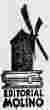
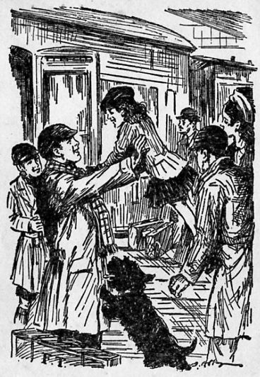
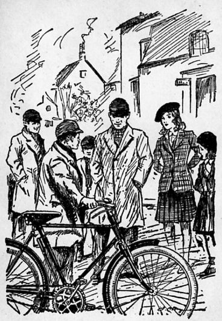
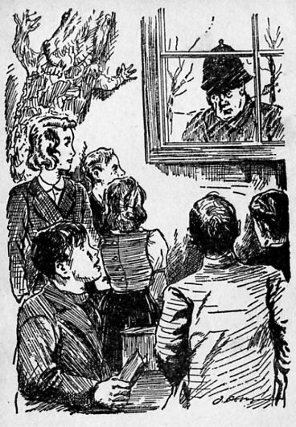
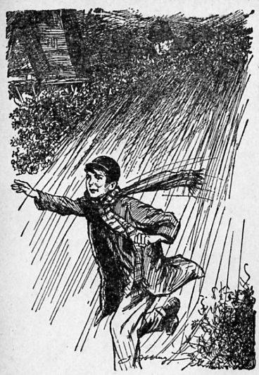
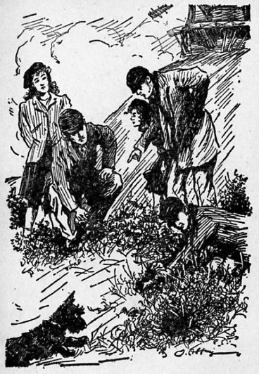
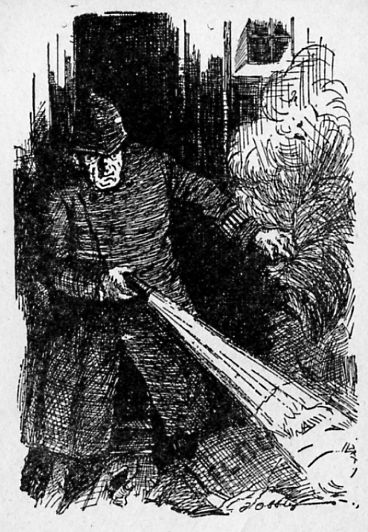
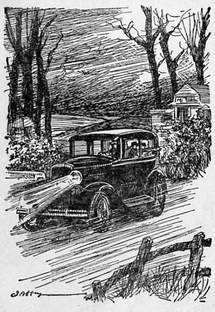
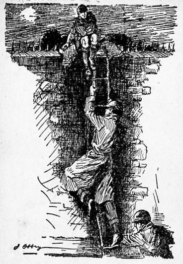

La falta de un caso en que ocuparse durante sus vacaciones hace que los Cinco Pesquisidores se inventen un misterio. Su intención es divertirse a costa del policía y de su sobrino Ern, pero las falsas pistas no sólo confundirán al señor Goon, sino que conducirán al ingenuo Ern hasta una verdadera banda de delincuentes. Para rescatar al chico los Cinco Pesquisidores tendrán que descubrir el misterio que se esconde en la vieja casa del bosque.
Enid Blyton
Misterio en la casa escondida
Colección Misterio [06]
Enid Blyton
Otros nombres: Enid Mary Blyton
País: Inglaterra
Nacimiento: East Dulwich, 11 de agosto de 1897
Defunción: Londres, 28 de noviembre de 1968
Escritora inglesa nacida el 11 de agosto de 1897 en East Dulwich y fallecida el 28 de noviembre de 1968 en Londres. Su verdadero nombre fue Enid Mary Blyton, aunque publicó tanto con su nombre de soltera, Enid Blyton, como con el de casada, Mary Pollock. Es una de las autoras de literatura infantil y juvenil más populares del siglo XX, siendo considerada por el Index Translationum como el quinto autor más popular del mundo, ya que sus novelas han sido traducidas a casi un centenar de idiomas, teniendo unas ventas de cerca de cuatrocientos millones de copias. Sin embargo, ha sido habitualmente ninguneada por la crítica, que la ha acusado de repetir hasta la saciedad modelos narrativos y estereotipos. Es principalmente conocida por series de novelas como Los Cinco y Los Siete Secretos (ambas ciclos de novelas cuyos protagonistas son jóvenes que forman una pandilla y que desentrañan misterios) o Santa Clara, Torres de Malory y La traviesa Elizabeth (ciclos ambientados en internados femeninos, la otra constante de su narrativa).
Título original
THE MYSTERY ON THE HIDDEN HOUSE
Traducción de
C. PERAIRE DEL MOLINO
Cubierta de
NOIQUET
Ilustraciones de
J. ABBEY

© EDITORIAL MOLINO, 1969
Apartado de Correos 25
Calabria, 166 — Barcelona (15)
Depósito Legal B. 9.389-1961
Número de Registro 1.781-1961
Impreso en España — Printed in Spain
A. G. PONSA. - Gonzalo Pons, 23 - Hospitalet (Barcelona)
PREFACIO
Éste es el sexto libro que nos cuenta las aventuras de los cinco muchachos y el perro. Aquí están de nuevo, Fatty, Larry, Daisy, Pip y Bets, y «Buster», el «scottie», ocupados en resolver otro misterio. El señor Goon también interviene en la investigación, pero se arma un lío.
Este libro, a pesar de ser el sexto de la serie, constituye por sí mismo una obra completa. Las otras obras son:
Misterio de la villa incendiada
Misterio del gato desaparecido
Misterio en la casa deshabitada
Misterio de los anónimos
Misterio del collar desaparecido
CAPÍTULO PRIMERO
EL GORDITO EN LA ESTACIÓN
—Es hoy cuando regresa Fatty —dijo Bets a Pip—. ¡Cuánto me alegro!
—Es la sexta vez que dices eso durante la última hora —replicó Pip—. ¿Es que no se te ocurre nada más?
—No —dijo Bets—. Estoy tan contenta de pensar que pronto veremos a Fatty —yendo hasta la ventana miró al exterior—. Oh..., Pip, ahí vienen Larry y Daisy. Supongo que también vendrán con nosotros a la estación para esperar a Fatty.
—Pues claro —contestó Pip—. ¡Y apuesto a que el viejo «Buster» aparecerá también! ¡Imagínate a Fatty marchándose sin su perro «Buster»!
Larry y Daisy penetraron en el cuarto de jugar de Pip.
—¡Hola! ¡Hola! —les dijo Larry, arrojando su gorra sobre una silla—. ¿Verdad que es estupendo que vuelva Fatty? Cuando él no está, no suele ocurrir nada.
—Sin él no seríamos los Cinco Pesquisidores —dijo Bets—. ¡Sólo cuatro... y sin nada que descubrir!
Larry, Daisy, Fatty, Pip y Bets se llamaban a sí mismo los Cinco Pesquisidores (y el perro, debido a «Buster»). Y realmente habían demostrado gran pericia descubriendo toda clase de extraños misterios durante diversas vacaciones cuando regresaban del internado. El señor Goon, el policía del pueblo, había hecho también todo lo posible por resolverlos, pero los Cinco Pesquisidores siempre le aventajaron, cosa que le molestaba en gran manera.
—Tal vez surja algún misterio cuando llegue Fatty —dijo Pip—. Es de esa clase de personas a quienes siempre les ocurren cosas. No puede evitarlo.
—¡Mira que no haberlo tenido aquí estas Navidades! —exclamó Daisy—. Me ha resultado muy extraño. Yo le he guardado sus regalos.
—Y yo también —replicó Bets—. Le hice un cuaderno de notas con su nombre completo en la cubierta con unas hermosas letras. Mirad..., aquí está: Federico Algernon Trotteville. ¿Verdad que estará contento?
—No lo creo —repuso Pip—. Lo has manchado todo llevándolo de un lado a otro.
—Yo le compré esto —intervino Daisy, sacando una caja de su bolsillo. Y abriéndola, extrajo de su interior una hermosa barba negra—. Es para ayudarle a disfrazarse.
—Es una barba muy bonita —dijo Pip, acariciándola y colocándosela en la barbilla—. ¿Qué tal estoy?
—Pareces un tonto —repuso Bets al punto—. Pareces un niño con barba..., pero si se la pusiera Fatty, en seguida parecería un hombre mayor. Él sabe cómo arrugar el rostro y encorvar la espalda... y todo eso.
—Sí..., la verdad es que es muy hábil para disfrazarse —comentó Daisy—. ¿Recordáis cómo se disfrazó de Napoleón Bonaparte en la exposición de figuras de cera durante las últimas vacaciones?
Todos se echaron a reír al recordar a Fatty de pie entre las figuras de cera con aire solemne, y tan quieto, que parecía una estatua más.
—El misterio que descubrimos las vacaciones pasadas fue estupendo —dijo Pip—. Espero que estas vacaciones también aparezca alguno. ¿Alguien ha visto últimamente al señor Goon?
—Sí, le vi ayer montado en su bicicleta —le replicó Bets—. Yo estaba atravesando la calle cuando él dobló la esquina. Casi me atropella.
—¿Y qué te dijo? ¿Lárgate? —preguntó Pip con una sonrisa.
El Ahuyentador era el apodo que los niños habían puesto al policía porque siempre que les veía a ellos o a «Buster», el perro de Fatty, les gritaba: ¡Largaos!
—Ha fruncido el ceño de esta manera —dijo Bets, arrugando la frente con aire tan fiero que todos se echaron a reír.
En aquel preciso momento, la señora Hilton, madre de Pip, asomó la cabeza por la puerta.
—¿Es que no vais a la estación a esperar a Federico? —les dijo—. ¡El tren está a punto de llegar!
—¡Cielos! ¡Sí, mirad la hora que es! —exclamó Larry, y todos se pusieron en pie de un salto—. Si no nos damos prisa, va a llegar antes que nosotros.
Pip y Bets cogieron sus sombreros y abrigos y los cuatro bajaron la escalera como una avalancha y produciendo más estrépito que una manada de elefantes. Cerraron la puerta principal de golpe y la señora Hilton les vio correr por la avenida a toda velocidad.
Llegaron a la estación en el momento en que entraba el tren. Bets estaba excitadísima y se apoyaba ora en un pie ora en otro, en espera de ver asomar la cabeza de Fatty por una ventanilla de algún vagón, pero no fue así.
El tren se detuvo. Se abrieron las puertas, y la gente fue bajando al andén con algunas maletas que los mozos se apresuraron a coger, pero no había el menor rastro de Fatty.
—Tal vez haya venido disfrazado para probarnos —dijo Larry, de pronto—. ¡Apuesto a que es eso! Se ha disfrazado y nosotros hemos de procurar descubrirle. De prisa, mirad a ver cuál de los pasajeros es.
—Ese hombre no parece ser, demasiado alto. Ni tampoco ese niño, él no es tan alto. Ni esa niña, porque la conocemos. Ni esas dos mujeres que son amigas de mi madre. Y ahí está la señorita Tembleque. Ella no es. Diantre, ¿quién podrá ser?
De pronto Bets dio un codazo a Larry.
—¡Mira, Larry..., «ahí» está Fatty! Mira, es ese niño gordito que está bajando una maleta del último vagón.
Todos miraron al niño de rostro sonrosado al final del tren.
—¡Sí! ¡Ése es el bueno de Fatty! Aunque no ha utilizado un disfraz tan bueno como el de otras veces..., quiero decir, que esta vez hemos podido descubrirle fácilmente.
—¡Ya sé! Finjamos que «no» le hemos visto —exclamó Daisy, de pronto—. Se disgustará. Le dejaremos que pase por nuestro lado sin decirle palabra. Y una vez fuera de la estación, le llamaremos.
—Sí..., eso haremos —dijo Larry—. Ahí viene. Haced como si no supiésemos que es Fatty.
De manera que el niño gordito avanzó por el andén hacia ellos, llevando su maleta y un impermeable echado al brazo, y ni siquiera le dirigieron una sonrisa. Todos miraban a lo lejos, aunque Bets estaba deseosa de echar a correr y cogerle del brazo fuertemente porque apreciaba mucho a Fatty.
El niño no les hizo el menor caso y siguió adelante mientras sus botas producían un ruido metálico sobre el andén de piedra. Entregó su billete al empleado, y al salir de la estación, dejó la maleta en el suelo y sacando un pañuelo moteado de rojo, se sonó ruidosamente.
—¡Así es como se suena el señor Goon! —susurró Bets, encantada—. ¿Verdad que Fatty es muy inteligente? Ha esperado para que le alcancemos. ¡No le dejemos que se salga con la suya! Andaremos detrás de él y cuando salgamos al camino, le llamaremos.
El niño guardó su pañuelo y cogiendo de nuevo su maleta, reemprendió la marcha. Los cuatro niños le siguieron de cerca. El niño, al oír sus pasos, volvió la cabeza y al verles, frunció el ceño. En lo alto de la colina dejó la maleta en el suelo para descansar el brazo.
Los niños se detuvieron también repentinamente. Cuando el niño recogió su maleta y echó a andar de nuevo, Larry y los otros le siguieron una vez más pegados a sus talones.
El niño volvió a mirar hacia atrás, y encarándose con ellos, les dijo:
—¿Qué pretendéis? ¿Es que os habéis convertido en mi sombra, o algo por el estilo?
Nadie dijo nada. Estaban un tanto sorprendidos. Fatty parecía muy enfadado.
—Largaos —les dijo el niño, volviéndose otra vez para reemprender su camino—. No quiero que me vaya siguiendo todo el día un atajo de niños tontos.
—¡Está mejor que nunca! —susurró Daisy, mientras los cuatro caminaban pegados a los talones del muchacho—. ¡Por un momento ha logrado asustarme!
—Digámosle que le hemos conocido —propuso Pip—. ¡Vamos! ¡Entonces podremos ayudarle finalmente a llevar la maleta!
—¡Eh! ¡Fatty! —gritó Larry.
—¡Fatty! ¡Hemos venido a esperarte! —exclamó Bets, cogiéndole del brazo.
—¡Hola, Fatty! ¿Has pasado unas buenas Navidades? —dijeron Daisy y Pip a un tiempo.
El niño se volvió otra vez, dejando su maleta en el suelo.
—Escuchad, ¿a quién creéis que estáis llamando Fatty? Sois unos mal educados. Si no os largáis en seguida, se lo diré a mi tío. Y es policía, ¿entendéis?
Bets se echó a reír.
—¡Oh, Fatty! Deja de fingir. Sabemos que eres tú. Mira, te he traído una libreta de notas como regalo de Navidad. Yo misma la hice.
El niño lo tomó bastante asombrado y paseó su mirada por los cuatro niños.
—¡Qué significa esto, es lo que quisiera saber! —dijo—. ¡Siguiéndome..., llamándome nombres raros..., estáis todos locos!
—Oh, Fatty, sé tú mismo, «por favor» —suplicó Bets—. La verdad es que es un disfraz estupendo..., pero sinceramente, te hemos descubierto en seguida. En cuanto bajaste del tren, todos dijimos: ¡Ése es Fatty!
—¿No sabéis lo que hago cuando la gente me insulta? —dijo el niño, volviéndose irritado—. ¡Les pego! ¿Alguien quiere pegarse conmigo?
—No seas tonto, Fatty —dijo Larry, con una carcajada—. Esto ya dura demasiado. Vamos a buscar a «Buster», apuesto a que se alegrará mucho de verte. Pensé que iría a esperarte a la estación con tu madre.
Y cogió del brazo al muchacho, que se desasió violentamente.
—Estás chiflado —volvió a decir el niño, cogiendo su maleta y alejándose con gesto altivo, y ante la sorpresa de los demás, eligió un campo equivocado. El que conducía al pueblo y no a la casa de su madre.
Le miraron sorprendidos e intrigados. Una pequeña duda iba tomando forma en sus cerebros. Siguieron al niño a buena distancia, le vieron llegar al pueblo, y allí ante su enorme sorpresa, penetró en el jardincito de la casa donde vivía el señor Goon, el policía.
Al volverse, vio a los cuatro niños en la distancia, y amenazándoles con el puño cerrado, fue a llamar a la puerta. Le abrieron y entró.
—«Tiene» que ser Fatty —dijo Pip—. Así es exactamente como nos hubiera amenazado. Debe estar tramando alguna broma muy complicada. Cielos..., ¿qué estará haciendo en casa del señor Goon?
—Probablemente habrá querido gastarle también una broma al señor Goon —dijo Larry—. De todas formas..., estoy un poco intrigado. Ni siquiera hemos conseguido que nos guiñara un ojo.
Estuvieron vigilando la casa del policía durante un rato y luego emprendieron el regreso. No habían llegado muy lejos cuando oyeron unos alegres ladridos y un perrito negro se abalanzó sobre ellos, lamiéndoles, saltando y ladrando como si se hubiera vuelto loco de repente.
—¡Vaya, si es «Buster»! —exclamó Bets—. ¡Hola, «Buster»! No has visto a Fatty. ¡Qué lástima!
Una señora se acercaba por el camino y los dos niños se quitaron la gorra para saludarla. Era la madre de Fatty, la señora Trotteville, quien sonrió afectuosamente a los cuatro niños.
—Imaginé que no andaríais muy lejos cuando «Buster» salió corriendo de repente a setenta kilómetros por hora —les dijo—. Voy a la estación a esperar a Federico. ¿Venís vosotros también?
—Ya le «hemos visto» —exclamó Larry, sorprendido—. Iba muy bien disfrazado, señora Trotteville, pero le descubrimos en seguida. Ha ido a casa del señor Goon.
—¿A casa del señor Goon? —replicó la señora Trotteville, asombrada—. ¿Pero, para qué? Me telefoneó para decirme que había perdido el tren, pero que cogería el que salía quince minutos después. ¿Entonces es que cogió el primero? Oh, Dios mío, quisiera que no empezase a disfrazarse... y espero que no volváis a complicaros en ningún misterio en cuanto Federico llegue a casa. ¿«Por qué» ha ido a ver al señor Goon? ¿Es que ha ocurrido algo anormal?
Aquello era una idea, y los niños se miraron unos a otros. Entonces oyeron el pitido de un tren.
—Tengo que marcharme —dijo la señora Trotteville—. ¡Si Federico no llega en ese tren, después de telefonearme que había perdido el otro, me enfadaré muchísimo!
Y a la estación se fue seguida de todos los pequeños.
CAPÍTULO II
¡HOLA, FATTY!
El tren llegó. Los pasajeros fueron apeándose... y de pronto Bets lanzó un grito, asustando a todos.
—¡«Ahí» está Fatty! ¡Mirad, mirad! ¡Y no viene disfrazado! ¡Fatty, Fatty!

Fatty levantó del suelo a la pequeña Bets cuando ella y «Buster» se abalanzaron sobre él. Besó a su madre y saludó a todo el mundo, sonriendo con su rostro bonachón.
—Habéis sido muy amables al venir a esperarme. Cielos, «Buster», me has hecho un agujero en los pantalones. ¡Basta!
La señora Trotteville estaba muy contenta de ver a Fatty, pero sentía a la vez una gran extrañeza.
—Los niños me dijeron que ya te habían venido a esperar... y que llegaste disfrazado —le dijo.
Fatty estaba atónito y se volvió hacia Larry.
—¿Qué queréis decir? ¡Yo no he llegado hasta ahora!
Los cuatro niños estaban confundidos, recordando todo lo que habían dicho al otro niño. ¿Era posible que no hubiese sido Fatty, al fin y al cabo?... Bueno, naturalmente que no podía ser él, porque allí «estaba» Fatty acabado de llegar en el tren siguiente. No podía haber tomado dos trenes a un tiempo.
—Hemos hecho el ridículo —dijo Larry, enrojeciendo—. Comprende...
—¿Os importaría que saliéramos de la estación antes de que los mozos crean que estamos esperando el próximo tren? —les dijo la señora Trotteville—. Somos los últimos que quedamos en el andén.
—Vamos —dijo Fatty, y él y Larry echaron a andar, llevando la maleta entre los dos—. Podemos hablar por el camino.
Bets cogió su impermeable, Pip una maleta pequeña y Daisy un montón de revistas. Todos estaban encantados de ver al verdadero Fatty, oír su voz firme y contemplar su amplia sonrisa.
—Verás —volvió a explicar Larry—, nosotros ignorábamos que habías perdido el primer tren y por eso vinimos a esperarte... y pensamos que tal vez llegarías disfrazado..., así que cuando se apeó del tren un niño gordito, pensamos que eras tú.
—Y al principio no te dijimos nada para intrigarte —dijo Pip—. Seguimos a ese muchacho fuera de la estación y se puso furioso contra nosotros.
—Y entonces le llamamos y yo dije: «¡Fatty!» —continuó Bets—. Y verás, él «era» gordito... y se volvió para decirnos que solía pegarse con la gente que le insultaba.
—¡Diantre! ¡Me maravillo de que no os desafiara a todos! —exclamó Fatty—. Debierais haber comprendido que yo no os diría cosas semejantes, ni siquiera «yendo» disfrazado. ¿Dónde vive?
—Fue a casa del señor Goon —replicó Daisy—. Dijo que el viejo Ahuyentador era su tío.
—¡Cielos! ¡Sí que habéis metido bien la pata! —exclamó Fatty—. Goon «tiene» un sobrino... y apuesto a que le ha invitado a su casa. ¡Pues no se pondrá poco furioso cuando sepa cómo le habéis recibido!
—Es una verdadera lástima —intervino la señora Trotteville, que lo había escuchado todo con asombro y desaliento—. Debió pensar que erais unos mal educados. Ahora probablemente el señor Goon volverá a quejarse de vuestro comportamiento.
—Pero, mamá..., ¿no comprendes que...? —comenzó Fatty.
—No empieces a discutir, Federico, por favor —dijo la señora Trotteville—. Me parece que tendrás que explicar al señor Goon que los otros te confundieron con su sobrino.
—Sí, mamá —dijo Fatty con voz sumisa.
—Y bajo ningún concepto comencéis una guerra contra ese niño —prosiguió la señora Trotteville.
—No, mamá —replicó Fatty, obediente.
—Quiero que estas vacaciones os apartéis de los misterios y problemas —dijo la señora Trotteville.
—Sí, mamá —repitió Fatty, y la señora Trotteville oyó la risa contenida de Bets y Daisy. Sabían perfectamente que Fatty no sentía lo que estaba diciendo. ¿Quién podría apartarle de un misterio, si es que llegara a olfatear alguno? ¿Y quién podía imaginarse que fuese a dar explicaciones al señor Goon?
—No digas, «sí, mamá», y «no, mamá», a menos que seas sincero —dijo la madre, lamentando tener que disgustarse con Fatty cuando acababa de verle.
—No, mamá. Quiero decir, sí, mamá —replicó Fatty—. Bueno..., diré lo que tú quieras que diga. Mamá, ¿pueden venir a merendar conmigo?
—Desde luego que no —contestó la madre—. Quiero charlar un rato contigo y oír todas las novedades... y luego tienes que deshacer tu equipaje... y tu padre no tardará en llegar a casa, y...
—Sí, mamá —se apresuró a decir Fatty—. Bueno, ¿pueden venir después? No les he visto estas vacaciones. Traigo algunos regalos para ellos. Por Navidad no les envié ninguno.
Al mencionar los regalos, hizo que Bets recordara de pronto que habían entregado su preciosa libreta de notas al niño gordito, y se mordió los labios horrorizada. ¡Cielos! ¡Si se la había metido en el bolsillo! No le pidió que se la devolviera porque se asustó tanto cuando les amenazó con pegarles que se olvidó de ella.
—Yo le di a ese niño el regalo que había hecho para ti —dijo con voz algo temblorosa—. Era un cuaderno de notas con tu nombre en la portada.
—¡Precisamente lo que quería! —exclamó Fatty gozoso—. ¡Ya haré que ese niño me lo devuelva, no te preocupes, chica!
—Recuerda lo que te he dicho —le advirtió la señora Trotteville cuando llegaban a su casa—. No empecéis a enemistaros tontamente con ese niño. Puede que sea muy simpático.
Todos tenían sus dudas. Cualquier sobrino del señor Goon debía ser tan desagradable como el propio policía. «Buster» ladró sonoramente y Bets se hallaba convencida de que estaba de acuerdo con ellos y expresaba su opinión en su lenguaje perruno.
—Mamá, aún no me has dicho si mis amigos pueden venir a casa esta noche —dijo Fatty cuando entraba en el jardín.
—No. Esta noche no —replicó la señora Trotteville ante la desilusión de todos—. Podéis veros mañana. Adiós, niños. Dad recuerdos míos a vuestras madres.
Fatty y «Buster» desaparecieron por el sendero del jardín con la señora Trotteville, y los otros le contemplaron desde la verja. Luego de mirarse unos a otros decepcionados, echaron a andar lentamente por la carretera.
—Debiera habernos dejado charlar «un rato» con Fatty —dijo Larry.
—La última vez que estuvimos en casa de Fatty armamos mucho alboroto —dijo Bets recordando—. ¿No os acordáis que pensamos que la señora Trotteville no estaba... y jugamos a un juego terrible inventado por Fatty que se llamaba la «Caza del elefante»...?
—Y la señora Trotteville sí que estaba en casa y no la oímos gritar que parásemos debido al ruido que hacíamos —dijo Pip—. Fue un juego verdaderamente estupendo. No lo olvidaremos.
—Escucha, ¿tú crees que ese chico «era» el sobrino del señor Goon? —preguntó Daisy—. Si le cuenta a su tío lo que hicimos, nos ganaremos algunos puntos negros más.
—Sabrá en seguida quiénes somos —prosiguió Bets dolida—. Ese niño tiene el cuaderno que yo hice... y lleva el nombre de Fatty. Oh..., pobre de mí..., dentro había escrito con mi mejor caligrafía «Pistas», «Sospechosos», y cosas por el estilo. Así que el señor Goon sabrá que andamos buscando otro misterio.
—Bueno, tontita, ¿y eso qué importa? —le preguntó Pip—. ¡Deja que piense lo que quiera!
—Tiene siempre tanto miedo al viejo Ahuyentador —exclamó Daisy—. ¡Yo no le temo! Somos mucho más listos que él. Hemos resuelto misterios que él no ha sido capaz de «comenzar» siquiera a descubrir.
—Espero que el señor Goon no vaya a quejarse a nuestros padres de nuestro comportamiento con ese niño —dijo Pip—. La verdad es que hemos debido de parecerle un poco locos. Probablemente Goon pensará que todo lo hicimos a propósito... que provocamos a ese chico sólo porque era su sobrino.
El temor de Pip era sincero. Tenía unos padres muy severos, con unas ideas muy estrictas acerca del comportamiento bueno y malo. Los padres de Larry y Daisy no eran tan severos y los de Fatty rara vez se preocupaban de él, mientras fuese cortés y bien educado.
Pero Pip había recibido algunas severas reprimendas de su padre y él y Bets siempre temían que el señor Goon fuera a quejarse. Así que cuando aquella tarde fueron a merendar, quedaron horrorizados al saber por Lorna, la doncella, que un tal señor Goon había telefoneado a su madre unos diez minutos antes.
—Espero que no os hayáis metido en ningún lío —les dijo Lorna, que quería mucho a los niños—. Dijo que iba a venir esta noche para ver a vuestra madre. Ahora ha salido a tomar el té. Pensé que debía advertiros por si os habéis metido en algún lío.
—Muchísimas gracias, Lorna —dijo Pip yendo a merendar tristemente con Bets al cuarto de jugar. La niña también estaba muy abatida. ¿Cómo «pudieron» pensar que aquel niño fuese Fatty? Pensándolo despacio, Bets se daba perfecta cuenta de que era un niño zafio y estúpido... ¡Ni siquiera Fatty disfrazado podía parecerse a él!
Los dos niños decidieron prevenir a Larry y a Daisy y para ello les telefonearon.
—¡Atiza! —exclamó Larry—. ¡Imagínatelo oyendo historias de su estúpido sobrino acerca de nosotros! ¡Yo no creo que mi madre preste mucha atención al señor Goon..., pero la tuya, sí! Es un hombre horrible. Anímate. Mañana nos reuniremos para hablar de todo esto.
Pip y Bets aguardaron la llegada, de su madre. Gracias a Dios su padre no iba con ella, y bajaron a saludarla.
—Mamá —le dijo Pip—. Nosotros... er... queremos decirte algo. Er... verás...
—«Vamos», ¿qué es lo que habéis hecho ahora? —dijo la señora Hilton impaciente—. ¿Habéis roto algo? Decídmelo sin rodeos.
—No. No hemos roto nada —dijo Bets—. Pero, verás, fuimos a esperar a Fatty a la estación...
—Y había un niño gordo al que tomamos por Fatty pensando que iba disfrazado —prosiguió—, de manera que le seguimos por la carretera... y él se puso furioso y...
—Y lo que queréis decirme es que cometisteis una torpe equivocación y llamasteis Fatty a un desconocido, y él se molestó —concluyó la señora Hilton haciendo tamborilear sus dedos sobre la mesa con impaciencia—. ¿Por qué «habéis» de hacer tantas tonterías? Bueno, supongo que habréis pedido disculpas, así que el daño no habrá sido grande.
—La verdad es que no nos disculpamos —replicó Pip—. Creímos que «era» Fatty, pero no lo era. Se trataba del sobrino del señor Goon.
La señora Hilton demostró verdadera contrariedad.
—Y supongo que ahora ese policía vendrá otra vez a quejarse de vosotros. Bueno, ya sabes lo que te dijo tu padre la última vez, Pip... dijo...
La puerta se abrió dando paso a Lorna.
—Por favor, señora, el señor Goon desea verla. ¿Le hago pasar?
Antes de que la señora Hilton pudiera responder sí o no, los dos niños habían abierto los ventanales que daban al jardín y desaparecieron en la oscuridad. En cuanto estuvieron fuera, Pip deseó no haberse marchado, pero Bets había tirado de él con tanta desesperación que salió con ella. Una fuerte ráfaga de aire helado entró en la salita de estar.
La señora Hilton cerró la puerta del jardín con aire enojado. El señor Goon penetró en la estancia con su andar lento y majestuoso. Pensaba que el señor y la señora Hilton eran padres competentes... y que escucharían seriamente sus quejas. ¡Bueno, ahora sí que iba a divertirse!
—Siéntese, señor Goon —dijo la señora Hilton tratando de ser amable—. ¿En qué puedo servirle?
CAPÍTULO III
ERN
Pip y Bets fueron hasta la puerta de la cocina y entraron en la casa. La cocinera había salido y Lorna estaba arriba. Pasaron como una exhalación por delante del gran gato negro que dormitaba sobre la alfombra del hogar, y subieron al cuarto de jugar.
—Yo hubiera preferido quedarme —dijo Pip—. No he hecho nada malo. Ha sido una tontería echar a correr. Mamá pensará que realmente hemos obrado mal.
—¡Atiza! ¿No es papá ese que entra? —exclamó Bets—. Sí que es papá. ¡Él también va a enterarse de todo!
El señor Goon permaneció largo tiempo en la casa, pero al fin se marchó, y la señora Hilton fue a llamar a Pip:
—¡Pip! Trae aquí a Bets, haz el favor. Tenemos algo que deciros.
Los dos niños bajaron la escalera. Bets bastante asustada y Pip con expresión valerosa, pero ante su sorpresa vieron que sus padres no parecían enfadados.
—Pip —le dijo su madre—. El señor Goon ha venido a decirnos que su sobrino va a pasar unos días en su casa. Dice que es un muchacho muy simpático, muy leal y sincero, y que os agradecería que ninguno de los cinco le buscarais complicaciones. Ya sabéis que todas las vacaciones os habéis mezclado en misterios de una clase u otra... hubo el de la villa incendiada... el gato desaparecido... y...
—Y el de los anónimos, el cuarto secreto y el collar desaparecido —concluyó Pip satisfecho al ver que el señor Goon no había presentado grandes quejas.
—Sí. Cierto —dijo su padre—. Bien, pues el señor Goon no quiere que su sobrino se mezcle en nada parecido. Dice que ha prometido a la madre del muchacho que cuidaría de él durante estas vacaciones, y no quiere que vosotros le arrastréis a ningún misterio o peligro...
—¡Cómo si nosotros lo «deseáramos»! —exclamó Pip con disgusto—. Su sobrino es un zoquete, y no queremos arrastrarle a ninguna parte..., preferimos que siga solo.
—Bueno, cuidad de ello —dijo su madre—. Y por favor, sed amables y corteses con él. Al parecer hoy estuvisteis muy rudos con él... pero como Pip ya me ha explicado vuestra confusión, me doy perfecta cuenta de que no era ésa vuestra intención. El señor Goon se ha mostrado muy comprensivo.
—No arrastraremos a su sobrino a ninguna parte —dijo Pip—. Si descubrimos algún misterio, lo reservaremos para nosotros solos.
—Ésa es otra cosa que quiero decirte —intervino su padre—. No quiero que os mezcléis en estas cosas. Corresponde a la policía el resolver estos misterios y aclarar cualquier delito que se cometa, y ya es hora de que vosotros os apartéis de ello. Os prohíbo que tratéis de resolver ningún misterio durante estas vacaciones.
Pip y Bets le miraron con el mayor pesar.
—Pero, escucha..., nosotros pertenecemos a los Cinco Pesquisidores —tartamudeó Pip—. Y si surge algún misterio «hemos» de cooperar. Quiero decir..., que la verdad es... que... no podemos prometerte que...
—El señor Goon ya ha ido a ver a los padres de Larry y Daisy —dijo la señora Hilton—. Y le han dicho que ellos también prohibirán a sus hijos el intervenir en cualquier misterio durante estas vacaciones. Ni ellos ni vosotros habéis de buscar ninguno, ¿entendido?
—Pero... pero suponte que aparece uno... y que nos vemos mezclados en él sin saberlo —intervino Bets—. Como en el misterio del collar desaparecido.
—Oh, no surgirá ninguno, si no lo buscáis —replicó el señor Hilton—. Naturalmente que si os vierais mezclados en uno sin saberlo, nadie podrá echaros la culpa... pero estas cosas no ocurren así. Yo sólo os prohíbo que busquéis misterios estas vacaciones, y sobre todo que permitáis que el sobrino del señor Goon se vea mezclado en los mismos.
—Ahora podéis marcharos —dijo la señora Hilton—. ¡Y no estéis tristes! ¡Cualquiera diría que no podéis ser felices si no tenéis algún misterio a la vuelta de la esquina!
—Pues... —comenzó Pip, pero luego decidió no añadir más. ¿Cómo explicarles el encanto de husmear un misterio, de hacer una lista de sospechosos y pistas, de tratar de hacer que todo encaje como las piezas de un rompecabezas hasta encontrar la solución y completar la imagen?
Pip y Bets salieron de la estancia y subieron a su cuarto de jugar.
—¡Imagínate que también se lo han prohibido a Larry y a Daisy! —exclamó Pip—. Quisiera saber si el señor Goon habrá ido también a ver a los padres de Fatty.
—Bueno, yo no creo que sirva de nada el prohibir a Fatty que se mezcle en estos casos —dijo Bets.
Bets tenía razón. Era inútil. Fatty habló con su madre y con su padre sobre este punto de vista ante las mismas narices del señor Goon.
—Le he sido muy útil al inspector Jenks —dijo a sus padres— vosotros sabéis que es cierto. Y también que seré el mejor detective del mundo cuando sea mayor. Estoy seguro, mamá, de que si telefoneas al inspector, te dirá que no me prohíbas hacer mi gusto. Él confía en mí.
El inspector Jenks era un gran amigo de los niños. Era el jefe de la policía de la ciudad vecina, y de toda la comarca.
El señor Goon sentía gran admiración por él, y era cierto que los niños habían ayudado muchas veces al inspector resolviendo diversos sucesos misteriosos.
—Telefonea al inspector, mamá —dijo Fatty viendo que el policía no deseaba que la señora Trotteville hiciera nada parecido—. Estoy seguro de que te dirá que el señor Goon se equivoca.
—No moleste al inspector, señora Trotteville, «por favor» —dijo el señor Goon—. Es un hombre muy ocupado. Yo no hubiera venido a verle de no ser por mi sobrino... es un niño sencillo e inocente...
—Bueno, estoy segura de que Federico prometerá no arrastrarle a ningún peligro —replicó la señora Trotteville—. Es lo último que desearía hacer.
Fatty no dijo nada. Él no hacía promesas. Tenía el presentimiento de que le sentaría bien al sobrino del señor Goon el que le arrastraran a alguna cosa, si es que era tan sencillo e inocente como el policía daba a entender. ¡De todas maneras, aquello era sólo para asegurarse de que los Cinco Pesquisidores no resolverían otro misterio antes que el señor Goon! Fatty «lo veía» claramente.
El señor Goon, poco satisfecho, se alejó majestuosamente por el sendero del jardín, descubriendo contrariado que el neumático delantero de su bicicleta había sufrido un repentino pinchazo. Era imposible relacionarlo con aquel niño, puesto que estuvo todo el tiempo en la habitación..., pero el señor Goon pensó que era extraño que le ocurrieran tantas cosas desagradables cuando tramaba algo contra Federico Algernon Trotteville.
Al día siguiente los Cinco Pesquisidores se reunieron en casa de Fatty, y «Buster» les dio a todos una ruidosa bienvenida.
—¡Vaya! —ladraba—. Ya estamos todos juntos otra vez. Eso es lo que más me gusta.
Pero por lo menos cuatro de los cinco estaban abatidos.
—Ese «estropealotodo» de Goon —dijo Larry—. Estábamos esperando que volvieras a casa para buscar otro misterio que resolver, Fatty, y ahora nos han prohibido que lo hagamos.
—Y todo por ese estúpido sobrino del señor Goon —exclamó Daisy.
—Pues... «yo» pienso hacer exactamente lo que hice siempre —replicó Fatty—. Buscar un misterio, descubrir pistas y sospechosos, unir las piezas... y solucionarlo todo antes de que el señor Goon se entere siquiera de lo que ocurre. ¡Y durante todo el tiempo os tendré al corriente de lo que haga!
—Sí..., pero nosotros queremos intervenir —dijo Pip—. Cooperar quiero decir..., no limitarnos a mirar mientras tú lo haces todo. Eso no es divertido.
—Bueno, no creo que surja nada estas vacaciones —sonrió Fatty—. No va a ocurrir «siempre». Pero sería muy divertido simular que vamos tras algo para hacer que el sobrino de Goon se preocupe e intrigue, ¿no os parece? Seguramente le diría algo a Goon, quien no sabría si creerlo o no... y eso le haría estar sobre ascuas.
—Es una idea estupenda —exclamó Larry complacido—. Estupendísima. Si no logramos descubrir un misterio, inventaremos uno para ese chico. ¡Le estará bien empleado a Goon por querer estropearnos la diversión!
—Vamos a ver si encontramos a ese niño —propuso Fatty—. ¡Tengo interés por ver por qué clase de tipo me confundisteis! ¡Tiene que ser muy guapo, eso es todo lo que puedo decir!

Fueron todos al pueblo. Tuvieron suerte, porque en cuanto llegaron ante la casa del señor Goon, su sobrino salía de la casa llevando la bicicleta del policía, quien le había ordenado que la llevara al garaje a componer el pinchazo.
—¡Ahí está! —gritó Bets excitada, y al verle, el rostro de Fatty se fue cubriendo de una expresión de profundo disgusto. Miró a los Pesquisidores decepcionado.
—¡Vaya! ¿«Cómo» pudisteis pensar que ese chico era yo... aunque fuese «disfrazado»? ¡La verdad es que no lo entiendo! ¡Es un zoquete! ¡Una bola! No me parece inteligente. Cielo santo, no es posible que yo me parezca «en nada» a él.
Fatty parecía tan ofendido que Bets le cogió del brazo.
—¡Fatty! No te enfades. Pensamos que era una de tus mejores caracterizaciones.
El niño dirigió la bicicleta hacia ellos, y al verles, se detuvo sonriéndoles, cosa que les sorprendió.
—¡Hola! Ya sé que ayer os equivocasteis. Me hicisteis enfadar. Se lo conté a mi tío, y él supuso que erais vosotros. Dijo que os hacíais llamar los Pesquisidores, o algo por el estilo. Dijo que erais una pandilla de insolentes.
—¿Cómo te llamas? —le preguntó Pip.
—Ern —dijo el muchacho.
—¿«Ern»? —repitió Bets sorprendida.
—«Sodicho» —contestó Ern.
Nadie entendió esta última frase.
—Perdón, ¿cómo dices? —le preguntó Larry, cortés.
—Dije «sodicho» —replicó Ern impaciente.
—Oh..., quiere decir «Eso he dicho» —explicó Daisy a los otros.
—Bueno... «Sodicho», ¿no? —dijo Ern extrañado.
—¿«De verdad» se llama Ern? —preguntó Bets a los otros.
—Es un diminutivo de Ernesto..., ¿comprendes? —dijo Ern—. Tengo dos hermanos. Uno se llama Sid, diminutivo de Sidney, y el otro Perce, abreviatura de Percy. Ern, Sid y Perce..., así nos llaman a los tres.
—Muy bonito —murmuró Fatty—. Ern te sienta maravillosamente.
Ern parecía satisfecho.
—Y Fatty te va muy bien —replicó en tono amable—. Te va de primera de los pies a la cabeza. Y Pip también te sienta bien..., debe ser el diminutivo de granito de pimienta, ¿no? Yo diría que necesitas crecer un poco.
Los Pesquisidores consideraron que aquellos comentarios estaban fuera de lugar viniendo de Ern, quien estaba creciendo demasiado para el tamaño de sus botas.
—Espero que pases unas felices vacaciones con tu tío —le dijo Bets de pronto con mucha educación. Ern lanzó un resoplido muy curioso.
—¡Ooooh! ¡Mi tío! ¡Es arrogante y altanero! ¡Dice que no debo dejarme arrastrar hacia el peligro por vosotros! Bueno, escuchad..., si descubrís algún misterio decídmelo a mí, a Ern Goon. Me gustaría demostrarle a mi tío que soy más listo que él.
—Eso no sería muy difícil —dijo Fatty—. Bien, Ern... desde luego que te tendremos al corriente de todos los misterios que descubramos. Supongo que debes saber que tu tío nos ha prohibido resolver ningún misterio estas vacaciones... de manera que tal vez tú puedas ocupar nuestro lugar y resolverlo en sus mismas narices.
Los ya saltones ojos de Ern casi se le salen de las órbitas.
—¡Serpientes solitarias! ¿Lo dices en serio? Repato.
—Sí. Te proporcionaré toda clase de pistas —le dijo Fatty en tono solemne—. Pero no vayas a decírselo a tu tío para que no se enfade con nosotros.
—Puedes apostar a que no —replicó Ern.
—Oh, Ern..., ¿puedes devolverme esa libreta de notas que te di ayer por equivocación? —le dijo Bets de pronto—. No era para ti, naturalmente. La hice para Fatty.
—Pensaba utilizarla para mis «posías» —dijo Ern con aire decepcionado. La sacó de su bolsillo para entregársela a Bets—. Me encanta la «posía».
—¿Qué es la «posía»? —preguntó Bets intrigada.
—¡«Posía»! ¡Repato!, ¿no sabes lo que es «posía»? Es cuando las cosas riman igual.
—Oh..., quieres decir «poesía» —exclamó Bets.
—«Sodicho» —dijo Ern—. Bueno, yo escribo «posía». Aquello era tan sorprendente que por un momento nadie habló.
—¿Qué clase de poesía... er, quiero decir «posía»? —le preguntó Fatty.
—Te recitaré alguna —contestó Ern muy satisfecho de sí mismo—. Ésta es una que se titula «El pobre cerdo muerto». —Se aclaró la garganta antes de comenzar.
«Qué pena da verte, pobre cerdo muerto
cuando todos...»
—¡Mira..., ahí está tu tío! —exclamó de pronto Larry cuando una figura vestida de azul oscuro apareció en el jardincito de la casa del señor Goon.
El policía lanzó un gruñido.
—¿Qué hay de mi «bicicleta»? ¿No te dije que la necesitaba en seguida?
—¡Hasta la vista! —dijo Ern echando a correr calle abajo—. ¡Os veré más tarde!
CAPÍTULO IV
FATTY SE MUESTRA MISTERIOSO
Ern no tardó en convertirse en un terrible problema. Aguardaba cada día a los Pesquisidores insistiendo para que le contasen si aún no habían olfateado ningún misterio. Sentía grandes deseos de recitar sus «posías», y sorprendió a los cinco niños explicándoles la baja opinión que tenía de su tío, el señor Goon.
—Nosotros teníamos una opinión muy baja del viejo Ahuyentador —dijo Larry—, pero la verdad es que al oír a Ern hablar de su tío, cualquiera pensaría que es el policía más perezoso, mezquino, solapado y glotón que haya existido jamás.
Ern siempre les contaba cosas terribles de su tío.
—Se come tres huevos y todo el jamón para desayunar, y a mí no me deja más que un plato de potaje —dijo Ern—. ¡No me extraña que esté reventando su uniforme!
—Mi tío es un perezoso —les contó en otra ocasión—. ¡Tendría que estar de servicio cada tarde, pero echa la cabeza hacia atrás, cierra los ojos y ronca hasta la hora de la merienda! ¡Cómo me gustaría que viniera el inspector y le pescara!
—Mi tío dice que os mereceríais que os encerrasen unos días, porque sois una pandilla de descarados —les dijo Ern otro día—. Le gustan «tu» padre y «tu» madre, Pip..., pero dice que los de Fatty son...
—Escucha, Ern..., no debieras repetir lo que tu tío dice de nosotros o de otras personas —replicó Fatty—. Es una mala pasada. Sabemos muy bien que el señor Goon no te contaría todas esas... cosas si pensase que ibas a repetirlas.
Ern lanzó uno de sus resoplidos.
—¡Repato! ¿Para qué pensáis que me lo dice? ¡Claro que quiere que os lo cuente! Es un medio bien sencillo para ser grosero con vosotros.
—¿De veras? —exclamó Fatty—. Bueno, pues a ese juego pueden jugar dos. Dile a tu tío que lo considero un...
—Oh, no, Fatty —le dijo Bets alarmada—. Sólo conseguirás que vuelva a quejarse a nuestros padres.
—No puede ir a quejarse a «tus» padres por lo que yo diga —replicó Fatty.
—Oh, sí que puede —intervino Pip—. Debieras verle entrar en nuestra casa como un «bull-dog» de pies planos, tan pomposo como un...
Ern lanzó tal resoplido que todos pegaron un respingo. Pip se detuvo en seco.
—¡Eso es muy bueno, vaya si lo es! —dijo Ern—. ¡Repato, cómo me gustará ver la cara que pone tío Teófilo cuando se lo cuente!
—¡Si lo repites te pegaré! —le amenazó Pip, furioso consigo mismo por decir semejantes tontería delante de Ern—. Te aplastaré tu fea nariz y...
—Cállate, Pip —dijo Fatty—. Si ni siquiera sabes boxear. Tendrías que aprender boxeo en el colegio como yo. ¡Debieras verme boxear! Vaya, el curso pasado derroté a un chico que hacía dos como yo, y en cinco minutos, yo...
—Le tumbaste de espaldas con un par de ojos a la funerala y una oreja desgarrada —concluyó Larry.
Fatty le miró sorprendido.
—¿Cómo lo sabes? —exclamó—. ¿Te lo había contado ya?
—No, pero tus historias siempre terminan por el estilo —sonrió Larry.
—¿Todavía no habéis descubierto ningún misterio? —preguntó Ern, a quien no le gustaba verse apartado de la conversación mucho tiempo, y Fatty al punto se hizo el misterioso.
—Bueno —dijo, pero luego vaciló—. Creo que será mejor que no te lo cuente, Ern. Irías a decírselo a tu tío. No eres capaz de tener la boca cerrada.
Ern comenzó a dar muestras de excitación.
—¡Vamos! Ya sabes algo, lo sé. Tú dijiste que si descubrías algún misterio me lo contarías. ¡Repato! ¿Verdad que sería un golpe para mi tío, si yo interviniera en un misterio y lo resolviera antes de que él «lofateara»?
—¿Cuál ha sido la última palabra? —preguntó Fatty. Ern tenía la curiosa costumbre de pronunciar juntas algunas palabras—. ¿«Lofateara»? ¿Qué es eso?
—¡«Lofateara»! —repitió Ern—. ¿Es que no entiendes lo que digo? «Lofateara».
—Quiere decir «lo olfateara» —dijo Daisy.
—«Sodicho» —dijo Ern frunciendo el ceño.
—«Sodicho» —repitió Fatty a los demás.
Todos rieron, y Ern acentuó su ceño. No le gustaba que los demás se burlaran de él, pero pronto se animó.
—Continúa..., háblame de ese misterio que has descubierto —suplicó a Fatty.
Fatty, naturalmente, no estaba al corriente de ningún misterio. En realidad, las vacaciones se extendían ante él, aburridas y monótonas, sin el menor asomo de misterio por parte alguna. Sólo Ern prometía algo de diversión y Fatty se hizo el misterioso.
Comenzó a hablar en un susurro.
—Bueno —dijo—, es lo siguiente. —Se detuvo mirando por encima de su hombro por si había alguien escuchando. Ern comenzó a emocionarse.
Entonces Fatty volvió a menear la cabeza con recelosa decisión.
—No. Ern. No puedo contártelo aún. No creo que fuese conveniente. Estoy sólo al principio; esperaré a saber algo más.
Ern apenas podía contener su excitación, y se agarró al brazo de Fatty.
—¡Escucha, «tienes» que contármelo! —le aseguró—. ¡No diré ni una palabra a mi tío! Vamos, Fatty, sé bueno.
Los otros miraron a Fatty procurando no soltar la carcajada. Sabían que no tenía nada que contar. Pobre Ern... se tragaba todo lo que decían.
—Aguardaré hasta que tenga algo más que contar —le dijo Fatty—. No, es inútil, Ern. Ni siquiera los otros saben nada todavía. Aún no ha llegado el momento de revelar el caso.
—¡Repato! Qué bien suena eso —exclamó Ern, impresionado—. Está bien, esperaré. Escucha... ¿tú crees que debiera comprarme un librito de notas para escribirlo todo como la pequeña Bets lo escribió en el que te regaló?
—No sería mala idea —dijo Fatty—. Saca ése que llevas en el bolsillo... y te enseñaré lo que tienes que escribir.
—No. Ésta es mi libreta de «posía» —replicó Ern—. No puedo escribir en ella más que «posía» —la sacó volviendo sus páginas—. Mirad... anoche escribí un poema... y muy bueno por cierto. Se titula «Pobre jamelgo viejo». ¿Queréis que os lo lea?
—Pues, no... ahora no —dijo Fatty mirando su reloj y adoptando una expresión de sobresalto—. Cielos... mirad qué hora es. Lo siento, viejo jamelgo..., pobre viejo jamelgo..., pero hoy no puedo entretenerme. Otro día, tal vez. Cómprate una libreta, Ern, y te enseñaremos todo lo que debes anotar en un cuaderno de misterios.
Y los cinco se alejaron sonrientes con «Buster». Ern regresó al lado de su tío, preguntándose si debía repetir las palabras de Pip... ¿Cómo dijo? Un «bull-dog» de pies planos. Qué bueno. ¡Tan bueno como para ponerlo en un poema!
—¡Vaya con Ern, sus poemas y sus «posías»! —rió Daisy—. Ojalá pudiera conseguir ese cuaderno de «posía»... ¡escribiría un poema que haría saltar de su silla al Ahuyentador!
—¡Buena idea! —exclamó Fatty reservándola mentalmente para emplearla en el futuro—. ¡Y ahora, Pesquisidores, será mejor que planeemos alguna pista absurda para enviar a Ern tras ella! No podemos decepcionarle. Tenemos que darle algo de emoción.
Fueron al cuarto de jugar de Pip para trazar su plan.
—No sería mala idea ensayar algunos disfraces —dijo Fatty pensativo—. No parece que vayamos a tener grandes diversiones estas fiestas, así que podríamos inventarlas nosotros.
—Oh, sí... ensayemos disfraces —exclamó Bets, excitada.
—Vamos a pasarlo muy bien con el bueno de Ern —rió Fatty—. Y ahora nuestro plan. ¿Tenéis alguna idea que sea aprovechable?
—Pues... ¿qué os parece un rapto misterioso o algo por el estilo? —propuso Larry—. Hombres que raptan a niños ricos y los tienen prisioneros. Podríamos hacer que Ern tratase de rescatarlos.
—O podríamos hacer que brillaran luces misteriosas por la noche, y enviar a Ern para que averiguase lo que eran —dijo Bets.
—Adelante. Estamos consiguiendo ideas muy buenas —exclamó Fatty.
—¿O qué os parece un robo con el botín escondido en algún sitio... y Ern tuviera que encontrarlo? —sugirió la pequeña Daisy.
—O una serie de pistas para intrigar a Ern. Ya sabes, como aquella vez que pusiste un montón de pistas para que las encontrase el Ahuyentador —dijo Pip—. Palabra... nunca lo olvidaré.
Todos rieron, y Fatty se golpeó las rodillas con su lápiz mientras pensaba.
—Todas son ideas muy buenas —dijo—. Superiores, esa es la verdad. Voto por que las utilicemos todas. Con Ern no hay que escamotear. Y si el viejo Goon se interesa también por ellas, tanto mejor. Apuesto a que Ern no es capaz de mantenerlas en secreto. Goon sabrá que hay algo extraño... pero ignorará lo que es mentira y lo que es verdad. ¡Los tendremos a los dos sobre ascuas!
—No será tan bueno como un auténtico misterio, pero resultará divertido —dijo Bets—. ¡Y le estará bien empleado al señor Goon por venir a quejarse a papá y mamá! ¡Y por tratar de apartarnos de cualquier misterio durante estas vacaciones!
—Y no es que por el momento haya el menor asomo de ninguno —se lamentó Daisy.
—Bueno, ahora manos a la obra —dijo Fatty—. Ern vendrá con su cuaderno de notas la próxima vez que le veamos, estoy seguro. Escribiremos los encabezamientos de costumbre... Pistas, Sospechosos, Progresos y demás. Luego empezaremos por proporcionarle algunas pistas. Será mejor que dejemos que sea él quien las encuentre. Será mucho mejor si cree que es más listo que nosotros para descubrir cosas. Yo inventaré alguna historia, que ahora no os digo, para que os resulte completamente nueva. ¡Así podréis escucharla abriendo mucho los ojos y conteniendo la respiración!
—¿Qué significa conteniendo la respiración? —preguntó Bets—. ¿Es que hemos de respirar más de prisa, o algo así?
—No... sólo contenerla, tonta —replicó Pip—. Y no vayas a descubrir el juego, Bets. ¡Sería muy propio de ti!
—¡«No» es cierto! —replicó Bets, indignada—. ¿Verdad, Fatty?
—No. Eres una buena Pesquisadora —dijo Fatty para consolarla—. Y apuesto a que sabes contener la respiración mejor que nadie. Hola, ¿qué es esto?
—La campana anunciando la comida —dijo Pip con pesar—. Siempre suena cuando estamos a mitad de alguna cosa.
—«Elástima» —dijo Fatty poniéndose en pie.
—¿Qué quiere decir «elástima»? —preguntó Larry.
—¡Quiere decir... que «es una lástima»! —exclamó Bets riendo.
—«Sodicho» —contestó Fatty, disponiéndose a marchar.
CAPÍTULO V
EN EL COBERTIZO DE FATTY
Al día siguiente Ern recibió un mensaje que le llenó de excitación. Era una carta de Fatty.
«Acontecimientos. Tengo que hablar contigo. Ven al fondo de mi jardín a las doce. F.T.»
El señor Goon vio cómo Ern devoraba el contenido de la nota y en seguida entró en sospechas.
—¿De quién es?
—De un amigo mío —replicó Ern guardándosela en un bolsillo.
El señor Goon se puso como la grana.
—Enséñamela —le dijo.
—No puedo —replicó Ern—. Es particular.
—¿Qué quiere decir... «particular»? —rugió el señor Goon—. Un niño como tú no sabe lo que significa particular. Dame esa nota.
—Pero tío... es de Fatty, y sólo dice que quiere verme —protestó Ern.
—¡Enséñame esa nota! —gritó el señor Goon, y Ern asustado, tuvo que entregársela. El policía al leerla lanzó un gruñido.
—¡Bah! ¡Una sarta de tonterías! ¡Conque acontecimientos! ¿Qué quiere decir eso?
Ern no lo sabía y así lo repitió varias veces, pero tu tío no quiso creerle.
—¡Si ese sapo descarado vuelve con sus trucos, le desollaré vivo! —exclamó el señor Goon—. Puedes decírselo.
—Oh, así lo haré, tío —dijo Ern tratando de escabullirse de la habitación—. Siempre les digo lo que tú dices. Les gusta oírlo, pero no hay derecho a que Pip diga que eres un «bull-dog» de pies planos, y pienso decírselo.
Antes de que el acalorado señor Goon pudiera recuperar el habla para decirle lo que pensaba, Ern ya había salido de la casa. Se secó la frente. ¡Repato!... Su tío era un sujeto muy irascible. De todas maneras no le había prohibido ir... ¡y eso era algo!
Al llegar al fondo del jardín de Fatty oyó voces procedentes del cobertizo, que era la habitación de trabajo y juegos de Fatty. Como aquel día el frío arreciaba había encendido una estufa de petróleo que ardía alegremente en el interior del cobertizo, que de esta manera estaba calentito y acogedor. En el suelo había una piel de tigre vieja y comida por la polilla, pero magnífica, y en una de las paredes una piel de cocodrilo. Los Cinco Pesquisidores estaban tratando de asar castañas encima de la estufa. Tenían una lata de leche condensada y mientras hablaban iban tomando sendas cucharadas.
Ern miró por la ventana. ¡Ah! Estaban todos. ¡Bien! Fue a llamar a la puerta.
—¡Adelante! —dijo Fatty, y Ern entró acompañado de una ráfaga de aire frío.
—Cierra la puerta —le dijo Daisy—. ¡Ooooh! ¡Qué frío! Hola, Ern. ¿Te ha gustado el huevo del desayuno que hoy te has comido?
Ern pareció sorprendido.
—Sí. ¿Pero, cómo sabes que he tomado huevo para desayunar?
—Oh... esta mañana estamos haciendo prácticas detectivescas —replicó Daisy mientras los demás procuraban no reírse. Ern se había manchado de huevo la parte delantera de su chaqueta, de manera que no era difícil adivinar lo que había desayunado.
—Siento que hayas tenido que venir tan precipitadamente —dijo Fatty en tono solemne.
Ern se sorprendió aún más.
—¡Repato! ¿Cómo sabes que salí a toda prisa?
Ern no llevaba ni gorra ni abrigo, de manera que no era difícil tampoco adivinar su prisa. Nadie le explicó cómo supieron lo del desayuno ni lo de su precipitación, y él se sentó muy intrigado.
—Tal vez te agrade decirme lo que «yo» he tomado para desayunar —le dijo Fatty a Ern—. Vamos... sé tú también un poco detective.
Ern miró el rostro serio de Fatty, pero no se le ocurrió la menor idea.
—No —dijo meneando la cabeza—. Ya veo que estas cosas requieren práctica. Vaya lo que me emocioné esta mañana al recibir tu nota. Mi tío me vio leerla.
—¿De veras? —exclamó Fatty, interesado—. ¿Y te dijo algo?
—Oh, se puso furioso, ya le conocéis, pero yo pronto «lo arreglaré» —explicó Ern—. Le dije lo que pensaba de él. «Tío —le dije—, es una nota particular. No es asunto tuyo, de manera que no te metas en esto.» Así mismo.
Todos le miraron con admiración, pero sin creerle.
—¿Y qué te contestó? —quiso saber Pip.
—Comenzó a ponerse colorado —contestó Ern—, y yo le dije: Vamos, tío, cálmate, o vas a estallar. Y no metas las narices en lo que yo hago con mis amigos, porque son cosas privadas. Y entonces me fui para venir aquí.
—¡Admirable! —exclamó Fatty—. Siéntate sobre la piel de tigre, Ern, y no tengas miedo de la cabeza y los dientes. Ahora no es tan fiero como cuando lo maté de un tiro en Tippylulú.
A Ern casi se le salen los ojos de las órbitas.
—¡Repato! ¿Tú has ido a cazar tigres? ¿Y eso de la pared? ¿También lo mataste tú?
—Eso es una piel de cocodrilo —replicó Bets, muy divertida—. Dime, Fatty..., ¿ése fue el tercero o el cuarto cocodrilo que mataste?
El respeto de Ern hacia Fatty subió cien enteros, y le contempló con gran admiración. Al mirar la cabeza del tigre, sintió cierto temor, aun sabiendo que ya no vivía, y se apartó un poco de los colmillos.
—En tu nota me decías que habían habido acontecimientos —dijo Ern, con ansiedad—. ¿Vas a explicármelo hoy?
—Sí. Ha llegado el momento de pedirte que hagas algo —asintió Fatty, en tono tan solemne que un estremecimiento recorrió la espalda de Ern—. Estoy procurando descubrir un misterio muy misterioso.
—¡Cáscaras! —dijo Ern en voz baja—. ¿Lo saben los demás?
—Todavía no —replicó Fatty—. Ahora, escuchad todos. ¡Se ven unas luces extrañas brillando por las noches sobre la Colina de la Navidad!
—¡Ooooh! —exclamó Ern—. ¿Las has visto tú?
—Allí hay bandas rivales —dijo Fatty, en tono grave—. Una es una banda de raptores y la otra de ladrones. Pronto entrarán en acción.
Ern estaba boquiabierto, y los otros, a pesar de saber que era todo invención de Fatty, no pudieron evitar el sentir también una ligera emoción. Ern tragó la saliva un par de veces. ¡Hablar de un misterio! ¡Aquello era estupendo!
—El caso es..., ¿podríamos ir y descubrir quiénes son y cuáles son sus planes antes de que empiecen sus robos y raptos? —dijo Fatty.
—«Nosotros» no podemos —replicó Bets, con desmayo—. Nos han prohibido que nos mezclemos en misterios, estas vacaciones.
—Igual que a nosotros —dijeron Larry y Daisy a una.
—Sí, es una lástima. Yo soy el único que puede hacer algo..., pero yo no puedo ir solo. Por eso te he hecho venir aquí esta mañana, Ern. Tienes que ayudarme.
Ern se irguió lentamente, pero satisfecho y entusiasmado. Hinchó el pecho con orgullo.
—Puedes contar conmigo —dijo, haciendo que su voz sonara profunda y solemne—. ¡Ern está contigo! ¡Cáscaras! Me siento raro. ¡Apuesto a que escribiré un buen poema con esta extraña sensación dentro de mí!
—Sí. Podría empezar así —le animó Fatty, quien era capaz de componer versos tontos con suma facilidad.
«Un misterio ha surgido
en la Colina de la Navidad,
donde raptores y bandidos
esperan para atacar.
Pero cuando los raptores duerman
y ronquen los bandidos
caeremos sobre ellos
para darles su merecido.»
Todos rieron. Nadie sabía versificar como Fatty. Ern tragó saliva sin saber qué decir. ¡Vaya, si era una «posía» estupenda! ¡Pensar que Fatty era capaz de improvisarlas de viva voz!
Al fin encontró su voz.
—¡Repato! ¿Lo has inventado todo en este momento? Yo necesito horas para pensar un poema... e incluso cuando lo consigo, tardo mucho en que llegue a rimar. Tú debes ser uno de esos seres raros..., un genio.
—Pues..., nunca se sabe —dijo Fatty, tratando de parecer modesto—. Recuerdo haber tenido que escribir un verso... er, quiero decir, un poema..., para la clase en cierta ocasión, y me olvidé de él hasta el momento en que el profesor me pidió el mío. Miré en mi pupitre, pero naturalmente allí no estaba puesto que me había olvidado de escribirlo. De manera que le dije: «Lo siento, pero me parece que lo he perdido..., pero si quiere, se lo recitaré.» Y me puse en pie para recitarle seis versos que saqué de mi cabeza. Y lo que es más, conseguí la nota más alta como premio.
—No te creo —dijo Pip.
—Bueno, si quieres, te lo recitaré ahora —exclamó Fatty, indignado, pero los otros no le dejaron.
—Basta de fanfarronear —dijo Larry—. Y manos a la obra. ¡Como sigas con el asunto de los versos, harás que a Ern le entren ganas de recitar!
Ern estaba dispuesto a complacerles, pero por desgracia con las prisas de su marcha, se había olvidado el cuaderno de «posías» en casa de su tío. No obstante, sacó otro cuaderno..., muy grande y con cubiertas negras y una banda elástica, que llevaba un lápiz sujeto al lomo.
—El señor Goon tiene uno igual —dijo Bets—. ¿Te lo ha dado él?
El señor Goon no hubiera soñado siquiera en dar uno de sus preciosos cuadernos de notas, regalados por el inspector, a su sobrino. Ern mojó el extremo del lápiz con la lengua, mientras miraba a su alrededor con aire triunfal.
—¡Regalármelo! ¡Yo no diría eso! ¡Lo he cogido de uno de sus cajones!
Se hizo un silencio.
—Entonces será mejor que lo devuelvas —dijo Fatty—. ¡Cualquier día te encerrarán! Eres un desastre, Ern.
Ern parecía dolido y asombrado.
—Bueno, es mi tío, ¿no? No le hará ningún daño dejarme uno de sus cuadernos de notas... y yo voy a ser detective, ¿no? De pronto, te has vuelto muy engreído.
—Puedes considerarnos todo lo engreídos que quieras —replicó Fatty, poniéndose en pie—. Pero nosotros consideramos que es una «bajeza» el coger una cosa del cajón de tu tío sin pedirle permiso.
—Lo devolveré —replicó Ern, con un hilo de voz—. No lo hubiera cogido para mis «posías»..., pero para hacer de detective, bueno..., pensé que era distinto. Pensé que «debía» tenerlo.
—Bueno, pues vuelve a pensarlo —insistió Fatty—. Y déjalo donde estaba, antes de que te dé un disgusto. Mira..., aquí tienes un cuaderno mío que puede servirte. Es uno viejo. Nosotros te diremos lo que tienes que escribir. ¡Pero, acuérdate de devolver ese negro..., en cuanto llegues a tu casa!
—Sí, Fatty —repuso Ern, en tono sumiso, y aceptando el cuaderno viejo que Fatty le ofrecía, buscó en su bolsillo otro lápiz, pues ahora no se atrevía a usar el del cuaderno negro. Tal vez Fatty volviera a mostrarse severo y dominante.
—Ahora destina estas páginas para los indicios —le dijo Fatty—. Y escribe la palabra «Pistas».
—Pistas —repitió Ern, muy serio, anotándola.
Luego siguió la palabra «Sospechosos».
—¡Cáscaras! —exclamó Ern—. ¿Es que también tenemos sospechosos? ¿Quiénes son?
—Gente que «puede» tener que ver con el misterio —explicó Fatty—. Haces una lista completa de todos, averiguas cuáles son sus andanzas, y luego los vas tachando uno a uno si descubres, una vez estudiadas todas las circunstancias, que son inocentes.
Ern se sentía muy importante mientras iba anotando las cosas que Fatty le decía. Mojaba la punta de su lápiz escribiendo laboriosamente, mientras le asomaba la lengua por un lado de la boca.
De pronto «Buster» se puso a ladrar y alzó las orejas. Fatty le acarició con la mano.
—Quieto, «Buster» —le dijo, haciendo un guiño a los otros—. Apuesto a que el viejo Ahuyentador no anda muy lejos.
Ern sufrió un sobresalto, y Fatty, con aire inocente, añadió:
—Me pregunto cómo se atreverá a venir a vigilar a Ern después de la manera como le ha replicado esta mañana. Si «es» tu tío, Ern, será mejor que le eches en seguida. ¡Es mucho rostro venir siguiéndote de esta manera!

Ern estaba cada vez más alarmado. Una sombra oscureció la agradable estancia, y los Pesquisidores y Ern vieron la cabeza del señor Goon, atisbando por la ventana. Vio a Ern con un cuaderno de notas, y el niño le miró asustado.
—Sal, Ern —le ordenó el señor Goon—. ¡Tengo un trabajo para ti!
Ern se levantó, yendo hasta la puerta, y al abrirla, «Buster» salió disparado hacia los tobillos del señor Goon, ladrando como un loco.
—¡Lárgate! —gritaba el señor Goon, dándole puntapiés—. ¡Eh, llamad a vuestro perro! ¡Ern, sujétalo! ¡Va a morderme un tobillo! ¡Largo de aquí, perro apestoso!
Pero fue el señor Goon quien tuvo que largarse, perseguido por «Buster», que no cesaba de ladrarle, y seguido de Ern, que estaba encantado.
—¡Adelante, «Buster»! —murmuraba por lo bajo—. ¡Échale de aquí! ¡Buen perro, sí señor, buen perro!
CAPÍTULO VI
ERN SE METE EN UN LÍO
Los Cinco Pesquisidores estaban muy satisfechos de su trabajo de aquella mañana.
—Así tendremos a Ern ocupado —dijo Fatty—. Y estoy casi seguro de que se lo contará todo a Goon..., o tal vez Goon lea el cuaderno de notas de Ern... ¡y así también le daremos trabajo a «él»!
—Es una lástima que el señor Goon interrumpiera nuestra charla de esta mañana —dijo Bets, disponiéndose a marchar—. Lo estábamos pasando muy bien, Fatty, ¿cuál será la primera pista?
—Pues ya se lo dije a Ern esta mañana —dijo Fatty—. ¡Luces misteriosas brillando por las noches en la Colina de la Navidad! Ern tendrá que averiguar qué son.
—¿Irás tú con él? —quiso saber Bets.
—No. Yo estaré lanzando luces —replicó Fatty con una mueca, y los demás le miraron con envidia.
—Ojalá pudiera ir yo también —exclamó Larry—. Es enloquecedor que nos hayan prohibido intervenir en nada durante estas vacaciones.
—Bueno, pero no te han prohibido gastar una broma —dijo Fatty, considerando la cuestión—. Te han prohibido intervenir en ningún misterio o ir a la busca de alguno. No estás buscando ningún misterio, y desde luego, no existe.
Los rostros de los demás se animaron, pero Bets y Daisy no tardaron en sufrir una decepción.
—Las niñas no pueden salir estas noches tan frías —prosiguió Fatty—. Tendremos que buscar alguna otra cosa para ellas. Escuchad..., yo puedo disfrazarme la primera noche que Ern vaya a la caza del misterio... y vosotros dos podréis encargaros de las luces. Dejaré que Ern me descubra acurrucado en una cuneta o algo por el estilo, para que crea realmente que se ha cometido algún robo.
—¡Sí..., eso será estupendo! —exclamó Larry—. ¿Cuándo lo haremos?
—Esta noche no puede ser —repuso Fatty—. Pues tal vez no lográsemos ponernos en contacto con Ern a su debido tiempo. Yo diría que mañana por la noche.
—Qué divertido fue cuando lanzaste todo el verso —dijo Larry, sonriente—. Ern te considera la primera maravilla del mundo. Me pregunto si Sid y Perce son tan fáciles de engañar como se consigue en seguida con Ern. ¿Vas a encontrarte hoy con él?
—Si consigo que mi madre me deje invitaros a todos a merendar, os telefonearé —dijo Fatty—. No veo por qué no puedo comprar un montón de pasteles para que vengáis a merendar al cobertizo. Aquí estamos cómodos y calentitos, y podríamos hacer todo el ruido que quisiéramos.
Pero Fatty no pudo llevar a cabo su plan, pues una tía suya fue a su casa a merendar, y él tuvo que quedarse y mostrarse cortés y educado, pasándole el pan y la mantequilla, mermelada y pasteles, de una manera que Ern hubiera admirado terriblemente.
Ern no lo estaba pasando muy bien con su tío. Trató de volver a su sitio el cuaderno de notas que había cogido, pero el señor Goon siempre estaba ante su vista. ¡Y Ern no quería que su tío le sorprendiese devolviéndolo! ¡Parecía como si estuviese vigilándolo!
No cesó en el intento de entrar en el despacho de su tío que estaba junto a un pequeño cuarto de aseo de la planta baja, pero cada vez que salía al pasillo silbando suavemente como si no tuviera la menor preocupación, su tío le veía.
—¿Qué quieres? —no cesaba de preguntarle—. ¿Por qué estás nervioso? ¿Es que un hombre no puede parpadear cuarenta veces seguidas con tranquilidad sin que tú tengas que aparecer silbando estúpidas tonadillas?
—Lo siento, tío —replicó Ern, sumiso—. Sólo iba a lavarme las manos.
—¿«Otra vez»? —exclamó el señor Goon, incrédulo—. Ya te has lavado dos veces desde después de comer. ¿A qué se debe tanta limpieza? Nunca te había visto lavarte las manos a menos que yo te lo ordenara.
—Las tenía..., bueno..., algo pegajosas —dijo Ern, con voz débil, y volvió a entrar en la cocina, donde su tío estaba sentado en su butaca, con la chaqueta desabrochada, y sus ojos de sapo entrecerrados y somnolientos. ¿Por qué no se dormiría como de costumbre?
Ern se sentó y cogiendo un periódico, hizo como que leía. El señor Goon se daba cuenta de que estaba fingiendo y preguntábase qué sería lo que tramaba. ¡Ern no iba a lavarse las manos! No, lo que quería era entrar en el despacho de su tío. ¿Para qué? El señor Goon reflexionó profundamente sobre la cuestión.
Un pensamiento repentino acudió a su mente. ¡Ajá! Debía ser aquel niño descarado, Federico Trotteville, quien le dijera a Ern que registrase su despacho para ver si había algún misterio. ¡El muy bribón! ¡Bueno, como él pescase a Ern revolviendo en su escritorio, le haría saber lo duras que tenía las manos! Y empezaba a «desear» que Ern realizara el registro. El señor Goon tenía ganas de propinar una buena azotaina a alguien. Su estado de ánimo era debido a haber tenido que huir perseguido por un perro que le mordía los tobillos en presencia de Ern.
Cerró los ojos y se dispuso a emitir algunos ronquidos simulados. Ern se levantó sin hacer ruido, yendo hacia la puerta. Una vez en el recibidor, se detuvo para mirar atrás. El señor Goon seguía roncando con la boca entreabierta. Ern se creyó seguro.
Penetró en el despacho para abrir el cajón del escritorio. Puso el cuaderno de notas dentro del cajón, pero antes de que pudiera cerrarlo, una voz terrible llegó hasta sus oídos.
—¡Oh! ¡De manera que eso es lo que estás haciendo..., revolviendo y curioseando mis papeles particulares! ¡Qué niño más malo! Y eres mi propio sobrino. Eso debería frenarte.
Ern sintió un fuerte bofetón en su mejilla izquierda y se la cubrió con la mano.
—¡Tío! ¡Yo no estaba mirando nada! Te lo juro.
—¿Entonces qué es lo que estabas haciendo? —quiso saber el señor Goon.
Ern permaneció mirando a su tío de hito en hito sin saber qué decir. ¡No podía confesar que había cogido su cuaderno de notas..., ni tampoco que lo estaba devolviendo! El señor Goon volvió a pegar al pobre Ern en la otra mejilla.
—¡La próxima vez te pondré sobre mis rodillas y te daré tu merecido! —le amenazó el señor Goon—. ¿Qué es lo que andas buscando? ¿Es que ese niño rechoncho y descarado te ha dicho que revuelvas mi escritorio para ver en qué caso estoy trabajando? ¿Te dijo que descubrieras mis pistas para dárselas a él?
—No, tío, no —replicó Ern, comenzando a llorar de miedo y dolor—. Yo no haría eso, ni aunque me lo pidiera. De todas maneras, él ya conoce el misterio. Me ha hablado de él.
El señor Goon aguzó el oído al punto. ¿Qué? ¡Fatty andaba tras otro misterio! ¿Cuál podría ser? El señor Goon hubiera saltado de rabia. ¡Qué niño! Era uña verdadera peste, como no la hubo jamás.
—Ahora, escúchame bien —le dijo a Ern, que se había llevado la mano a la oreja derecha, que estaba enrojecida por el bofetón que le había propinado el señor Goon—. ¡Escucha bien! Es tu obligación informarme de todo lo que ese niño te cuente de ese misterio. ¿Entiendes?
Ern luchaba entre su ardiente deseo de serle fiel a Fatty, el niño que tanto admiraba, y su temor a que el señor Goon le propinara efectivamente una buena azotaina si se negaba a decirle lo que Fatty le había confiado.
—Vamos —le dijo su tío—. Dime lo que sabes. Tienes obligación de decir a un agente de policía todo lo que sepas. ¿Cuál es ese maravilloso misterio?
—Oh..., sólo que se ven luces brillando en la Colina de la Navidad —tartamudeó el pobre Ern, frotándose el rostro bañado en lágrimas—. Eso es todo lo que sé, tío, y no creo que Fatty sepa mucho más. Me ha dado un cuaderno de notas..., mira. Puedes ver lo que hay anotado. Apenas casi nada.
El señor Goon frunció el ceño al ver los encabezamientos, y comenzó a trazar un plan. Él siempre podría conseguir que Ern le entregase el cuaderno... y si el niño se negaba a dárselo, bien, entonces, como representante de la Ley, lo conseguiría como fuese..., aunque tuviera que quitárselo a Ern mientras estuviese dormido. Se lo devolvió a su sobrino.
—Tengo la mano muy dura, ¿verdad, Ern? —le dijo el señor Goon—. ¿No querrás volver a probarla, verdad? Bien, entonces cuida de tenerme al corriente de todas las andanzas de esos niños.
—Sí, tío —dijo Ern, sin intención de cumplirlo, y se apartó de su tío—. Hasta ahora no han habido más acontecimientos. Ni hemos planeado nada, tío. Tú viniste a interrumpirnos.
—Buena cosa —dijo el señor Goon—. Ahora puedes sentarte a la mesa de la cocina y hacer algunos deberes de vacaciones. Ya es hora de que desentumezcas tu cerebro. No voy a consentir que te pases todo el día deambulando con esos cinco niños y el perro.
Ern, obediente, fue a la cocina y se sentó ante la mesa con un libro de aritmética. Había tenido muy malas notas el curso anterior, y tenía que estudiar durante el verano. Pero en vez de pensar en las sumas, pensaba en los Pesquisidores, especialmente en Fatty, y el misterio: las luces misteriosas, raptores y ladrones. ¡Repato! Qué emocionante era todo aquello.
Ern estaba preocupado porque ahora su tío no le dejaría salir. Y de no salir, ¿cómo iba a ponerse en contacto con los otros? ¿Y si iban a averiguar la causa de aquellas luces misteriosas sin avisarle? Ern no podría «soportarlo».
Todo aquel día permaneció encerrado en casa. Al acostarse, soñó con tigres, cocodrilos, con Fatty recitando poesías y que raptaban a su tío y cuando despertó a la mañana siguiente comenzó a trazar un plan para poder ponerse en contacto con los demás.
Pero los planes del señor Goon eran muy otros.
—Puedes quitar todos esos archivos de esos estantes —le dijo—. Limpiar el polvo y luego volver a colocarlos bien ordenados.
Ern empleó en la tarea toda la mañana. El señor Goon salió a la calle y Ern esperó que alguno de los Pesquisidores acudiera, pero no fue así. Por la tarde, el señor Goon se dispuso a echar un sueñecito como de costumbre. Vio a Ern muy abatido, cosa que le satisfizo.
«¡No volverá a curiosear mis papeles! —pensó—. ¡Ya sabe lo que le ocurriría si lo hiciera!»
Y el señor Goon se puso a dormir tranquilamente, pero le despertaron unos fuertes golpes en la puerta. Casi se cae de la silla y Ern pareció alarmado.
—¿Quieres que abra, tío? —le preguntó.
El señor Goon no contestó, yendo hacia la puerta mientras se abrochaba el uniforme. Aquella llamada tenía un aire oficial. Tal vez fuese el inspector en persona. La gente no solía aporrear de aquella manera la puerta de un agente de policía. ¡No se hubiera atrevido!
Fuera había una mujer vieja y gorda, envuelta en un chal rojo.
—Vengo a quejarme —comenzó a decir con voz altisonante y temblona—. ¡Las cosas que he tenido que soportar de esa mujer! Es mi vecina, señor, y la mujer más rastrera que he conocido. Arroja sus basuras en mi jardín, y siempre enciende una hoguera cuando el viento sopla en dirección de mi casa, y...
—Espere, espere —le dijo el señor Goon, contrariado—. ¿Cuál es su nombre y dónde...?
—Y ayer mismo me llamó monstruo, ésa es la palabra que empleó, señor. Oh, es una mujer perversa, y yo no lo soporto más. Vaya, la semana pasada su cubo de basura...
El señor Goon comprendió que aquella mujer estaba dispuesta a hablar indefinidamente.
—Presente una demanda por escrito —le dijo—. Esta tarde estoy muy cansado —y le dio con la puerta en las narices.
Volvió a sentarse en su butaca, pero antes de que hubieran transcurrido unos minutos, volvían a llamar a la puerta de tal forma, que era un milagro que no la echase abajo. El señor Goon volvió a saltar de su asiento hecho una furia y llegó a la puerta casi corriendo. Allí estaba otra vez aquella mujer con los brazos cruzados sobre el pecho.
—Me olvidé de decirle, señor —comenzó—, que cuando tendí mi colada la semana pasada, esa mujer arrojó un cubo de agua sucia sobre mi ropa, y tuve que volver a lavarla, y...
—¿No le he dicho que presente una demanda por escrito? —rugió el señor Goon—. ¡Haga lo que le he dicho, señora! —y nuevamente cerró la puerta con furia, yendo a la cocina echando chispas.
Tan pronto se hubo sentado, volvieron a llamar, y el señor Goon miró a Ern.
—Ve tú —le dijo—. Debe ser esa mujer otra vez. Dile lo que quieras.
Ern obedeció bastante asustado. Al abrir la puerta, cayó sobre él un torrente de palabras.
—Oh, esta vez eres tú, ¿eh? Bueno, dile a tu tío que de qué sirve que presente una demanda por escrito, si no sé leer ni escribir. Pregúntaselo. Anda, ve a preguntárselo.
Y entonces, ante el inmenso asombro de Ern, la mujer de chal rojo le empujó mientras decía en un susurro:
—¡Ern! ¡Toma esto! ¡Y ahora dime que me vaya, de prisa!
Ern tragó saliva. Aquélla era la voz de Fatty sin lugar a dudas. ¿Aquél era Fatty con uno de sus disfraces? ¡Maravilloso! Fatty le guiñó un ojo y Ern encontró su voz.
—¡Largo de aquí! —gritó—. ¡Vaya una manera de molestar a mi tío! ¡Lárguese, le digo!
Y cerró la puerta de golpe. El señor Goon le escuchaba asombrado desde la cocina. Vaya, Ern había sabido librarse de aquella mujer mucho más pronto que él. Aquel niño debía tener cierto talento a pesar de todo.
Ern se apresuró a leer la nota que Fatty había puesto en su mano.
«Esta noche. Observa las luces de la Colina de la Navidad. Escóndete en la cuneta junto al molino. A las doce. Mañana infórmanos.»
Ern guardó la nota en su bolsillo tan emocionado que no es posible expresarlo con palabras. ¡Estaba empezando! ¡Iba a intervenir en un misterio! ¡Y no le diría ni una palabra a su tío! ¡Aquel Fatty! Mira que haber tenido la desfachatez de vestirse de aquella manera y aporrear la puerta de su tío. Ern entró en la cocina muy reanimado.
—¿De manera que te libraste de esa mujer? —le dijo su tío—. Bueno, espero que no vuelva a llamar.
Y así fue, la vieja se dirigió a la casa de Fatty, se quitó el disfraz en el cobertizo... y allí estaba otra vez Fatty, arrancándose la peluca de mujer y borrando las arrugas que pintara en su rostro. Sonrió.
—¡Qué bien he engañado a Goon! ¡Palabra que el rostro de Ern era todo un poema cuando comprendió que era yo y no una mujer!
CAPÍTULO VII
MISTERIO EN LA COLINA DE LA NAVIDAD
Durante el resto del día, Ern estuvo en tal estado de excitación, que su tío no pudo por menos de notarlo. Le observaba haciendo mil conjeturas. ¿Qué le ocurría al muchacho? No había visto ni sabía nada de los otros. Entonces, ¿por qué estaba tan excitado? No lograba estarse quieto ni un minuto.
—¡Estate quieto, Ern! —le dijo el señor Goon, en tono crispado—. ¿Qué es lo que te pasa?
—Nada, tío —replicó Ern. Pero en realidad, Ern estaba preocupado por una cosa. Conocía la Colina de la Navidad..., pero ignoraba dónde estaba el molino que Fatty nombraba en su carta. ¿Cómo averiguarlo? El único medio era preguntárselo a su tío, pero, ¿acaso su tío, no recelaría si empezaba a hablarle del molino?
Decidió coger un mapa de la comarca que había en la librería para estudiarlo. Así mientras el señor Goon estaba hablando por teléfono, Ern cogió el mapa del estante y abriéndolo, se dispuso a buscar el molino. Oh, sí..., allí estaba..., a la derecha del arroyo. Si seguía el curso del arroyo, habría de encontrarlo forzosamente. Ern estremecióse de gozo al pensar en su escapada de aquella noche. Señaló donde estaba el molino, y luego con el lápiz fue marcando el camino que debía seguir para llegar directamente a él.
El señor Goon, al volver a entrar en la habitación, miró el mapa con extrañeza.
—¿Qué estás estudiando? —le preguntó.
—Oh..., sólo miraba el mapa de la comarca para ver si puedo dar un buen paseo por los alrededores —dijo Ern.
Dejó el mapa en su sitio y palpó la nota que guardaba en su bolsillo. Por nada del mundo se la enseñaría al señor Goon. ¡Ah, qué listo había sido Fatty al entregarle un mensaje en las mismas narices de su tío!
El señor Goon comprendió que Ern tramaba algo, especialmente cuando le anunció su intención de acostarse temprano. ¡Aquello era impropio de Ern! Le miró marchar, y luego cogió del estante el mapa que el niño había estado estudiando. En seguida vio el camino marcado con lápiz desde el pueblo de Peterswood al viejo molino de la Colina de la Navidad.
«¡De manera que es allí donde está ocurriendo algo! —díjose el señor Goon para sus adentros—. Luces fantasmales en la Colina de la Navidad..., lo cual significa que allí hay alguien que no tiene por qué estar. Y la persona que ha de averiguarlo es P. C. Goon. Y ningún tiempo es mejor que el presente. ¡Iré esta misma noche!»
¡Muchas personas se estaban preparando para acudir a la Colina de la Navidad aquella noche! Pip y Larry iban a ir con linternas, y unos papeles rojos, azules y verdes para colocarlos delante del haz de luz de cuando en cuando. Fatty también iba a ir, desde luego, para dar un susto a Ern. Ern también iba... y lo mismo el señor Goon. ¡Una verdadera multitud!
El señor Goon no se acostó aquella noche. No valía la pena. Pensaba salir a las once y media muy silenciosamente para no despertar a Ern.
A decir verdad, Ern estaba bien despierto, escuchando cómo el reloj de la iglesia iba dando las horas. Se estremeció de emoción en su cálido lecho. No oyó salir al señor Goon por la puerta principal, que luego cerró silenciosamente tras él. Ern creía que su tío estaba acostado y durmiendo como tenía por costumbre a aquella hora.
Unos dos minutos después de que Goon saliera de la casa, Ern se levantó. Iba completamente vestido. Cogió una linterna y la probó. Sí, funcionaba perfectamente. Era poco potente, pero bastaría. Se puso un abrigo, envolvió su cuello con una bufanda, y se encasquetó su enorme gorra. Bajó en silencio la escalera con la esperanza de no despertar a su tío... que en aquellos momentos subía lentamente la Colina de la Navidad.
Fatty ya estaba junto al molino, escondido tras un arbusto. Larry y Pip, a cierta distancia uno del otro, cada uno con una linterna, dispuestos para dirigirlas aquí y allí moviéndolas de un lado a otro, y con intervalos de varios minutos, pero siempre en dirección al molino. La colina era un lugar solitario y desolado y aquella noche estaba barrida por un viento helado.
El señor Goon deseó encontrarse en su casa y calentito en su cama. Siguió andando en silencio, pensando en toda clase de cosas cómodas, como estufas de petróleo, cacao caliente y botellas de agua caliente. ¡Y de repente vio un destello de luz no lejos de él!
El señor Goon se sentó en la pendiente de la colina junto a un seto. De manera que aquel niño rechoncho tenía razón. ¡Algo «estaba» ocurriendo en la Colina de la Navidad! ¿Qué podía ser?
Observó atentamente, casi olvidándose de respirar. Una luz roja..., ¡flas-flas! Una luz verde..., ¡flas-flas! ¡Y cielos..., aún vio otra vez sobre la colina..., esta vez azul, flas!
Larry y Pip se estaban divirtiendo encendiendo y apagando las linternas sin parar, con la esperanza de que Ern viera los destellos y se maravillase. Fatty aguardaba a Ern con impaciencia. ¿Dónde estaba? Todo aquel despliegue de luces sería inútil si Ern no las veía. ¿No se habría quedado durmiendo en su casa cuando le dijeron que acudiese al molino?
Entonces Fatty oyó un suspiro como si alguien aspirara el aire con fuerza. Ah..., debía ser Ern. Tenía que estar escondido por allí cerca. Tal vez no supiese dónde estaba el molino.
¡Flas-flas-flas! Las luces seguían apareciendo sobre la colina. El señor Goon se preguntó si sería un mensaje en sistema Morse, pero después de tratar de descubrir qué letras eran, tuvo que desistir. ¿Quiénes serían los autores de las señales? ¿Acaso las dirigían a alguien escondido en el viejo molino abandonado? El señor Goon recordó el molino. Se hallaba casi en ruinas. Estaba seguro de que allí no había otra cosa que ratas y murciélagos.
El señor Goon movió sus entumecidas piernas y una rama crujió fuertemente bajo sus pies. ¡Volvió a contener la respiración! ¿Lo habría oído alguien? Escuchó atentamente, pero no oyó nada. Las luces seguían brillando alegremente. Era extraordinario. El señor Goon dudaba entre contárselo o no al inspector, y al fin decidió no hacerlo. Era preferible llegar al fondo de la cuestión antes de que lo hiciera Federico Trotteville.
Las luces cesaron. Habían estado apareciendo por espacio de veinte minutos, pero ahora Larry y Pip estaban helados y decidieron regresar a casa. Por la mañana se reunirían con Fatty para saber lo que les había ocurrido a él y a Ern. Rieron al pensar en Ern descubriendo a Fatty acurrucado en la cuneta, y se preguntaron qué habría hecho. Probablemente, echar a correr.
Cuando cesaron las luces, el señor Goon salió con sumas precauciones del seto. Penetró en una especie de cuneta honda y fue tanteando hasta encontrar un suelo más firme. Fatty oía sus pisadas, y no dudaba de que era Ern, que contemplaba las luces con sobresalto y temor.
¡Bueno, si Ern no le descubría a «él», él descubriría a Ern! ¡Saltaría sobre él para darle el mayor susto de su vida! ¡Rodarían los dos por el suelo en una lucha cuerpo a cuerpo!
Fatty se arrastró hacia el señor Goon, pero primero decidió hacer algunos ruidos. Imitó el maullido de un gato, y el policía se detuvo, sorprendido. ¿Un gato? ¡Allí en la Colina de la Navidad sin ninguna casa cerca! ¡Pobrecillo!
—¡Misses, miss, miss! —gritó, y a continuación oyó un cloqueo inconfundible.
—¡Cloc-cloc-cloc-cloooc! ¡Cloc-cloc-cloc-cloooc!
¡Una gallina! ¿De quién sería? El señor Goon frunció el ceño. Debía haberse escapado de alguna parte..., ¿pero de dónde? ¡No había ninguna granja en varios kilómetros a la redonda!
Entonces Fatty imitó a una vaca. Lo hacía muy bien y hubiera sobresaltado incluso a las propias vacas. Y naturalmente sobresaltó al señor Goon mucho más que a las vacas. ¡El señor Goon casi se muere del susto! ¡Ahora una vaca! Visiones de la Colina de la Navidad, poblada repentinamente a media noche por vacas, gatos y gallinas invadieron la mente del señor Goon, quien no lograba entenderlo. Por un momento se preguntó si no estaría soñando.
Pero tenía demasiado frío para estar soñando. Se frotó una mejilla, intrigado por la vaca. Tenía que llevársela de aquella colina helada. Buscó su linterna y con ella iluminó los alrededores en un intento de dar con la vaca. Fatty, acurrucado detrás de un arbusto cercano, contenía la risa. Él pensaba que era Ern tratando de ver la vaca, el gato y la gallina, y estuvo dudando de gruñir como un cerdo o lloriquear como un bebé.
Se puso a lloriquear y aquello heló la sangre al señor Goon. ¿Quién más andaba aquella noche por la oscura colina? Fuera quien fuese, no pensaba perder más tiempo en averiguarlo. Dio media vuelta para echar a correr, y otro gemido hizo que le temblasen las piernas.
Fatty se puso en pie al oír correr. ¡No podía dejar escapar a Ern así como así! Debía de ir tras él, saltar sobre él, vapulearle..., luego le dejaría marchar... y quizás Ern le contase a su tío un cuento maravilloso acerca de los misterios de la Colina de la Navidad que hiciera tambalear al policía.
De manera que Fatty echó a correr tras el señor Goon. El policía quedó horrorizado al oír que alguien le perseguía. Se le enganchó un pie en una raíz y cayó de bruces. Fatty abalanzóse sobre él y comenzó a darle puñetazos. Se estaba divirtiendo de lo lindo.
¡Pero Ern estaba resultando más fuerte de lo que parecía! Y Fatty se vio arrojado a un lado por un fuerte brazo mientras una voz familiar decía a su oído:
—¡Oh!, tú querías pegarme, ¿eh? ¡Ven si te atreves!

Ahora le tocó a Fatty asustarse. ¡Cielo santo, si era Goon y no Ern! Fatty se levantó lo más de prisa que pudo y salió corriendo, mientras rezaba por que Goon no pudiera encender su linterna lo bastante de prisa para localizarle.
La cabeza le daba vueltas. Aquél era «Goon». ¿Qué estaba haciendo allí? ¿Dónde estaba Ern? Se quedó frío al pensar que el policía podría decir que era Fatty quien había saltado sobre él de aquella manera.
El señor Goon buscó su linterna, pero se había roto con la caída y la lucha. Ya no estaba asustado, y se sentía victorioso. Había logrado asustar a aquel individuo que le atacara, fuera quien fuese.
«Debe haber sido un hombre muy alto —pensó el señor Goon—, muy alto y muy fuerte. Y yo me he deshecho de él en un abrir y cerrar de ojos. ¡Ha caído sobre mí como una tonelada de ladrillos! ¡Y yo estaba de bruces en el suelo! ¡La verdad, es que no ha sido mal trabajo!»
Fue bajando la colina con sumas precauciones, pero no oyó más ruidos extraños. No volvieron a atacarle. Estaba intrigado por los sucesos de aquella noche y trató de atar cabos.
Señales luminosas..., de todos colores..., en dos lugares distintos. Un gato, una gallina, una vaca, y algo más que gemía de una manera horrible. Y un individuo que le había atacado en la oscuridad. ¡Aquello era algo sólido sobre lo que basarse! ¡No tenía ni pies ni cabeza por el momento, pero él lo descubriría todo!
Fatty también emprendió el camino de regreso. Larry y Pip ya estaban en sus casas, y en la cama, abrazados a sendas botellas de goma de agua caliente. Estaban deseando ver a Fatty a la mañana siguiente para saber lo que le había ocurrido a Ern. ¿Le habrían asustado las luces? ¿Qué hizo al descubrir a Fatty en la cuneta?
¿Dónde «estaba» Ern? ¡Pues viviendo una pequeña aventura él «solito»!
CAPÍTULO VIII
ERN TAMBIÉN VIVE SU AVENTURA
Desgraciadamente, Ern había seguido el curso de otro arroyo, de manera que, claro está, no le condujo al molino de la Colina de la Navidad. Estuvo vagando por entre campos helados sin lograr acercarse a la colina. A Ern le sorprendió que el camino no tuviera pendiente, pero siguió el arroyo con la esperanza de que más pronto o más tarde llegaría a la colina.
Si se hubiera preocupado de encender su linterna para iluminar la corriente, hubiera visto que ésta discurría al mismo nivel por donde andaba y por eso no era de esperar que subiera colina arriba. Pero Ern no pensó en eso, limitándose a seguir andando.
Comprendió que debía ser más de medianoche y aún no había señales de ningún molino, ni tampoco de la Colina de la Navidad. No se imaginaba su situación. ¡Gracias a Dios que allí estaba el arroyo para guiarle! Avanzó tambaleándose por la helada orilla junto al pequeño arroyo siguiendo todas sus curvas.
Pronto fueron las doce y media. Ern se detuvo para reflexionar. Debía haberse equivocado de camino. Los otros no debían haberle esperado. Probablemente habrían vuelto a sus casas después de contemplar las luces.
—Será mejor que regrese —dijo Ern, estremeciéndose—. Hace demasiado frío. No me importa lo que digan los demás. Tengo que regresar.
¡Y entonces, de repente, Ern vio una luz! No la esperaba y por eso le sorprendió. De pronto volvió a brillar a cierta distancia y luego desapareció. ¿Formaría parte del misterio?
Entonces oyó un ruido y se detuvo a escuchar. Era un ruido ronco como el motor de un automóvil y venía de la misma dirección donde viera la luz. Ern no podía ver el coche, pero debía haber pasado por un camino no muy lejos de allí, porque el ruido del motor fue creciendo primero y luego decreciendo de nuevo a medida que el coche se iba alejado más y más.
«¿Por qué no llevará los faros encendidos? —se preguntó Ern.»
Permaneció inmóvil, aguardando y escuchando, y luego decidió seguir su camino, cosa que hizo con sumas precauciones porque no quiso encender su linterna.
Luego oyó pasos..., pasos quedos muy cerca, que hacían crujir el suelo escarchado. Dos pares de pisadas..., ¿o serían tres? No, dos.
Una voz habló quedamente en la oscuridad.
—Buenas noches, Holland. Te veré luego.
La respuesta fue un murmullo, y luego no se oyó más ruido que el de pasos que se alejaban. Al parecer los dos hombres habían emprendido caminos distintos.
Ern se estremeció de emoción y frío. Deseaba que los otros también estuviesen allí. ¿Por qué no estaban? Aquello debía ser parte del misterio del que Fatty le había hablado. Entonces Fatty debiera haber estado allí para compartirlo con él. ¿Aquellos hombres serían secuestradores, ladrones, o qué?
Ern se dispuso a regresar. Se subió el cuello del abrigo y apretó su bufanda porque ahora iba contra el viento. Se mantuvo junto al arroyo, caminando sobre la hierba helada lo más de prisa que podía. ¡Oooooh! ¡Qué frío hacía!
Al fin llegó a un puente conocido que cruzando el arroyo, llevaba a un sendero. Ern tomó aquel camino, llegó al pueblo y una vez allí, se dirigió a la casa de su tío. Había tomado la precaución de llevar consigo la llave de la puerta posterior. Dio la vuelta a la casa y entró.
Ahora el señor Goon estaba ya acostado, profundamente dormido y roncando como un bendito. ¡Ni siquiera adivinaba que Ern había salido! Al llegar, subió a su habitación, desnudándose sin hacer ruido para que Goon no supiera que había salido a media noche. ¡No quería que adivinase que había estado en la Colina de la Navidad, para comprobar el misterio!
A Ern le costó trabajo dormirse. En primer lugar, tenía mucho frío y la cama no se calentaba y, en segundo, estaba intrigado por lo que había visto y oído. No era mucho... y no tenía sentido. Pensó que no podría ser un buen detective. Aquel niño, Fatty, hubiera adivinado un montón de cosas de haber estado con él aquella noche. Estaba plenamente convencido de ello.
Ni el señor Goon ni Ern dijeron una palabra de sus escapadas nocturnas. El señor Goon tenía un cardenal en la mejilla, producido por una piedra que le dio en la cara al caer, y Ern un arañazo en la frente que le hizo una zarza que rozó. Los dos parecían cansados.
—Hoy puedes hacer lo que quieras, Ern —le dijo el señor Goon, pensando que probablemente iría a recoger pistas del misterio a casa de Fatty para luego dárselas a él... o si escribía sobre ellas en su cuaderno de notas, podría leerlo mientras Ern estuviese dormido.
—Gracias, tío —dijo Ern, animándose en seguida. Ahora podría ir a ver a los otros y enterarse de lo ocurrido.
Fue al cobertizo de Fatty, pero el niño no estaba allí. No obstante, encontró un mensaje escrito en la puerta. «Estamos en casa de Pip. Ven a reunirte con nosotros.»
Adivinando acertadamente que el mensaje era para él, Ern se fue a casa de Pip. Bets le vio desde la ventana y le saludó con la mano.
Luego la abrió para decirle:
—No vayas a la puerta principal. Entra por la puerta lateral y ¡por amor de Dios, antes de entrar, límpiate los pies!
Ern hizo como le decían, pero se olvidó de quitarse la gorra al entrar en la casa, y cuando encontró a la madre de Pip, ésta le miró con desaprobación y le dijo:
—Quítate la gorra, por favor. ¿Dónde están tus modales?
Ern se puso como la grana y corrió escaleras arriba, quitándose la gorra tan de prisa que todos sus cabellos se pusieron de punta.
—Hola —le dijo Fatty, cuando Ern entró en el cuarto de jugar—. Entonces es que has visto el mensaje. ¿Qué te ocurrió anoche? Supongo que dormirías y no te despertaste a tiempo para venir.
—¡No me dormí! —protestó Ern, indignado—. Me levanté y seguí el arroyo..., pero no me condujo a la Colina de la Navidad, ni a ninguna otra colina. No sé dónde me llevó. Pero desde luego vi la luz misteriosa.
—No es cierto —exclamó Larry—. Pip, Fatty y yo estuvimos en la colina y las vimos. Es «imposible» que tú las vieses si no estaban en lo alto de la colina.
—Bueno, pues las vi —replicó Ern, contrariado—. Vosotros no estuvisteis conmigo. ¡No sabéis nada de lo «que» yo vi!
—¿Le dijiste a tu tío que te habíamos dicho que fueses al molino de la Colina de la Navidad anoche?
—Claro que no —dijo Ern, más contrariado todavía—. ¡Él estaba en su cama roncando!
—No es verdad —dijo Fatty—. Él estuvo en la Colina de la Navidad.
Ern no quería creerle.
—¡Oh, «idafrirpárragos»! —dijo con desprecio.
Los Pesquisidores le miraron extrañados. ¿Qué significaba aquella extraña palabra?
—¿Qué has dicho? —preguntó Fatty, con interés—. ¿Eso es español o qué?
—He dicho «idafrirpárragos» —repitió Ern—. ¡Y también a hacer gárgaras!
La segunda parte de su frase arrojó cierta luz sobre la primera.
—¡Oh! ¡Ha dicho «ir a freír espárragos»! —les explicó Daisy.
—«Sodicho» —dijo Ern, ceñudo.
—«Sodicho» —exclamó Fatty—. ¿Qué te ocurre, Ern? ¿Por qué no quieres creerme cuando te digo que tu tío estuvo anoche en la colina?
—Porque le oí roncar de lo lindo cuando entré en casa, eso es todo —repuso Ern.
—¿Le oíste roncar de lo lindo cuando saliste? —le preguntó Fatty, y Ern reflexionó con el entrecejo fruncido.
—No. No puedo asegurarlo. «Tal vez» saliera sin que yo lo oyese, y regresara antes que yo.
—Entonces, eso es lo que debió hacer —replicó Fatty—. Pero lo que no entiendo en esto..., ¿por qué fue allí? ¿Cómo se habría enterado de nuestra reunión en el molino de la Colina de la Navidad?
—Puede que se apoderase de la nota que entregaste a Ern cuando fuiste a su casa disfrazado de mujer —dijo Daisy—. Y por eso lo sabía.
—Sí. Supongo que eso es lo que debe haber hecho..., si Ern fue lo bastante tonto como para darle esa oportunidad —dijo Fatty.
—Pues yo no se la di —contestó Ern—. ¿Por qué estáis todos contra mí esta mañana? Yo me levanté, ¿no es así? ¡y traté de llegar a la Colina de la Navidad! Debí seguir un arroyo equivocado, eso es. Yo busqué el molino en el mapa y vi que si seguía el arroyo que pasa junto a él, llegaría sin perderme. Pero estaba oscuro y no veía nada, pero os aseguro que vi una luz.
Todos estaban convencidos de que Ern lo inventaba, lo mismo que ellos inventaron lo de sus luces de colores. Ern prosiguió su relato, tratando de convencerles de que estaba diciendo la verdad.
—Yo estaba de pie junto al arroyo, ¿entendéis? Y vi la luz. Brilló sólo una vez y luego desapareció. Luego oí el ruido de un motor y un automóvil pasó por allí cerca..., con los faros apagados. Eso me pareció muy extraño y pensé que tal vez formase parte del misterio.
Los otros le escuchaban atentamente, y Ern prosiguió animándose un tanto:
—Bueno y entonces, después de que el coche se hubo marchado, oí pasos... de dos personas y luego como un hombre decía a otro: «Buenas noches, Holland. Te veré más tarde», o algo parecido. Y después de eso, yo regresé a casa.
Hubo un silencio. Ahora todos creían a Ern. De haber inventado la historia, hubiera dicho que había visto muchas luces, oído más de un automóvil y más de dos hombres. Y porque era una historia sencilla, parecía verosímil.
—¿Y eso se lo has contado a tu tío? —le preguntó Fatty, al fin.
—No —dijo Ern. Hubo una pausa y entonces recordó una cosa—. Devolví el cuaderno —explicó—, y mi tío me sorprendió en el momento en que cerraba el cajón. Dijo que yo estaba curioseando sus cosas para contárselas a vosotros, y me pegó dos veces. ¿No veis mi oreja?
Y mostró su oreja a los niños. Aún estaba hinchada. Bets se compadeció de él. ¡Qué horrible era el señor Goon!
—¡Ahora no pienso decirle a mi tío ni una palabra! —exclamó Ern—. ¡Pegarme de esa manera cuando estaba haciendo algo bueno!
—En primer lugar, no debiste coger el cuaderno —dijo Fatty—. Así no hubieses tenido que devolverlo, no te hubieran descubierto ni te hubiesen dado esos golpes. Los tenías bien merecidos, aunque creas lo contrario.
Ern frunció el ceño, en parte porque sabía que Fatty tenía razón y en parte porque no le gustaba que se lo dijeran con tanta franqueza. Pero Fatty siempre decía lo que pensaba, sin detenerse ante nada.
—Escucha —le dijo Ern, de pronto—. ¿Qué misterio es el auténtico? ¿El que vosotros decís, con luces extrañas en la Colina de la Navidad... o el mío, abajo, junto al arroyo? ¿O los dos son verdaderos?
Fatty se frotó la nariz. No sabía qué decir. Su misterio era una farsa, pero no quería admitirlo. Ni tampoco que Ern pensase que pudiera haber un misterio en lo que había visto y oído la noche antes, en caso de que realmente «lo hubiese». Si era así, Fatty no quería que Ern se metiera en el asunto y se lo contase todo a su tío.
—Supongo —dijo Ern, contestando él mismo a su pregunta— que el misterio de la colina es el verdadero... o de otro modo no hubiera estado allí mi tío, ¿verdad?
—Debió pensar que aquí estaba ocurriendo alguna cosa —convino Fatty.
—Y así era —exclamó Pip, soltando una risita.
—Bueno, Ern, ¿qué te parece si subieras a la Colina de la Navidad para ver si encuentras alguna pista a la luz del día? —propuso Fatty—. Sería una gran ayuda.
—¿Qué clase de pistas? —preguntó Ern, animándose otra vez.
—Oh..., pues colillas, botones, huellas de pisadas, cualquier cosa por el estilo —replicó Fatty—. Nunca se sabe. Un verdadero detective suele encontrar siempre un sinfín de pistas.
—Subiré a eso de las tres —dijo Ern—. Entonces mi tío estará haciendo su siestecita de todas las tardes. Bueno..., será mejor que me vaya. Si encuentro alguna pista, os la traeré. ¡Hasta luego!
CAPÍTULO IX
¡MONTONES DE PISTAS PARA ERN!
Cuando Ern hubo desaparecido, los Pesquisidores se miraron unos a otros.
—¿Qué opinas, Fatty? —dijo Larry—. ¿Habrá algo de verdad en lo que ha dicho?
—No lo sé —respondió Fatty, despacio—. Parece algo extraño..., ¿no?, un coche que aparece de repente con los faros apagados... y luego voces. ¿Qué es lo que dijo un hombre al otro?
—Buenas noches, Holland. Te veré más tarde —dijo Larry.
—Sí, eso es. Me maravillo de que Ern haya logrado recordar el nombre de Holland, si es que lo oyó bien —replicó Fatty.
—¿Os parece bien que vayamos a echar un vistazo al arroyo para ver si descubrimos algo? —preguntó Larry.
—Lo tenemos prohibido —repuso Pip, al punto.
—Bueno..., «todavía» no es un misterio, y tal vez no llegue a «serlo» nunca —dijo Larry—. De manera que no veo por qué no podemos ir por lo menos a dar un paseo junto al arroyo.
—¿Con Ern? —preguntó Bets.
—No lo sé —replicó Fatty—. Es probable que vaya a contárselo todo a Goon. No obstante, Goon ya tiene bastante en que pensar por el momento. Ha visto montones de luces en la Colina de la Navidad, ha oído a una vaca, una gallina, un gato y un niño, y ha luchado con un asaltante desconocido. ¡Bonito misterio para que él empiece a investigarlo!
Los otros rieron. Casi se mueren de risa al oír el relato que Fatty les había hecho de lo ocurrido la noche anterior, y de su sorpresa al descubrir que la persona que estaba junto al seto era Goon y no Ern.
—Yo creo que lo mejor que podemos hacer es subir a la Colina de la Navidad antes de las tres, y esparcir por allí una buena serie de pistas —propuso Fatty—. Ern las encontrará... y es probable que hasta llegue a escribir alguna «posía» sobre ellas. ¡Y si las entrega a Goon, tanto mejor!
Así que con alegría, los Cinco Pesquisidores... y «Buster» emprendieron el camino de la Colina de la Navidad, llevando consigo todo lo que creyeron que podía servir de pista. Era un hermoso día de sol y resultaba muy agradable pasear. Sus padres se alegraron al verles salir. A ninguno les gustaba tener a los cinco en casa. Más pronto o más tarde la emprendían con algún juego ruidoso.
—Aquí es donde luché con Goon anoche —dijo Fatty, mostrándoles el lugar donde Goon y él habían rodado por la cuneta—. Me llevé un susto terrible cuando descubrí que era Goon. Ya sabéis que es muy fuerte, y casi me coge. ¡Menuda reprimenda me hubiera ganado si llega a ver que era yo!
—Dejemos una pista aquí —propuso Larry—. Un botón arrancado con un poco de tela cosida a él. ¡Una pista muy buena!
—¿De dónde lo sacaste? —preguntó Daisy—. Te llevarás una buena riña si lo has arrancado de uno de tus abrigos o chaquetas.
—¡Tonta! Lo arranqué de una chaqueta vieja que lleva siglos colgada en el garaje —replicó Larry, tirando el botón al suelo—. Pista número uno.

—Aquí está la pista número dos —dijo Pip, tirando un pedazo de papel en el que había escrito un número de teléfono. «Peterswood 0160».
—¿De quién es ese número? —preguntó Fatty, al punto.
—Oh, de nadie —le explicó Pip—. Lo he inventado.
—Pero en él se verán tus huellas dactilares —dijo Fatty, que siempre pensaba en esos detalles.
—No —replicó Pip—. Arranqué el papel de mi libreta nueva con los guantes puestos, y no me los he quitado durante todo el camino.
—Te estás volviendo muy listo —dijo Fatty, complacido—. Bien. Ésa es la pista número dos. Aquí está la número tres.
Y dejó caer una colilla de cigarro puro que había cogido del cenicero de su padre.
—Ésa es una buena pista —exclamó Larry—. El ladrón fuma cigarros «Corona». Al señor Goon le encantará si Ern llega a dársela.
—Yo también he traído una pista —intervino Bets—. ¡Un cordón de zapato de color rojo, partido por la mitad y muy sucio!
—Sí. Muy bien, Bets —le dijo Fatty, en tono de aprobación—. Me gusta como lo has ensuciado. Ern se emocionará al cogerlo.
Siguieron adelante hasta cerca del molino. A Daisy aún le quedaba su pista. Era un pañuelo muy viejo y raído con una «K» bordada en una esquina.
—«K» —dijo Fatty—. No se me ocurre ningún nombre que empiece con «K». ¿De quién era?
—No lo sé —repuso Daisy, con una carcajada—. ¡Lo encontré junto al seto que rodea el jardín de Pip!
—Espero que el viento no se lleve nuestras pistas —dijo Larry, preocupado.
—No creo —dijo Fatty—. Hace un día muy quieto. Vámonos antes de que Ern nos encuentre aquí.
Bajaron corriendo la colina, y al llegar al final, encontraron al señor Goon que subía trabajosamente en su bicicleta, y muy furioso porque habían interrumpido su siesta para comunicarle por teléfono el robo de un perro. Cuando vio a los niños al pie de la Colina de la Navidad, se detuvo receloso.
—¿Qué habéis estado haciendo allí? —les preguntó.
—Dando un paseo estupendo, señor Goon —replicó Fatty con aquel tono cortés que ponía frenético al policía. «Buster», que se había quedado atrás olfateando una madriguera, se acercó ahora corriendo jubiloso.
—Si no queréis que vuestro perro reciba un puntapié, no dejéis que se me acerque —les dijo el policía con voz amenazadora, y Fatty cogió en brazos a «Buster», que se debatió frenéticamente.
—Si me entero de que habéis vuelto a mezclaros en algún misterio, os denunciaré —dijo el señor Goon mirándoles con ojos penetrantes—. Y yo en vuestro lugar... no me acercaría a la Colina de la Navidad.
—Oh, señor Goon, pero, ¿por qué? —preguntó Fatty en tono tan inocente que el señor Goon comenzó a enrojecer. ¡Aquel sapito descarado!
—¡Es una colina tan bonita para bajarla corriendo! —dijo Pip.
—¡Vamos, no «empecéis»! —dijo el señor Goon lentamente, mientras crecía su enfado—. ¡Y seguid mi consejo..., no volváis a subir a la Colina de la Navidad!
—¿Pero podemos bajarla? —preguntó Larry, y los otros soltaron la carcajada al ver al señor Goon sin encontrar palabras para replicarle.
—Otra bromita más y... —comenzó.
En aquel momento, «Buster», que había estado luchando con todas sus fuerzas para librarse de los brazos de Fatty, saltó frente a ellos casi encima del señor Goon. El policía se apresuró a montar en su bicicleta.
—¡Largo de aquí! —gritó a «Buster» y a los niños. Propinó un puntapié al perro y por poco se cae de la bicicleta. Siguió subiendo el camino a toda velocidad, tratando de deshacerse de «Buster», y casi atropella a Ern, que iba en busca de indicios colina arriba.
—¡Quítate de en medio! —gritó el señor Goon, casi pisando los pies a Ern. «Buster» pasó corriendo entre las piernas de Ern haciéndole caer al suelo al instante. Lleno de alegría, «Buster» se detuvo para olfatear su víctima y al descubrir que era Ern, saltó sobre él y comenzó a lamerle mientras Goon seguía pedaleando cuesta arriba, poniéndose más y más congestionado.
—Tu tío está muy enfadado —dijo Fatty—. Y no le conviene subir una cuesta en bicicleta a esa velocidad. Debieras advertirle. Puede ser perjudicial para su corazón.
—Lo sería si lo tuviera —replicó Ern—. Bueno, voy a hacer lo que me dijiste... buscar pistas. ¿Venís vosotros también?
—No, hemos de volver a casa —repuso Fatty—. Espero que encuentres algunas, Ern. Si fuera así, nos lo dices. Es el signo de los buenos detectives, ya sabes, el saber encontrar pistas.
Ern sonrió. ¡Si hubiera alguna pista arriba, en la colina, él la encontraría! Deseaba ardientemente conseguir la admiración de Fatty. Sacó su cuaderno de notas y lo abrió.
—Anoche escribí una «posía» sobre esto —dijo—. Se titula «Noche oscura, oscura».
—¡Estupendo! —se apresuró a decir Fatty—. Es una lástima que no podamos quedarnos a oírla. No tardes mucho en subir a la colina, Ern, o cuando bajes será ya noche oscura, oscura, otra vez. Sigue el arroyo y llegarás al molino.
Se separaron y Ern guardó de nuevo su cuaderno, y a cambio sacó otro, el que le regalara Fatty, abriéndolo por la página encabezada con la palabra «Pistas». ¡Cómo deseaba poder hacer una lista de ellas antes de que declinase la tarde!
Los otros volvieron a sus casas. Fatty iba bastante silencioso, y Bets caminaba muy cerca de él, pero sin interrumpir sus pensamientos. Sabía que estaba tratando de coordinar algo.
—Pip, ¿tienes un mapa de la comarca? —le preguntó Fatty cuando llegaban ante la casa de Pip—. Si lo tienes entraré un momento a echarle una ojeada. Alguien pidió prestado el nuestro.
—Sí. Papá tiene uno en el estante de los planos —dijo Pip—. Pero por lo que más quieras, vuelve a dejarlo en su sitio cuando hayas terminado.
—Claro que sí —dijo Fatty y entraron en la casa. Pip buscó el mapa y subieron al piso de arriba. Fatty puso su índice sobre Peterswood, su pueblo. Fue siguiendo el camino del molino por el arroyo de la Colina de la Navidad. Luego recorrió otro camino junto a otro arroyo, que al principio estaba cerca del primero y luego atravesaba los campos adyacentes.
—Yo creo que éste debe ser el arroyo que Ern siguió anoche —dijo—. Veamos por dónde pasa. ¡No hay mucho que ver, mirad! Sólo campos.
Los demás se inclinaron sobre el mapa y su respiración calentaba el cogote de Fatty. Observaron cómo su dedo iba señalando el arroyo. Llegaba hasta un espeso bosque en cuyo centro se levantaba una especie de edificio.
—Me pregunto qué será ese edificio —dijo Fatty, pensativo—. ¿Alguien ha estado por ahí?
Nadie lo conocía, ni siquiera el bosque, aunque algunas veces pasaron cerca de él. Todos ignoraban que hubiese un edificio en aquel bosque pese a tener recorridos aquellos lugares.
—Lo preguntaremos —concluyó Fatty, levantándose—. Cielos, tengo que marcharme. He de ir a tomar el té con mi madre. ¡Qué horrible perspectiva! ¿Sabéis una cosa? Yo creo que debe haber algo de verdad en la historia de Ern. Automóviles que salen a medianoche de un bosque con los faros apagados, es algo que hay que investigar.
Los otros le miraron excitados.
—¿Es un misterio, Fatty? —preguntó Bets, emocionada—. ¡Di que sí! ¿No sería divertido que diéramos con un misterio auténtico sólo por haber inventado uno para Ern?
—Sí —replicó Fatty—. Bueno, ya veremos. ¿Verdad que se va a emocionar mucho Ern cuando encuentre tantas pistas? ¡Mañana vendrá corriendo!
—Espero que no se me escape la risa —dijo Pip—. Adiós, Fatty. Pórtate bien durante el té, y sé un niño encantador y bien educado.
—¡Oh, «vetepaseo»! —exclamó Fatty con rudeza, y allá se fue, seguido de un coro de risas.
CAPÍTULO X
ERN Y EL SEÑOR GOON
Ern lo había pasado estupendamente en la Colina de la Navidad, recolectando pistas. La tarde era espléndida y caminaba despacio cuesta arriba, con los ojos fijos en el suelo. Se sentía importante, y los principios de una «posía» iban tomando forma en su mente cuando miraba el sol, que iba tornándose rojo hacia el oeste.
«Pobre sol agonizante que te vas a descansar —pensó Ern, sintiéndose excitado y complacido. Aquél era un buen verso, ya lo creo, bonísimo.»
Ern jamás había compuesto una «posía» alegre. Todas eran tristes, muy tristes, y hacía que Ern se sintiera también deliciosamente triste.
Siguió avanzando con la vista en el suelo, pensando en el sol agonizante, cuando de pronto vio un pedazo de ropa y lo cogió. Nadie podría decir de qué color había sido. Ern lo examinó. ¿Era una pista? Reflexionó. Hubiera querido ser como Fatty, capaz de decir de una sola ojeada qué cosas eran indicios y cuáles no.
Lo guardó en el bolsillo de su abrigo. Fatty lo sabría. Volvió a fijar la vista en el suelo. ¡Ajó! ¿Qué era lo que había en la cuneta? ¡Un botón! ¡Sí, y todavía con un pedazo de ropa pegado a él! Seguro que aquello era una pista. Ern examinó el fondo de la cuneta observando la presencia de varias ramas rotas y el lugar donde el suelo helado había sido pisoteado.
«¡Aquí ha estado alguien! —pensó Ern, excitado—. Y este botón ha sido arrancado de una chaqueta. Ésta es una pista gorda, una pista verdaderamente sustanciosa.»
También la guardó en su bolsillo. Ahora estaba excitadísimo. ¡Dos pistas nada menos!
Encontró el cordón del zapato rojo, y la colilla de habano, que olfateó con aire de entendido. «¡Ah! ¡Buen cigarro! Quienquiera que hubiese estado allí tenía dinero abundante. Voy progresando. Veo a un hombre con un abrigo castaño con botones también del mismo color, fumando un buen habano, y con cordones rojos en los zapatos. No sé qué pensar de ese trozo de ropa. Eso no encaja.»
Cogió del suelo un paquete de cigarrillos vacíos. Había contenido «Players».
—¡Vaya! ¡También fuma cigarrillos! —exclamó Ern, sintiéndose cada vez más inteligente. También aquello fue a parar a su bolsillo. ¡Cómo progresaba! ¿Quién iba a imaginar que hubiesen tantas pistas por allí? No era de extrañar que los detectives saliesen a buscarlas después de un robo.
A continuación recogió una lata rota. Al parecer, había contenido betún, pero estaba ya tan vieja y oxidada, que era difícil asegurar lo que fue. De todas formas también la guardó en su bolsillo.
Luego encontró el pedazo de papel que arrojara Pip. Y lo recogió.
«¡Repato! ¡Ahora sí que esto se pone caliente! Éste es el número de teléfono de alguien... y además de Peterswood. ¡Caliente, caliente! Qué lástima que Fatty no haya venido conmigo..., ¡lo hubiéramos pasado muy bien recogiendo pistas!»
A continuación dio con el pañuelo viejo de Daisy bordado con una «K» en una esquina, y le pareció una pista de primera.
«¡K! —pensó—. K de Kenneth. K de Katie. O tal vez sea la inicial del apellido. ¡Cualquiera sabe!»
También fue a parar a su bolsillo.
Después sólo encontró dos cosas más que le parecieron dignas de su atención. Una fue una cerilla usada, y la otra el extremo de un lápiz, que tenía grabadas las iniciales E.H.
Con el bolsillo repleto de pistas interesantes, Ern volvió a bajar la colina. Estaba oscureciendo. Le hubiera gustado quedarse un rato más para buscar otras pistas, pero ya no veía lo suficiente. De todas formas estaba convencido de haberlo hecho muy bien.
Cuando llegó a casa, su tío había salido. Ern merendó, y luego sacando su cuaderno de notas, lo abrió por la página encabezada con la palabra «Pistas».
| P I S T A S | |
|---|---|
| 1. | Un trozo de ropa. |
| 2. | Botón castaño con un pedazo de tela. |
| 3. | Cordón de zapato roto, color rojo. |
| 4. | Colilla de un buen habano. |
| 5. | Paquete de cigarrillos vacío («Players»). |
| 6. | Una caja de lata muy oxidada. |
| 7. | Pedazo de papel con un número de teléfono. |
| 8. | Pañuelo raído con una «K» en una esquina. |
| 9. | Cerilla usada. |
| 10. | Lápiz muy corto con las iniciales E.H. |
—Hay que ver —exclamó Ern, satisfecho—. ¡Diez pistas nada menos! No ha sido mal trabajo. Seré un buen detective. ¡Repato! ¡Aquí llega mi tío!
Pudo oír cómo el señor Goon penetraba en el pequeño recibidor y su tos familiar. Ern se apresuró a guardar las pistas en su bolsillo, y estaba acabando de ocultar su cuaderno de notas cuando entró su tío. Ern tenía un aspecto tal de culpabilidad, que el señor Goon entró en sospechas en seguida. ¿Qué habría estado haciendo ahora aquel arrapiezo?
—Hola, tío —dijo Ern.
—¿Qué estás haciendo sentado ante una mesa vacía sin hacer nada? —preguntó el señor Goon.
—No hago nada —repuso Ern, y el policía lanzó un gruñido.
—Eso ya lo veo. ¿Qué has estado haciendo esta tarde?
—He ido a dar un paseo —dijo Ern.
—¿Por dónde? —quiso saber Goon—. ¿Fuiste con esos cinco chicos?
—No. Solo —replicó Ern—. Hacía una tarde muy hermosa.
Ern no acostumbraba a pasear solo, de manera que el señor Goon volvió a mirarle con recelo. ¿Qué estaba tramando el pequeño? ¿Qué era lo que sabía?
—¿A dónde fuiste?
—Subí a la Colina de la Navidad —explicó Ern—. Se estaba muy bien allí... Ya sabes, tío, la vista que hay.
El señor Goon tomó asiento en su butaca con aire ceremonioso mirando a Ern con toda seriedad.
—Ahora, escúchame bien, hijo mío —le dijo—. Tú estás tramando algo con esos niños tan impertinentes. Oh, sí, no trates de negarlo. Bien, tú y yo debemos trabajar juntos, Somos tío y sobrino, ¿no? En interés de la Ley debemos comunicarnos uno al otro los acontecimientos.
—¿Qué acontecimientos? —le preguntó Ern alarmado, preguntándose cuánto sabría su tío. Comenzaba a asustarse. Se llevó la mano al bolsillo para asegurarse de que las pistas seguían allí. No debía decirle nada a su tío. Eso debía guardarlo para Fatty y los otros.
—Sabes muy bien lo que son acontecimientos —dijo el señor Goon comenzando a quitarse las botas—. ¡Subir a la Colina de la Navidad! ¿No me hablaste de las luces que se ven allí?
—Sí —repuso Ern—. Pero eso es todo lo que te dije, tío. ¿A qué otros acontecimientos te refieres?
El señor Goon empezó a perder la paciencia. Se puso en pie y avanzó hacia Ern sin que el niño tuviera oportunidad de levantarse de la silla y retroceder.
—Me vas a hacer perder los estribos, Ern —dijo el señor Goon—. Lo presiento. Y ya sabes lo que ocurrió la última vez, ¿no te acuerdas?
—Sí, tío. Pero, por favor, no vuelvas a pegarme —suplicó Ern.
—Tengo un bastón por algún sitio —exclamó el señor Goon de pronto, comenzando a revolver en un armario ante el terror de Ern, que comenzó a llorar. Sentíase terriblemente avergonzado de sí mismo, porque sabía muy bien que ni siquiera la pequeña Bets era capaz de delatar a sus amigos, y él sabía que acabaría haciéndolo. ¡Era un cobarde! ¡Pobre Ern!
Cuando vio a su tío con la vara en la mano, comenzó a sollozar todavía con más fuerza.
—Vamos, basta de ruido —dijo el señor Goon—. Aún no te duele nada, ¿verdad? Sé buen chico, trabaja conmigo y todo irá bien. ¿Comprendes? Y ahora dime lo que te ha dicho ese niño Federico.
Ern sucumbió. No tenía ni un ápice de valor. Sabía que era débil, pero al parecer no conseguía evitarlo.
—Dijo que habían dos bandas —sollozó Ern—. Una de secuestradores y otra de ladrones.
El señor Goon miró a Ern con sorpresa. ¡Aquello sí que era una noticia!
—¡Continúa! —le dijo—. ¡Secuestradores y ladrones! ¿Y qué más?
—Y que brillaban luces en la Colina de la Navidad —prosiguió Ern—. Bueno, eso no lo sé, tío. Yo no he visto ninguna luz allí.
¡Pero el señor Goon sí las había visto! Por lo menos aquella parte del cuento era cierta..., lo de las luces, porque él mismo las había visto la noche antes..., de manera que tal vez también fuese cierto la otra. ¡Secuestradores y ladrones! ¿«Cómo» llegaba a enterarse de esas cosas un niño como Federico? Estuvo pensando unos instantes en Fatty y en una serie de cosas que le gustaría hacerle.
Era necesario asegurarse de que Ern se lo contaría todo en el futuro, y el señor Goon decidió que lo mejor era no asustarle más. ¡Debía ganar su amistad! Aquélla era la línea a seguir.
Así que, ante la inmensa sorpresa de Ern, el señor Goon le dio pronto unas palmaditas en la espalda mientras le entregaba un gran pañuelo para que se secase los ojos. Ern le miró con extrañeza y recelo. ¿Qué se propondría ahora su tío?
—Has hecho muy bien en contarme todo lo que sabes —le dijo el policía, con voz amable—. Ahora tú y yo podemos trabajar juntos, y pronto aclararemos este misterio... y recibiremos un sinfín de alabanzas del inspector Jenks. Tú ya lo conoces, ¿verdad? Dijo que le parecías un chico muy inteligente y que podrías ayudarme mucho.
Aquello no era cierto. El inspector Jenks apenas había mirado a Ern, y de haberlo hecho, seguro que no hubiese dicho semejante cosa de él. El pobre Ern no tenía un aspecto muy brillante en público, sino más bien apocado y estúpido.
Ern vio con alivio que su tío se mostraba afectuoso al fin, y le estuvo observando mientras guardaba la vara. ¡Repato! ¡De buena se había librado! Pero de todas maneras Ern estaba avergonzado por haber descubierto todo lo que Fatty le contara. Ahora su tío resolvería el misterio deteniendo a los culpables, y Fatty y los otros Pesquisidores no podrían divertirse.
—¿Hay algo más que puedes decirme, Ern? —le preguntó el señor Goon, calzándose sus enormes zapatillas.
—No, tío —repuso Ern, deseando no tener el bolsillo lleno de pistas. ¡Se alegró de no tener que secarse los ojos con su propio pañuelo, pues al sacarlo, es probable que hubiese arrastrado consigo un montón de pistas!
—¿Para qué subiste esta tarde a la Colina de la Navidad? —le preguntó el señor Goon, mientras encendía su pipa.
—Ya te lo dije. Para dar un paseo —replicó Ern, volviendo a fruncir el ceño. ¿Cuándo acabaría su tío de interrogarle?
El señor Goon dudaba entre seguir o no, examinando a su sobrino. Mejor era dejarlo. No quería que el niño se pusiera terco. Aquella noche, cuando estuviera durmiendo tranquilamente en su cama, cogería el cuaderno de notas de Ern para ver si había escrito algo. El señor Goon se dispuso a leer el periódico. Ern exhaló un suspiro de alivio, preguntándose si podría escabullirse para ir a ver a los otros. Eran casi las seis..., pero Ern sentía la «necesidad» de hablar a Fatty de las pistas.
—¿Puedo salir un rato, tío? —le preguntó con timidez—. Es sólo para ir a charlar un rato con los otros. Puede que tengan alguna novedad que comunicarme.
—Está bien —replicó el señor Goon, volviendo su rostro para mirarle con simpatía—. Puedes ir. Y sácales todo lo que puedas y luego me cuentas las últimas noticias. ¿Entendido?
Ern no perdió tiempo. Se puso el abrigo, cogió la gorra y la bufanda y salió corriendo de la casa. Se dirigió a casa de Pip, pues recordaba haber oído decir a Fatty que aquella tarde no merendaría en casa.
Tuvo la suerte de encontrar a todos los Pesquisidores reunidos en el cuarto de jugar de Pip, y la señora Hilton acababa de decirse si querían jugar a algún juego para el que tuviesen que correr por la habitación, que hicieran el favor de quitarse los zapatos. Fatty, acababa de llegar; su madre le había dejado allí de regreso, pues de paso se detuvo a charlar un rato con la señora Hilton.
—¡Vaya! —exclamó Ern, entrando de improviso—. ¡Tengo diez pistas para vosotros! ¿Qué os parece en un solo día de trabajo? ¡Las he traído todas!
—¡Repato! —exclamó Fatty—. ¡Es sorprendente! ¡Parece imposible! ¡Una maravilla! ¡Enséñanoslas en seguida, Ern!
CAPÍTULO XI
LAS PISTAS DE ERN
Ern lo sacó todo de su bolsillo. Cuando Bets vio todas las cosas que los Pesquisidores habían dejado en la Colina de la Navidad para que Ern las encontrara, le entraron ganas de reír, pero al darse cuenta de que Fatty la estaba mirando, no se atrevió.
—¿Veis? —decía con orgullo—. Una colilla de habano. Eso indica a alguien con dinero. Y mirad esto..., también fuma cigarrillos..., ¿veis este paquete vacío? Y mirad..., hemos de buscar a alguien que lleve un abrigo castaño. Y...
—Es una colección de pistas muy notables, Ern —le dijo Fatty, con solemnidad—. Veo que has heredado la inteligencia del señor Goon. ¡Has salido a él! Esta tarde has realizado un buen trabajo.
Ern estaba emocionado. Las alabanzas de Fatty eran verdaderos halagos para él. Les mostró todas sus pistas.
—Claro que algunas pueden que no signifiquen nada —admitió—. Eso lo comprendo.
—Tienes razón —replicó Fatty—. Piensas en todo, Ern. Todo esto es muy interesante, y nos ayudará muchísimo.
—¿De veras? —dijo Ern, encantado, pero en seguida su rostro se ensombreció—. Tengo que deciros algo terrible —declaró.
—¿Qué es? —le preguntaron todos con curiosidad.
—Pues que se lo he contado todo a mi tío —confesó Ern, abatido—. Sacó un bastón de un armario y comprendí que iba a pegarme..., por eso le conté lo de los secuestradores y los ladrones de la Colina de la Navidad. No es necesario que me llaméis cobarde. Ya sé que lo soy.
Parecía tan afligido que los Cinco Pesquisidores quisieron consolarle. Incluso «Buster» pensó lo mismo y puso sus patas delanteras sobre una rodilla de Ern, que le miró agradecido.
—Bueno —dijo Fatty—, cierto que no ha sido una muestra de valentía el descubrir el secreto de otras personas, Ern..., pero el señor Goon y su bastón debían formar una pareja temible. No te reprochamos.
—Me dijo que debía trabajar con él —explicó Ern, animándose un tanto al ver que los Pesquisidores no le despreciaban—. Dijo que éramos tío y sobrino y que debíamos trabajar unidos. Tengo que contarle todo lo que ocurra.
Fatty reflexionó. Le convenía mucho que Goon se fuese enterando de todas las cosas que no importaban. Le estaría bien empleado por amenazar al pobre Ern con una vara. A Fatty le desagradaba el instinto cruel del señor Goon.
—Pues, en eso hay algo de verdad —repuso Fatty—. Sí, desde luego que tiene razón. Las familias deben trabajar unidas. No nos quejaremos más si cuentas nuestras noticias a tu tío, Ern.
—¡Pero si yo no quiero! —protestó Ern, al punto—. Yo quiero que seáis «vosotros» y no mi tío quienes lo solucionéis todo. Yo no quiero trabajar con mi tío.
—¡Pobre Ern! —exclamó Bets, de pronto. Comprendía con toda claridad que Ern se encontraba como partido en dos..., por un lado deseaba colaborar con los Pesquisidores y serles leal... y por otro, tenía un miedo terrible a que su tío le obligase a ayudarle, porque le temía. Lo que Ern necesitaba era un poco de valor, pero no lo tenía.
—Será mejor que le entregues esas pistas a tu tío —le dijo Fatty—. ¿No es verdad, Larry? Si han de trabajar juntos, lo mejor es que Goon se entere de esto. Así verá que Ern ha realizado un buen trabajo.
—Yo no quiero enseñarle las pistas —exclamó Ern, desesperado—. Os digo que las he buscado para vosotros, y no para mi tío.
—Bueno, haz lo que quieras —replicó Fatty—. No nos importa que se las enseñes o no. Supongo que lo tendrás todo anotado en tu cuaderno.
—Oh, sí —replicó Ern, orgulloso, mostrándoles su larga lista. Fatty asintió con aire de aprobación.
—No le dirías a tu tío que anoche saliste solo, ¿verdad? —le preguntó. Era muy importante que Goon lo ignorase. Ern meneó la cabeza.
—No. Claro que no. No le digo nada que no pueda adivinar. Se pondría furioso si supiese que me escurrí de aquella manera.
—Cuéntanos otra vez tu pequeña aventura —le dijo Fatty, y Ern se dispuso a complacerle, utilizando casi las mismas palabras de antes, y todos los Pesquisidores pensaron que les estaba diciendo la verdad.
—¿Está seguro de que un hombre se dirigió al otro llamándole «Holland»? —le preguntó Fatty.
—Oh, sí. Verás, el curso pasado dimos Holanda en la clase de Geografía —explicó Ern—. Así que me chocó en seguida.
Bueno, aquello parecía dejar sentado el nombre, que tal vez les fuese útil, pensó Fatty. Se puso en pie para marcharse al oír que su madre le llamaba desde abajo. Larry y Daisy se levantaron también.
—Mamá está dispuesta para marcharse —dijo Fatty—. Vamos, Ern..., será mejor que tú también te marches.
—Esta tarde se me ha ocurrido una «posía» muy bonita sobre el «sol agonizante» —dijo Ern al levantarse.
—Ahora no tenemos tiempo de oírla —replicó Daisy.
—«Eunalátima» —dijo Fatty y todos lo entendieron menos Ern, quien le miró sorprendido.
—«Eunalátima» —dijo—. ¿Qué quiere decir?
—Ya me has oído —replicó Fatty—. ¡«Eunalátima»!
Bets se echó a reír. Volvieron a llamar desde abajo y Fatty corrió hacia la puerta.
—Ha querido decir «Es una lástima» —rió Bets.
—«Sodicho» —repitió Fatty, desapareciendo con Larry y Daisy.
Ern, todavía confundido por la extraña palabra utilizada por Fatty, les siguió a la planta baja. Salió al jardín sin ser visto. No quería encontrarse con la madre de Pip, señora Hilton. Tenía miedo de que volviese a encontrar reparos en sus modales. Emprendió el camino de su casa con la esperanza de que hubiese algo bueno para cenar.
En cuanto entró, llegó hasta él un delicioso aroma de huevos fritos con jamón, y se detuvo para olfatear. ¡Repato! Su tío se estaba excediendo aquella noche. Ern se preguntó si iba a participar del jamón y los huevos, o tendría que pasar con pan y queso.
—¡Date prisa, Ern! —le gritó el señor Goon en un tono jovial que el niño no le había oído nunca—. Te he frito un huevo y un poco de jamón. ¡Date prisa!
Ern se apresuró. No sólo habían huevos con jamón, sino melocotón en almíbar y un cremoso flan. Ern ocupó su puesto con buen apetito.
—¿Bueno? ¿Has visto a esos niños? ¿Conseguiste alguna noticia? —le preguntó el señor Goon en tono afable mientras colocaba un huevo con jamón y una tostada en el plato de Ern.
—No. No hay ninguna novedad, tío —dijo Ern.
—Pero debéis haber hablado de algo —insistió el señor Goon—. ¿Qué te dijeron?
Ern se exprimió el cerebro buscando algo inofensivo que contar a su tío.
—Les expliqué que tú me habías dicho que debíamos trabajar juntos —dijo.
—No debieras haberles dicho eso —le replicó el señor Goon, enfadado—. ¡Ahora no te contarán nada! No has sabido ser discreto.
—Oh, sí que me contarán. Dijeron que era cierto que los tíos y los sobrinos deben trabajar unidos —dijo Ern, entre bocado y bocado—. Y lo que es más, tío, Fatty dijo que me parecía «a ti». Que había heredado «tu» cerebro.
El señor Goon miró a Ern con aire incrédulo. Estaba seguro de que Fatty no tenía gran opinión de su cerebro, y aunque fuera así, no lo diría. Seguro que le estuvo tomando el pelo a Ern, y el policía deseó exasperadamente que su sobrino no fuera tan simple.
—¿No comprendes que no lo dijo sintiéndolo? —le dijo el señor Goon—. No puede tener gran opinión de «tu» inteligencia, Ern. Ya sabes que no tienes ni poca ni mucha. Piensa en tus notas del curso pasado.
En vez de eso, Ern pensó en la maravillosa serie de pistas que había encontrado aquella tarde y sonrió.
—Oh, claro que tengo inteligencia, tío. Espera y verás.
El señor Goon pensó que iba a volver a perder los estribos. No podía permanecer más de diez minutos en compañía de Ern sin sentir disgusto y enojo. Sus orejas se pusieron encarnadas y al verlas, Ern perdió la tranquilidad: Sabía que aquello era una señal de peligro. ¿Qué «habría» dicho ahora para molestar a su tío?
Comió el melocotón y el flan en silencio, igual que el señor Goon. Luego, también en silencio, fregó los cacharros y sacó sus libros para estudiar un poco. El policía, para evitar el enfado de Ern y procurando mostrarse amable, se sentó de nuevo a leer el periódico. Al ver a Ern dispuesto a hacer sus deberes escolares, le miró con aire aprobador.
—Esto está muy bien, muchacho. Así es cómo conseguirás tener un cerebro como el mío. Estudiando de firme, puedes cambiar mucho.
—Sí, tío —contestó Ern, apoyando la cabeza entre sus manos como si estuviera estudiando. Pero Ern repasaba sus pistas una por una. Pensaba en secuestradores y ladrones. Se veía en lo alto de la Colina de la Navidad, a la espera de que hombres desesperados realizasen hazañas desesperadas. ¡Oh, Ern se hallaba muy lejos de aquella cocina y de su libro de geografía!
Se fue a la cama pronto porque estaba cansado, y se durmió en seguida, lanzando suaves ronquidos, muy semejantes a los del señor Goon. El policía los oyó desde la planta baja, y se levantó de puntillas. Ahora era el momento de apoderarse del cuaderno de Ern para ver lo que había escrito. Si Ern no se lo contaba todo, el policía estaba dispuesto a averiguarlo. ¡No le asaltó el menor remordimiento por realizar aquel acto bajo y traicionero! Consideraba su deber hurtar el cuaderno del bolsillo de Ern.
El niño ni siquiera se movió cuando el policía penetró en su habitación de puntillas. Su tío introdujo la mano en el bolsillo de su chaqueta y en seguida encontró el cuaderno. Palpó los pantalones, decidiendo bajarlos a la planta baja para ver lo que contenían.
Sentóse ante la mesa para examinar el cuaderno de su sobrino. Se abrió por la página de las «Pistas», y al señor Goon se le pusieron los ojos como platos al ver la larga lista.
—¡Hay que ver! ¡Tantas pistas y sin decirme ni una palabra! ¡El muy ladino! ¡Me gustaría arrancarle la piel a tiras!
Estuvo leyendo la lista. Y a continuación se le ocurrió meter la mano en los bolsillos del pantalón de Ern, y allí sobre la mesa, cayeron las diez pistas. El señor Goon suspiró profundamente al contemplarlas.
¡Un botón sujeto a un trozo de ropa! Era una pista muy importante. Y la colilla de cigarro puro. ¡Y caro! El señor Goon lo olfateó. Fue cogiendo las pistas una por una, examinándolas cuidadosamente. ¿Cuál de ellas tendría alguna relación con los acontecimientos de la Colina de la Navidad?
¿Le diría a Ern que había descubierto sus pistas? No, lo mejor era no decirle nada. Ern podría decírselo a Fatty y los otros, y tendría mucho que hablar de los métodos empleados por el señor Goon para enterarse de las cosas. El policía arrancó un pedacito de la ropa a la que iba cosido el botón, para tener una muestra si tuviera la suerte de llegar a encontrar al poseedor del abrigo. Tomó nota del número de teléfono de Peterswood. ¿De quién sería?
Telefoneó a la central para averiguarlo. El número pertenecía al señor Lazarinsky. Ah..., aquello resultaba muy sospechoso. El señor Goon decidió no perder de vista al señor Lazarinsky. Que él supiera, aquel hombre era un viejo inofensivo que pasaba la mayor parte de su tiempo cultivando rosas y crisantemos. Pero nunca se sabe. También podía ser una tapadera para toda clase de trabajos sucios.
El señor Goon volvió a guardarlo todo en los bolsillos de Ern, así como el cuaderno de notas. Ern ni se movió cuando salía de su habitación. El señor Goon estaba convencido de haber realizado un buen trabajo. Se preguntaba cuánto sabría Fatty de aquel misterio. Era extraño que el inspector no le hubiera enviado aviso de que estaban ocurriendo cosas anormales en Peterswood.
Bueno, sería un verdadero placer abrirle los ojos al inspector y demostrarle que podían llevarse a cabo fechorías ante sus mismas narices, y en su propia comarca..., sin que la gente sospechase nada. ¡Pero el señor Goon sí lo sabía! Él lo descubriría todo en seguida... y quizá esta vez «consiguiera» el ascenso.
¡Pero incluso el propio señor Goon no pudo por menos de pensar que aquello era muy problemático!
CAPÍTULO XII
INVESTIGANDO
Fatty había estado haciendo algunas averiguaciones. ¿Qué era el edificio enclavado en mitad del bosquecillo? Preguntó a su madre, que nunca había oído hablar de él. Preguntó al cartero, quien le dijo que no pertenecía a su sector, pero que debía ser un lugar destartalado que fue utilizado durante la última guerra.
Encontró una guía de Peterswood, pero no mencionaba el edificio..., sólo el bosque, que se llamaba Bourne. El pequeño arroyo que atravesaba Peterswood se llamaba Bourne, de manera que Fatty supuso que el bosque llevaba el nombre igual al del río.
No había adelantado gran cosa, y decidió que lo mejor era ir paseando hasta el bosque y echar una ojeada. Así que, a la mañana siguiente fue a recoger primero a Larry y a Daisy, y luego a Pip y Bets. «Buster» también fue, naturalmente, lleno de alegría ante la perspectiva de un paseo.
—He pensado que sigamos el arroyo, como hizo Ern —dijo Fatty—. Luego, cuando lleguemos al lugar donde cree que se detuvo, echaremos un vistazo para ver de dónde pudo venir la luz que vio.
Los otros estaban emocionados.
—¡Ahora, escuchad! —les dijo Fatty—. «Vosotros» sólo vais a dar un paseo. Nada de misterios, de manera que permaneced tranquilos. ¡Yo soy el que va a la caza del misterio!
Todos rieron.
—Bien —replicó Pip—. ¡Pero si por casualidad descubrimos algo, te avisaremos, Fatty!
Ern no había aparecido aún, de manera que se fueron sin él. Fatty pensó que era mejor así. No quería que Ern pensase que había un verdadero misterio en lo que viera la otra noche para que no fuese a decírselo al señor Goon. ¡Que el policía se concentrase en la Colina de la Navidad y en los imaginarios secuestradores y ladrones!
Cruzaron el puentecito, y emprendieron la marcha por la orilla del arroyo. Seguía haciendo mucho frío y la hierba helada crujía bajo sus pies. El riachuelo iba serpenteando, y en sus orillas se veían de cuando en cuando álamos y sauces desnudos. El paisaje, una masa de campos barridos por el viento..., era triste y desolador.
El riachuelo continuaba incansablemente por entre los campos. Aquí y allí Fatty señalaba los lugares donde Ern debía haber tropezado la otra noche, porque se veían claramente las marcas de sus pisadas a lo largo de la orilla helada.
Al cabo de un rato, Bets señaló hacia la izquierda.
—¡Mirad! ¿No es eso el bosque?
—No puede ser —replicó Pip—. Está a nuestra izquierda en vez de frente a nosotros.
—Entonces supongo que el arroyo torcerá a la izquierda —exclamó Fatty. Y así fue. De pronto viró hacia la izquierda en dirección al bosque sombrío.
El bosque estaba compuesto por árboles de hoja perenne, y permanecía oscuro y quieto a pesar del aire helado. Y porque los arbustos y pinos conservaban aún su follaje, verde oscuro, y era muy frondoso, tenía aquel aire siniestro.
—¡Los árboles están apretados unos contra otros como si ocultasen algo! —exclamó Bets, de pronto y todos rieron.
—¡Tonta! —le dijo Pip. Pero de todas formas, todos comprendieron lo que la niña quiso decir. Permanecieron junto al arroyo, mirando el bosque. Ahora que estaban cerca, no parecía tan pequeño, sino mucho más grande y misterioso.
—No me gusta —exclamó Daisy—. Volvamos.
Pero claro que no lo decía sinceramente. Nadie pensaba en retroceder ahora que habían llegado hasta allí. ¡Todos estaban llenos de curiosidad por saber lo que se ocultaba tras aquellos árboles!
Volvieron a seguir el arroyo hasta casi llegar al bosque. No muy lejos de allí había un camino estrecho, casi de carro por lo rústico.
Fatty se detuvo.
—Ahora sabemos que el automóvil no pasó muy lejos de Ern mientras permanecía junto al riachuelo —les dijo—. A mí me parece que el coche debía bajar por ese camino. Debe ir a parar a la carretera que va a Peterswood. Lo vi en el mapa.
—Sí —replicó Larry—. Y ese camino o sendero debe venir del centro del bosque..., del edificio que hay allí. Vamos hasta el camino y sigámoslo.
—Buena idea —dijo Fatty—. Eh, «Buster», ven aquí. ¡No puede haber conejos en ese agujero..., es demasiado pequeño!
«Buster» dejó la madriguera que había estado escarbando, para unirse a ellos. Todos saltaron al arroyuelo, «Buster» también, y siguieron por el estrecho caminito. Después de atravesar el seto, se encontraron en un caminito muy pequeño, apenas lo bastante ancho para que pudiera pasar un coche.
—Hay huellas de neumáticos a cada lado del camino —dijo Fatty y los otros contemplaron las marcas..., muchas, y que casi coincidían unas sobre otras, dado lo estrecho del paso. Era imposible que por allí pasasen dos automóviles.
—Vamos..., sigamos el camino —dijo Fatty, y agregó bajando la voz—: Ahora no hay que hablar más que de cosas intrascendentes. Y si nos detuvieran, demostrad sorpresa, miedo e inocencia. No digáis ni una palabra que no queráis que sea oída..., no sabemos si pueden oírnos.
Una emoción ya familiar invadió a los Pesquisidores al oír las palabras de Fatty. El misterio estaba comenzando. Tal vez avanzaban hacia él. Lo tenían prohibido..., ¿pero cómo podían saber que se trataba de un verdadero misterio sin penetrar en él?
El camino serpenteaba casi tanto como antes el riachuelo. «Buster» corría delante, meneando el rabo. Dobló un recodo antes que los niños y le oyeron ladrar.
Corrieron a mirar, pero todo lo que vieron fue un par de enormes puertas de hierro sostenidas por dos pilastras pétreas. Sobre ellas colgaba una campana, y a cada lado de las pilastras se extendían altos muros rematados por fragmentos de cristal incrustados en ellos.
—¡Cielos! ¿Ése es el edificio? —exclamó Bets, en un susurro. Y Larry la miró con el ceño fruncido, y la niña recordó que no debía decir nada significativo. De manera que se puso a hablar de un juego que le habían regalado por Navidad. Los otros la miraron. Se acercaron a la verja, viendo que al otro lado había un pequeño y muy elegante cobertizo.
Al llegar junto a la verja, aplastaron sus rostros contra los barrotes de hierro. Desde allí se divisaba la avenida, mucho mejor cuidada que el camino exterior, a cuyos lados se alzaban sendas hileras de árboles oscuros que se perdían de vista en un recodo. No había rastro de edificio alguno.
Fatty miraba y miraba.
—Ese edificio, sea el que fuere, debe estar muy bien escondido —pensó—. Me pregunto para qué lo emplearon durante la última guerra. Supongo que para alguna misión secreta. Bueno, pues ahora también parece muy misterioso oculto en este bosque, y guardado por este enorme muro y esas verjas. ¿Estarán cerrados con llave?
Las empujó, y no cedieron. Los otros también lo intentaron, pero nadie consiguió abrirlas. Fatty pensó que debían estar cerradas por el otro lado.
Miró la campana. ¿Y si llamara? ¡Sí! Siempre le cabía el recurso de preguntar el camino para ir a Peterswood. Era probable que le contestase alguien del cercano cobertizo.
De manera que ante el entusiasmo de los demás, Fatty tiró de la campana. Un ruido tintineante sonó encima de sus cabezas y vieron cómo se movía la campana sujeta a una de las pilastras. «Buster» se puso a ladrar. La campana le había asustado.
—Voy a preguntar el camino —les dijo Fatty—. Nos hemos perdido. ¡Mirad!
Alguien estaba mirando por una de las ventanillas del oscuro cobertizo. Luego la puerta se abrió, dando paso a un hombre vestido como un guardabosque. Llevaba una chaqueta de pana, pantalones rematados y botas altas y un cinturón ciñendo su cintura. Su aspecto era el de un hombre antipático y malcarado.

—¿Qué queréis? —gritó—. No podéis entrar aquí. ¡Largaos!
Fatty volvió a llamar al momento. Bets estaba asustada. Aquel hombre se acercó a la verja con cara de pocos amigos.
—¡Basta de tocar la campana! —gritó—. ¿Qué os pasa? Ésta es una propiedad particular. ¿No lo veis?
—¡Oh! —exclamó Fatty, haciéndose el inocente y sorprendido—. ¿No vive aquí mi tío, el coronel Thomas?
—No —replicó el hombre—. Marchaos de aquí, y llevaos a ese perro.
—¿Está usted «seguro» de que no vive aquí? —insistió Fatty, todavía incrédulo—. Bueno, ¿quién vive aquí entonces?
—¡Nadie! La casa está vacía como todo el mundo sabe. Y yo estoy aquí para cuidar de que ningún niño ni ningún vagabundo entre y estropee la propiedad, ¿entiendes? ¡De manera que marchaos de prisa!
—¡Oh!..., ¿no podríamos ver el jardín? —suplicó Fatty, y los otros, imitándole, hicieron coro:
—¡Sí, déjenos, por favor!
—No pienso pasarme la tarde discutiendo con un grupo de niños tontos —dijo el hombre—. Marchaos en seguida. ¿Sabéis lo que guardo para la gente que viene a espiar? Un gran látigo... y puede que encima os suelte a mis perros.
—¿No le da miedo vivir aquí solo? —le preguntó Bets, con su vocecilla inocente.
—Un minuto más y abriré esa verja y saldré a perseguiros con mi látigo —les amenazó el hombre... y su aspecto era tan fiero, que Fatty pensó que era capaz de hacer lo que decía.
—Siento haberle molestado —le dijo en su tono más cortés—. ¿Podría decirnos por dónde se vuelve a Peterswood? Vinimos por los campos, y ahora es probable que no sepamos volver. No tenemos la menor idea de dónde estamos. ¿Cómo se llama este sitio?
—Seguid el camino y llegaréis a Peterswood —respondió el hombre—. ¡Y marchaos con viento fresco! Despertarme y hacerme salir para nada. ¡Largaos de aquí!
Y se volvió al cobertizo mientras los niños se dirigían al camino.
—¡Qué hombre más amable! —comentó Larry y todos rieron.
—Qué lástima que no hayamos podido entrar —dijo Pip, en voz baja a Fatty, y éste le dio un codazo para hacerle callar. Alguien se acercaba por el camino. Era un cartero montado en su bicicleta.
—Buenas tardes —le dijo Fatty, en seguida—. ¿Podría decirnos la hora que es, por favor?
El cartero desmontó de su bicicleta, desabrochó su chaqueta y consultó su reloj de bolsillo.
—¡Se ha parado! —exclamó—. No sé qué le pasa a mi reloj. ¡Ahora no anda!
—Es un reloj antiguo, pero muy bonito —le dijo Fatty—. ¿Va usted hasta esa verja de hierro? Nosotros venimos de allí, pero el hombre que vive en el cobertizo no nos ha dejado entrar.
—Es el guarda —repuso el cartero, volviendo a guardar su reloj y a abrochar su chaqueta—. Tiene muy mal genio. ¡Claro que no os ha dejado entrar! Está ahí precisamente para evitar que entren niños y vagabundos y estropeen el lugar. Pertenece a un viejo que no vive aquí, y que pide un precio tan enorme por la finca, que nadie la compra.
—¿De veras? —exclamó Fatty, con interés—. ¿Viene alguna vez por aquí?
—Que yo sepa, no —replicó el cartero—. Las únicas cartas que traigo son para Peters, el guarda..., el hombre que habéis visto. ¡Recibe demasiadas para mi gusto! ¡Es una lata tener que venir hasta aquí en bicicleta cada día para traerle cartas a ese hombre! Bueno..., siento no poderos decir qué hora es. ¡Hasta la vista!
Y se alejó silbando en su bicicleta. Fatty parecía muy satisfecho.
—¡Los carteros siempre pueden contar todo lo que uno desea saber! —dijo en voz baja—. Una extraña historia, ¿verdad? Una gran finca, al parecer desalquilada y vacía, rodeada de un enorme muro y guardada por un hombre malcarado... que «recibe» muchas cartas. Esto último me parece muy extraño.
Los niños se alejaron por el camino, charlando quedamente. Estaban seguros de haber encontrado su próximo misterio. ¡Pero hasta el momento no tenía ni pies ni cabeza!
CAPÍTULO XIII
UN POCO DE «POSÍA»
A Ern no le dijeron nada de su paseo hasta el bosque. No obstante, él quería saber qué pasos estaba dando Fatty en el misterio de la Colina de la Navidad.
—Pues, verás —le dijo Fatty, con aire misterioso—, me han avisado de que en los próximos días va a realizarse un gran robo, y que los ladrones de la Colina de la Navidad esconderán su botín en el viejo molino.
A Ern se le salían los ojos de las órbitas.
—¡Cáscaras! —exclamó sin saber qué añadir.
—El caso es..., ¿quién va a ir a buscar el botín después del robo? —dijo Fatty, muy serio—. No puedo dejar ir a los demás, porque tienen prohibidas ciertas cosas, como buscar botines... y por el momento, yo tengo otras cosas entre manos..., por ejemplo, seguir el rastro de los secuestradores.
—¡Cáscaras! —volvió a exclamar Ern, estupefacto. Una idea iluminó su mente—. ¡Fatty! ¿Por qué no me dejas ir a «mí» a buscar el botín? Yo podría registrar el viejo molino. ¡Repato! Qué orgulloso me sentiría si lo encontrase.
—Bueno..., «tal vez» te deje —repuso Fatty, y a continuación se volvió a los otros—. ¿Qué os parece, Pesquisidores? ¿Le dejamos intervenir y le damos oportunidad de que encuentre el botín? Después de todo, ha trabajado de firme para encontrar todas esas pistas.
—Sí. Déjale —respondieron los otros generosamente, y el rostro de Ern resplandeció. ¿Qué ocurriría a continuación? Aquello era vida..., salir de noche..., buscar pistas en la colina al día siguiente... y ahora descubrir un botín oculto. ¡Qué vida más emocionante la de los Pesquisidores! Ern sintióse muy honrado por pertenecer al grupo. Escribiría un «poema» sobre ello. La primera línea acudió a su imaginación.
«Los terribles sucesos de la colina.» Qué maravilloso principio para un «poema». Ern sacó su cuaderno de poesías y escribió el verso antes de que se le olvidara.
—¿Veis esto? —dijo, triunfante a los otros—. «Los terribles sucesos de la colina.» Es el principio de una nueva «posía». Esto es auténtica «posía».
«Los terribles sucesos de la colina,
sobrecogen mi corazón y lo acoquinan.»
Comenzó Fatty:
«Roban los ladrones, saquean los bandidos,
para que no disparen, andemos con cuidado.
Son hombres funestos, temibles enemigos,
y nadie sabe cuál será su castigo.
Ooooh, los terribles sucesos de la colina
sobrecogen mi corazón y lo acoquinan.»
Este verso fue recibido con gritos de entusiasmo y las risas de todos los Pesquisidores, incluso «Buster» se unió al aplauso. Fatty lo había recitado sin vacilación.
Sólo Ern no reía. Escuchaba atentamente y boquiabierto, rebosando admiración.
—¡Fatty! Eres un «verdadero» genio. Con la primera línea que te he dado has compuesto todo el verso sin detenerte. A mí no se me hubiera ocurrido todo eso, aunque hubiera estado sentado y pensando el día entero.
—Ah..., ése es el secreto —replicó Fatty, con astucia—. No debes sentarte..., se queda uno en pie y sale así:
«¿No habéis visto las pistas de Ernesto?
¿Las pistas de Ernesto, las pistas de Ernesto?
Un cordón roto, vaya si encontró.
Una colilla, un pañuelo y un paquete
es la pura verdad, ¡no dimes ni diretes!
Un trapo y un lápiz pequeñito.
¡Qué listísimo es nuestro amiguito!»
Fatty no pudo continuar, pues las risas de los demás apagaron su voz. Ern estaba más impresionado que nunca. Él jamás sería capaz de escribir versos semejantes. ¿Cómo lo hacía Fatty? Ern resolvió permanecer en pie en su dormitorio aquella noche para ver si las poesías fluían de sus labios con la misma facilidad que de los de Fatty.
—Eres maravilloso —le dijo a Fatty—. Debieras ser poeta, vaya que sí.
—No puedo —replicó Fatty—. Voy a ser detective.
—¿Y no podrías ser las dos cosas? —dijo Ern.
—Es posible, pero no probable —contestó Fatty—. ¡No vale la pena! Cualquiera puede inventar estas boberías.
Ern estaba perplejo, ¿Es que Fatty pensaba seriamente que eran tonterías? ¡Qué chico!
—Bueno, volvamos a lo que estábamos hablando —dijo Fatty—. ¿Habíamos decidido dejar que Ern fuera en busca del botín?
—Sí —contestaron a coro.
—De acuerdo —dijo Fatty.
—¿Cuándo he de ir a por él? —preguntó Ern casi temblando de excitación—. ¿Esta noche?
—Pues, verás, no es costumbre buscar el botín antes de que se haya cometido el robo —explicó Fatty, muy serio—. Pero si tú crees que hay oportunidad de encontrarlo antes de que lo hayan dejado allí, ve por él, Ern.
Bets soltó una risita. Ern se puso como la grana.
—Sí. Comprendo lo que quieres decir. No iré a buscarlo hasta que se haya cometido el robo. ¿Pero cuándo será?
—Lo sabrás por los periódicos —repuso Fatty—. Cada mañana mira los periódicos que recibe tu tío, y en cuanto leas que se ha cometido el robo, sabrás que ha llegado el momento de registrar el viejo molino. Y si quieres contárselo a tu tío, no tenemos el menor inconveniente.
—No quiero contárselo —replicó Ern—. Bueno, debo marcharme, ¡Repato! Eres único improvisando versos, ¿no es cierto? No acabo de creerlo. ¡Hasta la vista!
Cuando se marchó, los otros comenzaron a reír. Pobre Ern. ¡Se dejaba tomar el pelo con tanta facilidad! De pronto, Larry descubrió su cuaderno de «posías» olvidado sobre la mesa.
—¡Hola! Se ha olvidado esto. ¡Fatty, escribe alguna cosa sobre Goon en el cuaderno! ¡Vamos!
—Escribiré un verso sobre el propio Goon con la letra de Ern —dijo Fatty, comenzando a disfrutar. Sabía imitar la escritura de cualquiera. Bets pensó admirada que en realidad no había nada que Fatty no supiese hacer... y además mejor que nadie. Se acercó a él para observarle a sus anchas.
Buscó una página en blanco del cuaderno y Pip le dejó un lápiz.
—Ern se sorprenderá mucho al encontrar un verso sobre su tío escrito en su propio cuaderno y con su misma letra —dijo Fatty—. Desde luego, creerá que lo ha escrito él... ¡Pero no sabrá cuándo! ¡Cielos, lo que daría por estar presente cuando lo descubra!
Comenzó a escribir, y como de costumbre, las palabras fluían fácilmente. ¡Fatty no exprimía su cerebro, ni buscaba la rima! Los versos le iban saliendo como el agua de un grifo.
«A MI QUERIDO TÍO»
«Oh, querido tío, cómo te quiero.
Aunque tengas ojos de sapo pordiosero.
Tu cuerpo es gordo y circular,
Tus pasos hacen a la tierra temblar.
Eres dulce y cariñoso
que asustas al niño más animoso.
Y la gente dice al oírte hablar:
¿No oís a un asno rebuznar?
Querido tío, cómo...»
—¡Fatty! ¡Ern vuelve! —exclamó Bets, de pronto. Su fino oído había percibido pasos—. Cierra el cuaderno, de prisa.
Fatty cerró el cuaderno, dejándolo sobre la mesa, y cogiendo a «Buster», comenzó a jugar con él. Los otros le rodearon, riendo.
Ern asomó la cabeza por la puerta.
—¿He dejado aquí mi cuaderno de «posías»? Oh, sí, ya lo veo. Qué tonto soy. Adiós a todos.
Y cogiendo su cuaderno, desapareció.
—Qué lástima que no hayas podido terminar el verso, Fatty —exclamó Daisy—. Era tan bueno..., de la clase de los que escribe Ern.
—Y además, escrito con letra de Ern —dijo Bets, abrazando a Fatty—. Fatty, eres la persona más lista del mundo. ¿Cómo te las arreglas para copiar la letra de los demás?
—¡Es un don! —replicó Fatty, dándose importancia—. Recuerdo que el curso pasado tuve que escribir un tema... y escribí uno larguísimo con la propia letra de uno de mis profesores. ¡Debieras haber visto la cara que puso cuando se lo entregué!
—Y supongo que como de costumbre, te darían la nota más alta, ¿no? —dijo Pip, que sólo creía la mitad de las historias que contaba Fatty. A decir verdad, la mayoría eran ciertas, y el resto, eran casi ciertas, pero bastante exageradas. Desde luego, que Fatty tenía una notable carrera en la escuela, y había causado más risas, más molestias y más admiración que ningún otro niño.
—Escucha, Fatty..., el pobre Ern puede que tenga que esperar meses para ir en busca de su botín —comentó Daisy.
—No, no lo creas —replicó Fatty—. ¿No te has fijado que casi cada día se habla de algún robo en los periódicos? Es el delito más corriente. Habrá uno mañana, o pasado, o el otro, no te preocupes.
Fatty sacó su cuaderno de notas particular, en el que apuntaba todas las características y detalles de cualquier misterio que estuvieran tratando de resolver. Consultó sus apuntes.
Éste es un caso muy difícil —dijo a los otros—. Y al parecer, no podemos hacer gran cosa para averiguar más. No hemos llegado a ninguna parte. He averiguado que en el bosque hay un edificio que se llama Harry’s Folly, pero nadie sabe por qué. Y el nombre del individuo que se supone es su propietario, es Enrique Blanco..., un nombre bonito, vulgar e insignificante. No he podido averiguar dónde vive..., sólo sé que habita en el extranjero..., ¡lo cual no nos ayuda mucho!
—Sabemos que uno de los hombres que estuvo cerca del lugar, se llama Holland —intervino Bets—. ¿Lo recordáis?
—Sí —respondió Fatty, dando una palmada en la espalda a la niña—. Ése es un punto importante. Ahora iba a hablar de ello. Tal como hablaron esos hombres, parece que vivían cerca, o en Peterswood..., aunque según Ern, se dieron las buenas noches cerca de donde él estaba y tomaron distintos caminos. De manera que es probable que uno fuese el guarda de la finca y el otro Holland, en cuyo caso Holland se dirigía a su casa.
Todos se pusieron a pensar.
—¿Dónde tienes la guía telefónica, Pip? —dijo Fatty—. Veamos si hay algún Holland.
Pip fue a buscarla, y todos rodearon a Fatty mientras revisaba la letra H.
—Aquí están —exclamó—. Holland. A. J. Holland. Enrique Holland. W. Holland E. Co., Garaje, Marlow. Tres Holland.
—Supongo que tendremos que echar un vistazo a todos —dijo Larry—. ¡Lista de sospechosos! ¡Tres Holland y un guarda llamado Peters!
—¡Correcto! —exclamó Fatty, mirando pensativo la guía de teléfonos—. Será mejor que realicemos algunas pesquisas detectivescas.
—Bien, cuenta con nosotros —replicó Larry, al punto—. «Aún» no sabemos si se trata de un misterio, de manera que no hacemos ningún mal preguntando por los Holland.
—Creo que mi madre conoce a unos que se llaman Holland —dijo Pip de pronto—. Lo averiguaré. A propósito, ¿dónde viven?
—Dos en Peterswood, y el del garaje en Marlow —respondió Fatty—. Bien, Pip, tú eres responsable de averiguar todo lo referente a uno de los Holland. Larry y Daisy se cuidarán del otro... y yo iré a Marlow en mi «bici» para encargarme de los Holland de allí.
Ahora que tenían algo que hacer, estaban todos muy alegres.
—Me parece que iré disfrazado —dijo Fatty, siempre aprovechando la ocasión para ponerse uno de sus disfraces—. Iré disfrazado de Ern. Apuesto a que soy capaz de caracterizarme exactamente igual que él, ahora que le conozco bien.
—Vaya..., pues bien que te enfadaste con nosotros por confundirte con Ern cuando le encontramos en la estación —exclamó Daisy.
—Lo sé. ¡Sin embargo, creo que mi disfraz será capaz de engañar al propio Goon si no se me acerca demasiado! —dijo Fatty—. Bueno, Pesquisidores, mañana comenzaremos a trabajar. Vámonos, «Buster». ¡Deja de morder la alfombra y ven conmigo en busca de tu comida!
CAPÍTULO XIV
BUENAS PESQUISAS
Al día siguiente ocurrieron un montón de cosas. En primer lugar, en los periódicos se publicaba la noticia de un robo importante. ¡Ern apenas podía dar crédito a sus ojos al ver los titulares! Fatty estaba en lo cierto. El robo se había realizado. ¡Cáscaras!
El señor Goon quedó asombrado al ver a Ern inclinado sobre el periódico, leyendo los detalles de la primera página, y de la última también, olvidándose por completo de su desayuno.
—¿Qué ocurre? —le dijo—. Dame el periódico. Los niños no deben leer durante las comidas.
Ern se lo entregó mientras la cabeza le daba vueltas. ¡Había ocurrido! Se había cometido el robo. Pronto el botín estaría en el viejo molino... y él lo descubriría. Iba a ser un héroe. Su tío le admiraría muchísimo, lamentando haber dicho tantas cosas desagradables de él. Ern estuvo sumido en un sueño feliz durante todo el desayuno, cosa que llenó de estupefacción a su tío.
El señor Goon también leyó lo del robo..., pero ni por un momento lo relacionó con Ern, o con él mismo. Los robos no le interesaban a menos que hubieran ocurrido en su distrito. Se preguntó por qué estaría tan abstraído su sobrino aquella mañana. ¿Habría encontrado nuevas pistas, o recibido más noticias?
No. Ern le dijo que no. Sentíase culpable al pensar cómo iba a descubrir el botín sin decir nada a su tío..., pero no iba a depender de Fatty. ¡Se iba a comportar como un verdadero Pesquisidor!
Los Pesquisidores estuvieron muy ocupados durante todo aquel día. Pip y Bets habían trazado cuidadosamente sus planes, con la esperanza de no despertar las sospechas de sus padres cuando le preguntasen por los Holland.
—Hablemos de personas que tienen nombres extraños —decidió Pip—. Te recordaré a una que conocíamos y cuyo apellido era Balarroja..., ¿te acuerdas de ella? Entonces tú dirás: «Oh, sí..., ¿y tú te acuerdas de aquella gente que se llamaba Rintintín?», o algo parecido. Y luego seguiremos con nombres de ciudades o países... hasta que lleguemos a Holanda. Le preguntaré a mamá si no conoce a nadie que lleve un nombre parecido.
—Sí, ése será un medio seguro de averiguarlo —respondió Bets, satisfecha, y eso hicieron a la hora del desayuno.
—¿Te acuerdas de aquella amiga tuya... que tenía un nombre tan raro? —dijo Pip—. Balarroja, creo que era.
—Oh, sí —replicó Bets—. «Era» un nombre muy raro. También recuerdo otro nombre muy divertido... Rintintín. ¿No te acuerdas, Pip?
—Sí. Debe ser muy extraño tener que atender por un nombre semejante —comentó Pip.
—Te acostumbrarías a él —dijo su madre sumándose a la conversación sin sospechar nada.
—Algunas personas tienen nombres de países y ciudades —prosiguió Pip—. Existe un compositor llamado Eduardo Alemania, ¿no es cierto?
—Eduardo «Alemany» —le corrigió su padre—. No Alemania. Mucha gente se apellida Inglaterra y yo he conocido a un Irlanda y también a un Escocia.
—¿No conocías a un tal Holland? —le preguntó Bets. ¡Aquello estaba resultando mucho mejor de lo que esperaban!
—Oh, sí —replicó la señora Hilton al punto—. Yo conozco mucho a una señora Holland.
—¿Existe el señor Holland? —quiso saber Pip.
—Sí, creo que sí —repuso la señora Hilton bastante sorprendida—. Pero nunca le he visto. Ahora debe ser un hombre muy viejo porque la señora Holland tiene muchos años.
—¿Y no tienen hijos? —preguntó Pip descartando al punto al viejo señor Holland, porque siendo tan anciano no le pareció probable que estuviera complicado en ningún misterio.
—Pues... sus hijos deben ser ya muy mayores —dijo su madre.
—¿Tenían algún niño? —preguntó Bets—. ¿Algún niño que ahora sea ya un hombre?
La señora Hilton se sorprendió ante estas últimas preguntas.
—¿Por qué ese repentino interés por los Holland? —exclamó—. ¿Qué pretendéis? Siempre que hacéis estas cosas es porque andáis detrás de algo.
Pip suspiró. Las madres son demasiado sagaces... como los perros. «Buster» siempre presentía cuando algo se salía de lo normal, y las madres igual. Las madres y los perros poseen una especie de sexto sentido que les hace leer el pensamiento de los demás y saber cuándo está ocurriendo algo anormal. Propinó un puntapié a Bets por debajo de la mesa para evitar que hiciera más preguntas.
La niña comprendió el significado del puntapié, aunque no le agradó, y se dispuso a cambiar de tema.
—Me gustaría llamarme de otra manera, y no Hilton —dijo—. Ojalá tuviera un nombre más emocionante. Y me gustaría que la gente me llamase Elizabeth y no Bets.
—Oh, «no» —exclamó su padre—. Bets te sienta muy bien. Tú eres la pequeña Bets.
De manera que así se varió de tema y no se dijo nada más de los Holland, pero Pip y Bets estaban bastante alicaídos porque no habían logrado averiguar lo que deseaban saber.
Subieron al cuarto de jugar. Lorna, la doncella, estaba allí quitando el polvo.
—Es una lástima que no hayamos podido averiguar nada más de los Holland —dijo Bets—. ¡Oh, hola, Lorna!
—¿Los Holland? —dijo Lorna—. ¿Qué es lo que queréis saber? No hay mucho que saber. Mi hermana está sirviendo en casa de la anciana señora Holland.
¡Vaya! ¿Quién hubiera pensado que Lorna conocía a los Holland? En menos de medio minuto les dijo lo que deseaban saber.
—La pobre señora Holland está sola desde la muerte de su marido —explicó Lorna—. Tiene dos hijas pero las dos están viviendo en África... y su hijo fue muerto en la otra guerra. De manera que no tiene a nadie que se preocupe por ella.
Pip y Bets pensaron que aquello era muy triste, y también que aquella señora Holland no pertenecía a la familia Holland que Fatty buscaba.
—Quisiera saber cómo les va a Larry y a Daisy —dijo Pip.
¡Les iba muy bien! Habían decidido preguntar al cartero si conocía a algún Holland. Era muy amigo suyo, de manera que aquella mañana se apostaron en la puerta del jardín aguardando su llegada.
—Vaya, ¿no tenéis frío saliendo tan temprano? —les dijo el cartero al acercarse—. ¿Acaso esperáis algo especial?
—Sólo nuestras entradas para el circo —repuso Larry sin mentir—. Ah..., apuesto a que están dentro de este sobre azulado.
Entonces Larry y el cartero sostuvieron una conversación muy interesante sobre los diversos circos que ambos habían visto.
—Bueno, tengo que irme —dijo al fin el cartero disponiéndose a marchar.
Y como si se le acabara de ocurrir en aquel preciso momento, Larry le gritó:
—¡Oh!..., aguarde un minuto... ¿Conoce a alguien que se llame Holland y que viva en Peterswood?
—Holland..., déjame pensar —dijo el cartero rascándose la mejilla—. Sí, hay dos familias. Una vive en Villa Rosemary; y la otra en la Casa de la Colina. ¿Cuál de las dos buscáis?
—Pues la casa en la que viva un hombre —dijo la niña.
—Ah..., entonces no os referís a la anciana señora Holland de Villa Rosemary —replicó el cartero—. Tal vez sean los Holland de la Casa de la Colina. Allí vive un tal señor Holland..., pero he oído decir que ahora está en América. Sí, eso es. Yo llevo muchas postales de América a esa casa para todos los niños. ¡Hay cinco y parecen monitos!
—Gracias —dijo Larry al oír unos golpecitos en los cristales de una ventana de la casa. Era su madre, que los llamaba para que entrasen a desayunar. Larry y Daisy corrieron hacia la casa. Al parecer ninguna de las familias Holland de Peterswood era la que buscaban. ¡Tal vez fuese la de Marlow!
Cuando los otros fueron a buscarle, Fatty estaba ya fuera con su bicicleta.
—Supongo que habrá ido a Marlow —dijo Larry—. Bueno, le esperaremos. Ha dejado la estufa de petróleo en su cobertizo. Le esperaremos allí.
De manera que fueron al cobertizo. «Buster» no estaba allí, se había ido con Fatty, sentado como de costumbre en la cesta de su «bici». Fatty se había marchado en seguida de desayunar antes de que su madre pudiera organizarle algún plan de trabajo. Marlow no estaba muy lejos... apenas a tres kilómetros. El aire era frío, y las mejillas de Fatty iban enrojeciendo más y más.
¡Se había caracterizado exactamente igual que Ern, incluso con su enorme gorra! Ern tenía los dientes salientes, de manera que Fatty se colocó unos postizos de celuloide que causaban un gran efecto cuando sonreía, pero no le hacían parecerse a Ern. Se puso una peluca de cabellos ásperos y mal cuidados, y ésos sí, parecidos a los de Ern, un impermeable viejo y unos pantalones de pana. ¡Cómo le hubiese gustado que le vieran sus amigos!
Ahora «Buster» estaba ya acostumbrado a los repentinos cambios de su amo, y nunca sabía cuándo iba a verle aparecer convertido en una vieja, un anciano encorvado, un botones, o un joven elegante. Pero a «Buster» no le importaba. Fatty siempre olía lo mismo, de manera que su olfato le decía la verdad, aunque sus ojos se engañasen.
El garaje Holland estaba en la carretera que llevaba a la calle Alta. Fatty se dirigió allí, y al distinguirla a distancia desmontó de su bicicleta, y tras dirigir una rápida mirada a su alrededor para convencerse de que nadie le miraba, deshinchó uno de los neumáticos, de forma que la rueda tocase el suelo.
Fatty, adoptando una expresión apesadumbrada, llevó su bicicleta hasta el garaje Holland y la hizo entrar por la gran puerta. Allí habían muchos hombres trabajando en distintos automóviles, y nadie pareció reparar en el recién llegado.
Fatty vio a un niño de su misma edad lavando un coche al fondo del garaje y se dirigió a él.
—Hola, camarada —le dijo—. ¿Hay posibilidad de que me arreglen aquí mi bicicleta? Ha tenido un pinchazo.
—Ahora no —replicó el muchacho—. Por lo general yo arreglo los pinchazos, pero estoy ocupado.
—¡Oh, vamos! Deja ese automóvil y arregla mi «bici» —le dijo Fatty, pero el niño no cesaba de mirar una ventanita que había en la pared y que pertenecía a la oficina. Fatty adivinó que allí debía estar el amo.
—Aún no puedo —dijo el niño en voz baja—. ¡Vaya, ése que va en la cesta es tu perro! ¡Qué bonito es!
—Sí. Es un perro estupendo —repuso Fatty—. ¡Vamos, «Buster», ahora ya puedes bajar!
«Buster» saltó de la cesta y fue corriendo hasta la manguera. Le ladró y el muchacho le mojó, cosa que entusiasmó a «Buster».
—Es un garaje muy grande, ¿verdad? —dijo Fatty apoyándose contra la pared—. Y hay muchos hombres trabajando. Debéis estar muy ocupados.
—Lo estamos —replicó el niño rociando el coche enérgicamente con la manguera—. Mucho más que los demás garajes de la comarca.
—A mí no me importaría trabajar en un garaje —dijo Fatty—. Entiendo algo de coches. ¿Hay posibilidad de encontrar trabajo aquí?
—Tal vez —repuso el muchacho—. Tendrías que preguntárselo al señor Williams... es el capataz. El amo también querrá echarte una mirada.
—¿Quién es el amo? —quiso saber Fatty.
—Pues el señor Holland, naturalmente —fue la respuesta del niño, que seguía con la vista fija en la ventana—. Es el dueño de este garaje y de otro que está a varios kilómetros, pero por lo general está siempre aquí. Yo le llamo el esclavo de los conductores.
—Mala suerte —comentó Fatty con simpatía.
En aquel momento entró otro perro en el garaje y «Buster» salió disparado hacia él. ¡Ignoro si «Buster» pensó que aquél era su garaje particular en aquellos momentos... pero lo cierto es que actuó como si lo fuese! Cogió al otro perro por la parte posterior del cuello e inmediatamente todo el local se llenó de aullidos y ladridos terribles produciendo un gran escándalo.
La ventanilla cercana a donde estaban Fatty y el niño, se abrió en seguida.
—¿De quién es ese perro negro? —preguntó una voz crispada.
—De este niño que está aquí, señor Holland —replicó el niño del garaje, asustado.
—¿Cómo te llamas? —quiso saber el señor Holland.
—Federico Trotteville, de Peterswood —contestó Fatty—. ¿Qué ocurre, señor?
—No quiero peleas de perros en mi garaje —replicó el hombre—. Si vuelvo a verle por aquí denunciaré a tu perro. ¿Para qué has venido? ¡Hace horas que te veo charlando con ese muchacho, haciendo que descuide su trabajo!
—Vine a preguntar si podían arreglar un neumático de mi «bici», que se ha pinchado —dijo Fatty mirando al señor Holland y preguntándose si debía lanzar un disparo a ciegas. Decidió intentarlo.
—Quiero ir hasta un lugar llamado Harry’s Folly, señor. Me han dicho que tiene unas puertas de hierro muy bonitas, y me interesan mucho. ¿Sabe usted por casualidad cuál es el mejor camino para ir a Harry’s Folly? —Fatty se detuvo para tomar aliento, mientras observaba el rostro del señor Holland.
¡No cabía duda de que el señor Holland había oído hablar de Harry’s Folly! Se sobresaltó un tanto cuando Fatty lo mencionó, y luego su rostro adquirió una expresión muy particular. En seguida se rehizo para contestar:
—¡Harry’s Folly! No, nunca lo he oído nombrar. Ahora no podemos arreglar tu bicicleta. Tenemos demasiado trabajo. Márchate y llévate a tu perro.
Fatty le guiñó un ojo al muchacho, que ahora estaba lavando una de las ruedas de automóvil con sumo cuidado, y llamó a «Buster».
—¡Eh, «Buster»! ¡Ven aquí!
«Buster» abandonó la fascinante manguera para correr a los pies de su amo. Fatty sacó lentamente su bicicleta del garaje con expresión satisfecha.
¡Estaba seguro de haber encontrado al verdadero señor Holland! Había observado su ligero sobresalto al oírle mencionar Harry’s Folly. Conocía la casa personalmente... entonces, ¿por qué negarlo?
«Es muy sospechoso», se dijo Fatty dirigiendo su bicicleta a un camino de segundo orden. Hinchó el neumático con la bomba, puso a «Buster» en la cesta y se dispuso a regresar a su casa satisfecho de sí mismo. «Federico Algernon Trotteville, desde luego eres un buen detective», se dijo interiormente.
Cuando el señor Holland volvió a entrar en su despacho del garaje, guardó silencio unos instantes, y luego tomando la guía telefónica buscó el nombre de Trotteville y la dirección. Marcó un número y habló con alguien.
—¿Eres tú, Jack? Escucha... ¿Cómo se llamaba aquel muchacho que aclaró el Misterio del Collar Desaparecido? ¿Un chico listo, recuerdas? Vino en los periódicos. ¿Federico Trotteville? Ah, lo imaginaba. Tal vez te interesa saber que acaba de estar aquí... completo con un perro llamado «Buster»... y ha dicho que quería llegarse en su «bici» hasta un lugar llamado Harry’s Folly. ¿Qué opinas de todo esto?
Evidentemente al otro lado del teléfono tuvieron mucho que opinar, pues el señor Holland estuvo escuchando con suma atención por espacio de varios minutos. Luego habló en voz muy baja y acercándose mucho al aparato.
—Sí. Estoy de acuerdo contigo. A los chicos como ése hay que saber manejarles. ¡Déjamelo a mí!
CAPÍTULO XV
EL SEÑOR GOON ESTÁ INTRIGADO
Mientras Fatty regresaba a Peterswood su cerebro trabajaba activamente. De manera que el señor Holland tenía que ver con Harry’s Folly... y allí estaba ocurriendo algo, aunque Fatty no pudiese imaginar lo que era. Y el señor Holland no estaba dispuesto a que la gente supiese que él conocía Harry’s Folly..., ¡muy sospechoso!
«¿Llamo al inspector Jenks —se preguntaba Fatty—, o sigo sólito un poco más e intento solucionar el misterio? Es lo que más me gustaría. ¡Qué divertido pensar que el viejo Goon está preocupado por un misterio imaginario, mientras los Pesquisidores estamos otra vez sobre la pista de uno auténtico!»
Llegó a Peterswood y se detuvo para soltar a «Buster», quien corrió alegremente junto a la bicicleta.
El señor Goon se dirigía a casa de un vecino de la localidad para reprenderle severamente por haber dejado incendiar su chimenea, y ante su enorme sorpresa vio a alguien, o quien él tomó por Ern, paseando en bicicleta no muy lejos de donde él estaba. El señor Goon se detuvo sin poder dar crédito a sus ojos.
«Si he dejado a Ern en casa limpiando el cobertizo —se dijo—. Y le dije que también limpiara mi bicicleta, y ahora ahí está paseando en mi «bici», tan fresco como una lechuga. ¡Ya le arreglaré las cuentas! ¡No puedo confiar ni un minuto en ese niño!»
Y echó a correr hacia Fatty, quien al verle penetró en una calle lateral pedaleando alegremente. No podía por menos que regocijarse al pensar que el señor Goon le habría tomado por Ern... Y claro, el policía ni tenía la menor duda de ello, y estaba furioso.
—¡Ern! —gritaba—. ¡«Ern»!
Fatty siguió despacio su camino sin hacerle caso. El señor Goon corría tras él y su rostro iba adquiriendo un tinte escarlata. ¡Qué niño! ¡Despistarle de aquella manera con el descaro de un mono!
—¡«Ern»! ¡Ven aquí!
«Ern» dobló la esquina y el señor Goon le perdió de vista. Casi revienta de rabia. Retrocedió sobre sus pasos para volver a la carretera pensando en todas las cosas que le haría a Ern la próxima vez que le viera, pero ante su asombro Ern volvió a aparecer ante él al final de la calle y le saludó con la mano.
Al señor Goon casi le da un ataque. Fatty, naturalmente, se estaba muriendo de risa al pensar en la cara del señor Goon y apenas lograba sostenerse sobre la bicicleta. Siguió pedaleando hasta perderse de vista, mientras las lágrimas resbalaban por sus mejillas de tanto reírse.
Una vez más volvió a dar la vuelta a la manzana, apareciendo y desapareciendo de la vista del policía, que ahora tenía el puño cerrado y maldecía entre dientes, cosa que llenó de asombro a los transeúntes. Fatty comprendió que se caería de risa de la bicicleta si volvía a ver otra vez al señor Goon, y se dispuso a regresar a su casa para contar a los Pesquisidores todo lo ocurrido.
Pero «Buster», que había descubierto al señor Goon, pensó que sería mucho más divertido correr junto a sus tobillos que tras la «bici» de Fatty, de manera que se fue tras él olfateando sus pantalones hasta que el policía se volvió hecho una furia.
—¡Vamos, lárgate! —le dijo exasperado—. ¡Primero es Ern quien se burla de mí, y ahora tú! ¡Te digo que te largues o te daré un puntapié bien fuerte en mitad de la panza!
«Buster» no se largó. Estuvo dando vueltas alrededor del señor Goon, arremetiendo de cuando en cuando contra sus piernas como si quisiera jugar. El policía iba tan furioso que tropezó con la carretilla de un barrendero, y casi se cae.
El barrendero ahuyentó a «Buster» asustándole con su escoba. «Buster» alejóse trotando calle abajo, muy satisfecho de sí mismo. ¡Desde luego era un perro digno de un amo como Fatty!
El señor Goon, luego de finalizado su cometido, se fue para su casa. ¡Ahora se las entendería con Ern!
Ern había realizado un buen trabajo aquella mañana. Había limpiado el cobertizo a conciencia y ahora estaba acabando de hacer lo propio con la bicicleta del señor Goon. Mientras trabajaba iba procurando componer alguna «posía» de las suyas.
La vecina de la casa de al lado, la señora Murray, pensó que el sobrino del señor Goon era un muchacho muy trabajador. Cada vez que salía a tender una prenda de ropa le veía allí, trabajando de firme. Le habló por encima de la cerca.
—¡Eres un niño muy bueno! ¡No has dejado de trabajar ni un momento desde que empezaste!
Ern sonrió satisfecho, y la señora Murray volvió a entrar en su casa, en el momento en que volvía el señor Goon, quien se dirigió a toda prisa al jardincito donde Ern estaba trabajando al lado del cobertizo, sacando brillo al manillar de la bicicleta.
—¡Oh! —exclamó el señor Goon con voz terrible—. ¿De manera que has creído que podías burlarte de mí, ¿eh? ¿Qué significa eso de pasear por el pueblo en «mi» bicicleta y tomándome el pelo?
Ern no entendía lo que su tío le estaba diciendo y le miró extrañado.
—¿Qué quieres decir, tío? —le dijo—. He estado aquí todo el tiempo. Mira, el cobertizo está limpio y ordenado... y casi he terminado también con tu bicicleta.
El señor Goon sorprendióse al ver el cobertizo tan limpio y ordenado, y desde luego su «bici» estaba resplandeciente.
—Ern, es inútil que lo niegues —le dijo mientras su rostro volvía a enrojecer—. Te he visto... y tú me has saludado con la mano. Te llamé y no has acudido a mi llamada. Y lo que es más, ibas montado en mi bicicleta y eso no te lo consiento.
—¡Tío, te digo que he estado aquí toda la mañana! —replicó Ern en tono ofendido—. ¿Qué te pasa? ¿Acaso no he hecho todo lo que me dijiste? Te aseguro que no he montado en tu bicicleta. Debes haberte confundido.
El señor Goon estaba ya del color de la púrpura, y su voz se fue elevando.
—No consiento que me repliques, Ern, ¿entiendes? Tú, ibas en mi bicicleta y te burlaste de mí. Te digo... te aseguro que...
La señora Murray asomó la cabeza por encima de la cerca. Lo había oído todo y quiso intervenir en favor de aquel niño trabajador.
—Señor Goon —dijo, y el policía pegó un respingo—. ¡Señor Goon! Este niño no ha salido del jardín, y nunca he visto otro más trabajador. Debiera usted estar orgulloso de él en vez de acusarle de cosas que no ha hecho. Le aseguro, señor Goon, que este niño no se ha movido de aquí. He estado saliendo continuamente para tender la ropa y lo sé. Deje en paz a su sobrino, o hay ciertas cosas que las contaré a todo el mundo. ¡Ah, puede que sea usted representante de la Ley, señor Goon, pero «a mí» no me engaña! Recuerdo cuando...
El señor Goon sabía que no había medio de detener a la señora Murray cuando empezaba a hablar, y temía lo que pudiera decir en presencia de Ern, de manera que, adoptando una expresión digna, exclamó:
—Buenos días, señora —y entró en la casa. ¡La retirada era la mejor estrategia cuando la señora Murray estaba en el sendero de la guerra!
—Defiéndete, muchacho —le dijo la señora Murray—. ¡No dejes que te trate así!
Una voz llamó desde la cocina.
—¡«Ern»!
Ern dejó la gamuza y corrió hacia la casa. Por equivocado que estuviera su tío, seguía siendo su tío y guardaba su bastón en el armario, y Ern pensó que era preciso conservar la amistad de los dos.
El señor Goon no volvió a decir que Ern había montado en su bicicleta. Una duda comenzaba a molestarle. Se preguntaba si aquel niño que se parecía a Ern no podría haber sido Fatty con uno de sus disfraces. Ern debía haber permanecido toda la mañana en el jardín puesto que la señora Murray lo atestiguaba. Su lengua era afilada, pero siempre sincera.
—¿Aún no has visto hoy a esos niños? —le preguntó el señor Goon—. ¿Tienes alguna noticia más para mí?
—Ya sabes que no he salido, tío. Acabo de decírtelo —repuso Ern—. Aunque esta tarde me gustaría ir a verles.
Ern estaba deseando discutir el robo con los Pesquisidores. En cuanto su tío se hubo marchado, volvió a coger el periódico para leer todos los detalles. ¡Las joyas que se habían llevado los ladrones! ¡Cáscaras! ¡Aquella noche habría un hermoso botín en el viejo molino! Ern se emocionaba sólo de pensarlo.
«Lo que me intriga es cómo puede enterarse de estas cosas ese niño... Fatty —pensó Ern—. ¡Es una maravilla, vaya si lo es! ¡Ojalá fuese como él! ¡Haría cualquier cosa... lo que fuese por Fatty!»
Muchas personas sentían lo mismo por Fatty. Aunque era impertinente, y se daba importancia, la gente siempre le admiraba y deseaba ayudarle, especialmente otros niños. Su cerebro era superior al suyo, les ganaba en osadía y valor, y ellos lo sabían.
Inmediatamente después de comer, Ern corrió al encuentro de los Pesquisidores. Estaban en el cobertizo de Fatty, quien les había estado contando todas sus aventuras de aquella mañana. Admiraron todas las cosas que había descubierto en el garaje Holland, y se desternillaron de risa al saber cómo se había burlado de Goon fingiendo ser Ern.
—Supongo que Ern no tardará en venir —dijo Fatty desdoblando el periódico de la mañana—. ¿Alguno de vosotros ha leído la noticia de este gran robo? ¡Estoy seguro de que Ern creerá que es al que nosotros nos referíamos!
Larry y Daisy sí lo habían leído, pero no Pip ni Bets. Todos se inclinaron sobre el periódico y Ern escogió aquel momento para entrar en el cobertizo.
—¡Hola! —exclamó sonriéndoles a todos—. ¡Vaya..., estáis leyendo la noticia del robo! Fatty, eres una maravilla por saber que iba a ser tan pronto. No comprendo por qué no avisas a la policía cuando sabes estas cosas.
—No me creerían —replicó Fatty sinceramente—. Bueno, Ern..., ¡pronto habrá un buen botín en el viejo molino!
—¡Voy a ir esta noche! —dijo Ern en tono solemne—. Eres muy bueno al dejarme ir a mí, Fatty.
—No tiene importancia —replicó Fatty—. «Euplacer».
—¿Cómo? —dijo Ern.
—¡«Euplacer»! —repitió Fatty en voz alta.
Los otros rieron.
—¿Qué ha dicho? —preguntó Ern, intrigado.
—Quiere decir que «Es un placer» —le explicó Bets entre risas.
—¡«Sodicho»! —exclamaron todos los Pesquisidores a coro.
—Algunas veces tienes una manera de hablar muy rara —dijo Ern a Fatty muy serio—. Escucha, esta mañana mi tío ha estado muy extraño conmigo. Dijo que me había visto montado en su bicicleta y burlándome de él, cuando no me he movido en toda la mañana del cobertizo.
—Debe estar loco —dijo Fatty—. Bueno, Ern..., te deseo mucha suerte esta noche. Y espero que el botín no pese demasiado para tus fuerzas.
—¡Cáscaras! —exclamó Ern, alarmado—. ¡Eso no se me había ocurrido!
CAPÍTULO XVI
UNA MALA NOCHE PARA ERN
Ern pasó el resto del día en un estado de gran excitación, y su tío no acababa de comprender lo que le ocurría.
—Supongo que estarás imaginando alguna nueva poesía —le dijo.
—No, tío —respondió Ern, y no mentía. Estaba pensando lo que iba a hacer aquella noche. Había algo de luna y eso le ayudaría a encontrar el camino, esta vez sin equivocarse. ¿Sería muy pesado el botín? ¡Bueno, en ese caso tendría que hacer dos viajes!
Ern fue a acostarse temprano, y el señor Goon comprendió que algo tramaba. Ern sabía algo que no le había dicho a su tío. ¡Condenado muchacho!
Estuvo escuchando ante la puerta del dormitorio de Ern cuando subió para acostarse. Si Ern estaba dormido entraría para volver a apoderarse de su cuaderno de notas, pero Ern no dormía. Daba vueltas y más vueltas, ya que el señor Goon podía oír perfectamente cómo crujía la cama.
El señor Goon se desnudó para meterse en la cama con intención de permanecer despierto hasta que Ern se durmiese, pero no fue así. Sus ojos se cerraron y Ern no tardó en oír sus ronquidos familiares resonando por toda la casita.
Pero era difícil permanecer despierto. Se le cerraban los ojos, y tuvo que sentarse muy erguido, pero inútil. Se dormiría en un santiamén.
Se le ocurrió una idea. Recordó que Fatty le había dicho que los versos saldrían de sus labios con toda fluidez si se ponía de pie para decirlos. Sería una buena ocasión para probarlo..., su tío estaba dormido... y nadie le interrumpiría, y de esta manera evitaba el dormirse.
Ern saltó de la cama. Hacía frío y se estremeció. Se puso su abrigo y una bufanda alrededor del cuello y sacó su libreta de poesías y el cuaderno de pistas y sospechosos. Sentíase orgulloso de ambos.
Volvió a leer su lista de indicios, y luego, cogiendo un lápiz escribió unas cuantas líneas en la página siguiente.
«Robo cometido el 3 de enero. El botín estará escondido en el viejo molino de la Colina de la Navidad. Ern Goon ha sido designado para ir a buscarlo en la noche del 4 de enero.»
Aquello estaba muy bien, y trazó una línea debajo, pensando con satisfacción que tal vez a la mañana siguiente podría escribir: «Botín recogido. Su valor es de unas diez mil libras.» ¡Cómo deseaba poder escribir esas palabras también!
Y ahora la poesía. Leyó varios de sus «poemas», sacando la conclusión de que no eran tan buenos como los que Fatty había sacado de su cabeza espontáneamente. No vio el que Fatty había escrito en su cuaderno sobre el señor Goon. Ignoraba que estuviera allí.
Ern cerró su cuaderno de versos y lo puso encima del otro. Entonces se dispuso a recitar versos..., como fueron saliendo de su cabeza..., igual que Fatty.
Pero no le salían. Ern permaneció en pie aguardando, y temblando de frío. De pronto se le ocurrió el primer verso. ¡Ah..., aquello era el principio!
Ern lo recitó:
«El pobre hombre yacía tendido sobre la hierba...»
Se detuvo. No se le ocurría nada más. Si fuese Fatty, hubiera continuado verso tras verso..., hasta completar el poema, que luego podía recordar y escribir con orgullo.
Volvió a recitar la primera línea, esta vez en voz más alta.
—«El pobre hombre yacía sobre la hierba..., sobre la hierba...»
No, era inútil. No se le ocurría cómo continuar. Pero era así... Fatty no «tenía» que pensar. Los versos salían de sus labios cuando lo deseaba sin que tuviera que detenerse. Quizá Fatty fuese un genio y él no. Ern estuvo reflexionando sobre esto unos minutos.
Luego comenzó de nuevo, recitando a viva voz.
—«Un pobre hombre yacía tendido sobre la hierba. Un pobre hombre yacía tendido sobre la hierba. Un pobre hombre yacía...»
El señor Goon, que dormía en la habitación contigua, se despertó sobresaltado. ¿Qué era aquel ruido? Se sentó en la cama. Una voz llegó hasta él procedente del cuarto de al lado, y el señor Goon la escuchó con asombro.
—«Un pobre hombre yacía sobre la hierba. Un pobre...»
—¡Es «Ern»! —exclamó el señor Goon, realmente sorprendido—. ¿Qué estará haciendo, hablando en plena noche acerca de un pobre hombre tendido en la hierba? ¡Debe haberse vuelto loco!
El señor Goon se puso una bata demasiado pequeña para él y dirigióse majestuosamente a la habitación de Ern. El niño estaba allí de pie, a oscuras, recitando sin cesar su única línea: «El pobre hombre...»
—¿Qué es esto? —le dijo su tío en voz tan alta que Ern casi se muere del susto—. ¡Mira que despertarme con tu pobre hombre! ¿Qué te crees que estás haciendo, Ern? No consiento este comportamiento, te lo digo sin rodeos.
—Oh, eres tú, tío —dijo Ern con voz débil.
El señor Goon encendió la luz, y al ver a Ern con el abrigo y la bufanda, quedó aún más asombrado.
—¿Es que vas a ir a algún sitio? —le preguntó.
—No. Tenía frío y por eso me puse el abrigo —replicó el pobre Ern, metiéndose en la cama. Sólo estaba inventando versos, tío. Salen mejor si uno está de pie.
El señor Goon vio los cuadernos encima de una silla.
—¡Ya te enseñaré yo a despertarme a medianoche con tus versos! —gruñó, cogiendo los dos cuadernos para llevárselos consigo.
—¡Tío! ¡Oh, por favor, tío, no los toques! —suplicó Ern, saltando de la cama para tratar de recuperarlos, pero el señor Goon los sujetó con mayor fuerza.
—¿Qué te ocurre? ¿Por qué estás tan trastornado? No voy a quemarlos —dijo el policía.
—¡Tío! —suplicó Ern—. Son privados. No puede leerlos nadie más que yo.
—¡Oh! —exclamó el señor Goon—. ¡Eso es lo que «tú» te crees! —y tras apagar la luz, salió de allí cerrando la puerta. Ern se metió en la cama, temblando de miedo. Ahora su tío leería lo del botín... ¡y su maravilloso secreto quedaría al descubierto! Ern derramó lágrimas sobre la almohada.
El señor Goon se dispuso a leer primero el cuaderno de versos, y cuando llegó al que estaba dedicado a él, apenas podía dar crédito a sus ojos. ¿Ern había sido capaz de escribir un verso tan grosero? ¡Hablar de los ojos de su tío de aquella manera, y de su voz... y aquello del rebuzno del asno! El señor Goon se sintió invadido de una rabia incontenible.
Y luego leyó el otro cuaderno. Sólo echó un vistazo a las Pistas y otras notas que ya había leído antes, pero al llegar a lo que Ern había escrito aquella misma noche, sus ojos se pusieron más redondos que nunca.
«Robo cometido el 3 de enero. El botín estará escondido en el viejo molino de la Colina de la Navidad. Ern Goon designado para ir a buscarlo la noche del 4 de enero.»
El señor Goon lo leyó repetidas veces. ¡Qué cosa más extraordinaria! ¿Un robo? ¿Y cómo sabía nadie dónde iba o estar el botín? ¿Y quién había designado a Ern para que fuese a buscarlo? ¡Aquel niño, Federico Trotteville, naturalmente! El señor Goon lanzó uno de sus gruñidos, y luego se sentó a reflexionar.
¡Era una suerte que aquella noche hubiera cogido el cuaderno de Ern! ¡Ahora «él» podría ir a buscar el botín en lugar de Ern! ¡Aquello sería un fuerte golpe para aquel niño, Federico! ¡Ajá! ¡No le gustaría que fuese el señor Goon quien recogiese el botín en lugar de Ern! ¿Y qué diría el inspector Jenks de todo aquello? ¡No estaría satisfecho de nadie más que del señor Goon!
Volvió a leer parte del poema dedicado a su persona, sintiéndose muy ofendido. ¡Qué desagradecido era Ern! Decidió hacer que no lo olvidara. ¿Dónde había guardado el bastón?
Ern oyó bajar al señor Goon, y luego cómo subía de nuevo. Oyó cómo abría la puerta de su habitación y encendía la luz... y ¡oh, qué horrible visión..., allí estaba su tío de pie ante la puerta, feroz el rostro y con una vara en la mano!
—Ern —le dijo su tío con voz triste—, ésto va a dolerme más que a ti. He leído el verso que has escrito sobre mí. Eres malo, muy malo.
Ern estaba sorprendido y alarmado.
—¿Qué verso, tío? Yo no he escrito ningún verso sobre ti.
—Ahora no empeores las cosas mintiendo —dijo el señor Goon. Y abriendo el cuaderno por la página del verso, se la mostró a Ern, quien consternado, vio un poema dedicado. «A mi querido tío», escrito con su propia letra. Al leerlo, lanzó un gemido.
—¡Tío! Yo no lo he escrito. No podría. ¡Es demasiado bueno para que lo haya escrito yo!
—¿Qué quieres decir con eso de que es demasiado bueno? —quiso saber su tío—. Es un verso malvado. Y no sé cómo puedes estar ahí sentado diciendo que no lo has escrito cuando es tu propia letra. ¡Supongo que a continuación negarás también que ésta sea tu letra!
Ern miró el «poema».
—Es mi letra —dijo con voz feble—. Pero no lo comprendo, tío, porque sinceramente no recuerdo haberlo escrito. No creo que «pudiera» escribir un poema tan bueno como éste. Es..., es como una pesadilla.
—Y hay otra cosa, Ern —dijo el señor Goon, doblando la vara a un lado y a otro, de modo alarmante—. He leído también lo de tu otro cuaderno. Lo de ese robo... y del botín escondido en el viejo molino. Tú nunca me dijiste nada de eso, nada en absoluto. Eres un niño malo. Y los niños malos merecen que se les pegue. ¡Extiende la mano!
¡Pobre Ern! Comenzó a llorar otra vez, pero no tuvo otro remedio que extender la mano para evitar que le pegaran otras partes más dolorosas.
—¡Toma! Esto por el verso —dijo el señor Goon—. ¡Y esto también! ¡Y esto es por no decirme lo del robo, y esto, y esto!
Ern sollozaba desconsoladamente y puso su mano debajo del brazo. El señor Goon le contemplaba muy serio.
—¡Y no creo que esta noche vayas a la caza de ningún botín, porque no saldrás! ¡Puedes pasarte la noche meditando sobre lo que les ocurre a los niños malos que escriben versos groseros y no le dicen a su tío las cosas que éste debe saber!
Y dicho esto, el señor Goon apagó la luz, cerró la puerta... y echó la llave. A Ern le dio un vuelco el corazón. Ahora estaba vencido. No podría ir al viejo molino aquella noche, y un pensamiento horrible le sobresaltó. ¿Iría su tío en su lugar? El pobre Ern, con la cabeza hundida en la almohada, estuvo llorando por su mano dolorida, su puerta cerrada y sus esperanzas perdidas.
Oyó cómo se vestía el señor Goon, y luego salir sigilosamente de la casa. Ern sabía que iba a la Colina de la Navidad. Ahora iba a ser él quien encontrase el botín, y todos los planes de Fatty se vendrían abajo por culpa de Ern Goon y de su estupidez. Ern sentíase muy pequeño y desdichado.
Entonces le asaltó un pensamiento. Recordó el verso dedicado a su tío, y saltando de la cama, encendió la luz. Su cuaderno de versos estaba sobre la silla donde lo dejara su tío. Ern lo cogió para buscar la página del verso «grosero» titulado «A mi querido tío».
Ern lo leyó seis veces. Lo encontró magnífico. Ah, sí, desde luego era su letra, aunque era incapaz de recordar cuándo lo había escrito.
—Debe haber sido mientras dormía —dijo Ern, al fin—. Los genios hacen cosas muy curiosas. Debí soñarlo la noche pasada, me levantaría dormido y lo escribí en el cuaderno. ¡Cáscaras! Yo escribiendo un poema tan bueno como ése. ¡Es maravilloso! Es mejor aún que los que hace Fatty. ¡Tal vez soy un genio a pesar de todo!
Volvió a meterse en la cama y puso el cuaderno debajo de la almohada. Estuvo recitando el verso varias veces. Era una lástima que no estuviera terminado. Se preguntó por qué no lo habría terminado. ¡Qué curioso que no recordase nada! ¡Eso demostraba que su cerebro trabajaba mientras dormía!
Ahora ya no le importaba su mano dolorida, ni tampoco que su tío encontrase el botín. Sentíase tan orgulloso al pensar que él, Ern Goon, había escrito un poema de primera clase... o por lo menos, así lo creía.
Se durmió recitando el verso. En su cama estaba cómodo y caliente. ¡Qué diferencia del señor Goon que iba camino de la Colina de la Navidad a buscar un botín que no estaba allí!
CAPÍTULO XVII
UNA MALA NOCHE PARA EL SEÑOR GOON
El señor Goon subió trabajosamente la Colina de la Navidad mientras soplaba un viento frío. No cesaba de vigilar atentamente la aparición de cualquier luz misteriosa o ruidos, y su deseo ferviente era que vacas, gallinas y gatos no comenzaron a mugir, cloquear y maullar de pronto como la otra vez.
No oyó nada. La noche era apacible y una luna pequeña brillaba en el cielo. No surgió ninguna luz misteriosa, ni hubo ruidos de ninguna clase, excepto el crujir de la escarcha bajo sus grandes pies.
El viejo molino se elevó ante él, recortándose ligeramente su silueta en la oscuridad gracias a la luz de la luna. El señor Goon fue avanzando con cautela. Si el botín estaba allí, era probable que también estuviesen los ladrones. Asió su cachiporra, recordando al hombre que le había atacado la otra noche, y una vez más, se enorgulleció al pensar cómo le hizo emprender la huida.
En el viejo molino todo estaba tranquilo. Una rata cruzó corriendo por delante de él, y el policía vio dos ojos brillantes en la oscuridad. Una lechuza se movió en lo alto y luego desplegó sus alas silenciosas casi rozando el rostro del señor Goon, que se sobresaltó.
Tras permanecer inmóvil durante algún tiempo para asegurarse de que allí no había nadie, el señor Goon se atrevió a encender su potente linterna, que iluminó un lugar desierto y ruinoso, con agujeros en las paredes y el tejado, y montones de escombros en el suelo. En el suelo también había agujeros y el señor Goon decidió moverse con precaución para que sus pies no pisaran una tabla rota.

Su linterna iluminó lo que parecía un montón de sacos viejos. ¡Era posible que el botín estuviera escondido debajo! El señor Goon comenzó a rebuscar apartándolos a un lado. Nubes de polvo le rodearon y un olor desagradable invadió el lugar.
—¡Atchíss! —el señor Goon estornudó ruidosamente, y su estornudo resonó por todo el viejo molino y sin duda alguna, hubiera alarmado a cualquier ladrón en un kilómetro a la redonda.
El señor Goon comenzó a buscar a continuación en un montón de cajas viejas. Deshizo un nido de ratones y puso furiosas a varias ratas. Una le arañó la mano y el policía le arrojó su linterna. La linterna no dio en la rata, sino en la pared que había detrás... y eso fue el fin de la linterna. Se encendió una vez más antes de apagarse definitivamente. Ni con sacudidas ni manipulaciones, consiguió que volviera a encenderse.
—¡Rota! —exclamó el señor Goon, furioso, arrojando la linterna contra la pared—. ¡Maldita rata! Ahora no puedo ver nada.
Llevaba cerillas en el bolsillo y sacándolas, encendió una. Vio algunos sacos en otro rincón. La cerilla se apagó y el policía continuó avanzando en dirección a los sacos, pero su pie se introdujo en un agujero del suelo de madera, y tuvo que luchar un buen rato para lograr sacarlo.
Por aquel entonces el señor Goon sentía tanto calor, que pensó en quitarse el abrigo. Llegó ante los sacos y comenzó a palparlos. ¿Alguna maleta llena de joyas? ¿Alguna caja de caudales? Sus dedos tocaron algo duro y el corazón le dio un vuelco. ¡Ah..., aquello parecía un joyero!
Sacó la caja de entre los sacos, y abriéndola en la oscuridad, introdujo en ella sus dedos. Un objeto agudo le pinchó, haciéndole prender una cerilla para ver el contenido de la caja.
Estaba llena de clavos y tachuelas oxidadas, y el señor Goon se desanimó. ¡Sólo una caja de clavos! Se chupó el pulgar y el dedo que le sangraba.
El señor Goon estuvo trabajando intensamente durante la hora siguiente. Revisó todos los montones de sacos y periódicos sucios y polvorientos. Examinó todas las cajas por viejas y rotas que estuvieran, y metió la mano en todos los agujeros de la pared, estorbando a varias familias de ratones, pero sin encontrar nada. Fue una noche decepcionante.
Se detuvo para enjugarse el rostro acalorado, dejándolo lleno de tizones negros. Su uniforme estaba cubierto de fino polvo de molino, y frunció el ceño en la oscuridad.
—Aquí no está el botín. No hay el menor rastro. Si ese niño Federico le ha estado tomando el pelo a Ern, yo le..., yo le..., yo le...
Pero antes de que el señor Goon decidiera exactamente lo que iba a hacer a Fatty, sonó un chillido terrible precisamente encima de su cabeza.
El corazón del señor Goon dejó de latir, y se le pusieron los pelos de punta. Tragó saliva y permaneció completamente inmóvil. ¿Qué podía ser aquel ruido espantoso? ¿Era alguien que chillaba de dolor o de miedo?
Algo muy suave rozó la mejilla del señor Goon mientras otro chillido terrible sonaba junto a su oído. Aquello era demasiado para el señor Goon, y dando media vuelta, salió del molino a todo correr, tambaleándose, tropezando y casi cayéndose cuando sus pies tropezaban con los escombros que habían por todas partes.
La lechuza que había chillado, le vio salir y estaba dudando entre salir tras él y lanzar otro chillido junto a su cabeza, cuando sus ojos vieron un ratón que se movía en el suelo y descendió silenciosamente para atraparlo.
El señor Goon no tenía idea de que aquel sonido espantoso fuera producido por la lechuza que vivía en el viejo molino, y su mente se vio asaltada por toda clase de alocados pensamientos mientras bajaba la colina, pero no se le ocurrió que pudiera ser la inofensiva lechuza escondida entre las vigas de la ruinosa techumbre.
El corazón le latía con fuerza y pequeñas gotas de sudor resbalaron por su rostro. El señor Goon tomó la firme determinación de no volver jamás de noche a la Colina de la Navidad en busca de botines. ¡Era preferible dejar que fuese Ern, cien veces mejor!
Al llegar al pie de la Colina, se serenó un poco. Se había torcido el tobillo derecho, y cojeaba. Al pensar en Ern, que estaría seguro en su cálido lecho, le envidió.
Regresó a su casa lentamente y pensando en el «poema» grosero del cuaderno de Ern, y en todas las pistas y otras notas que había leído. Se maravillaba de que Fatty hubiera permitido a Ern que fuera en busca del botín..., si es que «lo» había. ¡Ese niño Federico Trotteville siempre estaba enterado de todo!
El señor Goon, una vez en su casa, subió la escalera y encendió la luz de su habitación. Al verse, se horrorizó. ¡Qué aspecto el suyo! Estaba hecho un asco. Su rostro aparecía cubierto de tizones, y su uniforme lanzaba nubes de polvo cuando lo sacudió. ¡Qué noche!
El señor Goon se lavó la cara y las manos, y quitándose el sucio uniforme, lo dejó en el rellano de la escalera porque olía a polvo del viejo molino. Ern lo encontró allí a la mañana siguiente, quedando sumamente asombrado.
El señor Goon se acostó agotado y a los pocos minutos, ya roncaba. Ern también dormía soñando que estaba recitando por radio su verso al señor Goon. ¡Repato! Imaginaros a Ern Goon en la B. B. C.
Por la mañana, Ern estaba ceñudo recordando su mano dolorida, y también porque sabía que su tío había ido en busca del botín. ¿Lo habría encontrado? ¿Y se lo diría?
El señor Goon bajó a desayunar. Estaba muy cansado, y además, a la brillante luz de la mañana, no podía por menos de pensar que tal vez había sido un tonto al salir corriendo hacia la Colina de la Navidad a media noche. Lo del botín en el viejo molino no le resultaba tan verosímil como le pareciera la noche antes.
Cuando bajó su tío, Ern estaba tomando su plato de potaje, y ambos se miraron ceñudos, y Ern no se ofreció para llenar el plato de su tío.
—Trae mi potaje y procura no verterlo —le dijo el señor Goon. Ern se levantó manteniendo rígida su mano derecha como si no le fuera posible utilizarla. El señor Goon al verle, lanzó un gruñido.
—Si te duele la mano, es porque lo mereces, niño ingrato y desagradecido.
—No sé por qué tengo que estarte agradecido —murmuró Ern—. Siempre me estás pegando y avergonzando. Para ti no sé hacer nada a derechas. ¡Te estaría bien que me escapase!
—¡Bah! —exclamó el señor Goon y comenzó a comer su potaje más ruidosamente que el propio Ern.
—Mira que encerrarme en mi dormitorio para que no pudiera realizar mi cometido —prosiguió Ern, dolido—. Y «tú» fuiste en busca del botín, de manera que no pretendas negarlo. Ha sido una mala jugada. Espera a que les cuente a los otros lo que has hecho.
—¡Si abres la boca para decir algo, te demostraré de lo que realmente «soy capaz» con mi vara! —replicó el señor Goon—. Espera y verás.
Ern respiró con fuerza.
—¡Me escaparé! ¡Me tiraré al mar! ¡Eso hará que te arrepientas de corazón por haberme tratado con tanta crueldad!
—¡Bah! —volvió a exclamar el señor Goon, mientras cortaba una rebanada de pan—. ¡Marcharte! ¡Tontadas y bobadas! Un niño como tú, tiene menos valor que un ratón. ¡Mira que querer escaparse!
El desayuno terminó en silencio.
—Ahora recoge los platos y ve a lavarlos —dijo el señor Goon, al finalizar—. Yo tengo que salir y no volveré hasta mediodía. Saca ese bote de pintura verde del cobertizo y pinta la cerca. No vayas a ver de ninguna manera a esos niños, ¿entiendes?
Ern nada dijo, limitándose a mirarle ceñudo, y el señor Goon, que había bajado a desayunar con su batín, ahora se puso el impermeable y salió al jardín para cepillar su uniforme. La señora Murray, que vivía en la casa vecina, quedó asombrada al ver las enormes nubes de polvo que de él salían.
—¿Ha estado escondido toda la noche dentro de un barril de polvo para espiar a los ladrones? —le preguntó, asomando la cabeza por encima de la cerca.
El señor Goon hubiera querido decir «bah», pero aquella clase de exclamación no iba muy bien con la señora Murray, y por eso se contentó con volverle la espalda y continuar cepillando.
Ern recogió los platos sucios del desayuno y los llevó a la fregadera para lavarlos reflexionando sobre sus errores. Su tío era severo, antipático y cruel. Ern había esperado pasarlo estupendamente con el señor Goon y su intención era ayudarle en sus «casos»... y todo lo que ocurrió fue que siempre estaba molestando a su tío. Era una cosa que no tenía fin.
«Y en cuanto él salga de casa, me iré a la de Pip —pensó Ern—. Los Pesquisidores dijeron que estarían allí. Les contaré lo de anoche y que mi tío me pegó con la vara. Y les enseñaré ese maravilloso poema. Se sorprenderán al saber que puedo hacer cosas semejantes mientras duermo. Espero que Fatty no se enfade por no haber ido a buscar el botín.»
Al fin el señor Goon se fue en su bicicleta, y Ern salió por la puerta posterior para dirigirse a casa de Pip. Llevaba consigo su cuaderno de versos, y al volver a leer el poema, se maravilló.
«¡Realmente soy un genio! —pensó con orgullo—. Es un poema maravilloso, aunque resulte «grosero».»
CAPÍTULO XVIII
A ERN LE OCURREN COSAS
En el cuarto de jugar de Pip, no había nadie más que Bets. Estaba resfriada y no la dejaron salir; los otros habían ido a hacer un recado para la madre de Pip.
—¡Hola! —le dijo Bets—. ¿Qué tal fue anoche, Ern? ¿Encontraste el botín? —se rió un poco al preguntárselo. ¡Pobre Ern! ¿Habría ido en busca del botín él solo? ¡Qué tonto era!
Ern se sentó para contarle todo lo ocurrido la noche anterior. Bets se puso seria al oír cómo el señor Goon había pegado al pobre Ern. Examinó su mano y casi se pone a llorar. Bets tenía un corazón muy tierno y no podía soportar el que nadie sufriese.
—¡Oh, Ern, pobre Ern! ¿Te duele mucho? ¿Quieres que te ponga algo en la mano para que se te cure? ¡Qué odioso es el señor Goon! —le dijo y Ern sintió una viva satisfacción al hallar tanta simpatía y pensó que Bets era la niña más buena que había conocido jamás.
—Eres muy amable —le dijo a Bets—. Me gustaría que fueses mi hermana, y apuesto a que a Sid y a Perce les gustaría también.
Bets sentíase muy culpable al pensar en todas las bromas que los Pesquisidores le habían gastado a Ern. Ahora hubiera deseado no haberlo hecho. ¡Sobre todo lo del verso! Era el verso escrito con la propia letra de Ern por Fatty, lo que hizo que el señor Goon pegara a Ern. ¡Oh, Dios mío! Aquello era terrible. Tendría que confesar la verdad a Ern y también al señor Goon. A Fatty no iba a gustarle..., pero no podían continuar engañando a Ern de aquella manera.
Ern abrió el cuaderno de versos.
—¿Sabes una cosa, Bets? —le dijo—. No recuerdo haber escrito este poema. ¿Es extraño, verdad? Pero es un poema maravilloso y me siento orgulloso de él. ¡Valía la pena dejarse pegar! Bets, ¿tú crees que es posible que yo sea un genio, aunque pequeño, si es que he escrito un verso como éste sin saberlo? Debo haberlo hecho en sueños.
Bets no sabía qué contestar y miró el rostro serio de Ern. Éste comenzó a leer el verso con voz solemne, y Bets se puso a reír. No podía evitarlo.
—¿No te parece un poema maravilloso, Bets? —dijo Ern, esperanzado—. La verdad es que no creía que pudiera escribir nada semejante. Me hace sentir nuevas esperanzas.
—No me extraña que tu tío se pusiera furioso —dijo Bets—. Pobre Ern, espero que tu mano se cure pronto. ¿Y ahora no te gustaría ir a reunirte con los demás? Han ido a la granja Maylins por encargo de mi madre. Si vas ahora, les encontrarás de regreso.
—Bueno —replicó Ern, poniéndose en pie y guardando su precioso cuaderno de versos en el bolsillo interior de su chaqueta—. ¿Tú crees que Fatty se enfadará por no haber ido a buscar al botín? —le preguntó, preocupado.
—Oh, no. En absoluto —le aseguró Bets.
Ern sonrió y poniéndose la gorra, comenzó a bajar la escalera. Vio a la señora Hilton que cruzaba el recibidor y se apresuró a quitarse la gorra de nuevo. Esperó a que se hubiese marchado y entonces salió de la casa.
Se dispuso a atravesar el pueblo sin cesar de vigilar por si aparecía su tío, y luego subió el camino solitario que llevaba a la granja Maylins. Era un camino largo y serpenteante con muy pocas casas. Ern seguía adelante con la cabeza inclinada, murmurando la primera línea de un nuevo poema que estaba preparando.
—El pobre ratoncillo se hallaba solo...
Un automóvil se acercaba por el camino. Sentado ante el volante iba un hombre, y otro en la parte posterior. Ern se apartó a un lado para dejarle paso.
Siguió unos metros más allá y luego se detuvo. El hombre sentado en la parte posterior se había inclinado para decir unas palabras al chófer. Luego el chófer abrió la ventanilla y llamó a Ern.
—¡Eh, muchacho! ¿Tú sabes por dónde se va a la oficina de correos?
—Sí —contestó Ern—. Está un poco más abajo. Tuerza a la izquierda, suba la colina, y verá un...
—Sube y enséñanos dónde está, sé buen chico —le dijo el chófer—. Así nos ahorras tiempo. Ya hemos perdido dos o tres veces el camino. Si nos ayudas, te daremos media corona.
Y al mostrarle la moneda, los ojos de Ern brillaron. Sólo tenía tres peniques a la semana para sus gastos, y media corona le parecía una riqueza inmensa. Rápidamente tomó asiento al lado del conductor. El hombre sentado en la parte de atrás tenía el rostro oculto tras un periódico.
El automóvil volvió a emprender la marcha..., pero en vez de dirigirse a la oficina de correos, pasó de largo, giró a la izquierda y luego a la derecha, y salió a toda velocidad en dirección a Marlow.
Ern estaba asombrado.
—¡Es aquí! ¡Por allí no! —dijo—. ¿A dónde van ustedes?
—Ya lo verás —replicó el hombre de la parte de atrás en un tono desagradable que hizo que un estremecimiento recorriera la espina dorsal de Ern—. Vamos a demostrarte lo que hacemos con los niños entrometidos.
Ern, alarmado, miró a los dos hombres.
—¿Qué quiere decir? ¿En qué me he entrometido? No lo entiendo.
—Pronto lo entenderás —dijo el hombre sentado detrás—. Siempre andas metiendo la nariz en esto y en aquello, ¿no es cierto, Federico Trotteville? El otro día cuando fuiste a mi garaje, te creíste muy listo, ¿verdad?
Ern no entendía ni una palabra de lo que decía el hombre malcarado desde la parte de atrás, y sintió mucho miedo.
—No soy Federico —dijo—, sino Ern Goon, y mi tío es el policía de Peterswood.
—No gastes saliva contándonos mentiras —le dijo el chófer—. ¡Ni haciéndote el inocente! Desde luego, «tienes» cara de tonto..., pero no vas a convencernos de que lo seas. Te conocemos bien.
Ern no insistió. Con tantos misterios, poemas groseros, castigos, un tío furioso, y ahora dos hombres que le raptaban, ya no sabía qué pensar.
¡Secuestradores! Al pensarlo, Ern se estremeció. Fatty dijo que había dos bandas..., una de raptores y otra de ladrones. ¡Ahora él estaba con los raptores! Era un pensamiento descorazonador.
Ignoraba por qué aquellos hombres le tomaban por Fatty. Pero naturalmente, ellos vieron a Fatty disfrazado como Ern el día que fue en su bicicleta al garaje Holland, y al ver al verdadero Ern en el camino, no tuvieron la menor duda de que se trataba de Fatty, el mismo niño que fue visto en el garaje con su perro.
Ern fue llevado a un garaje situado a varios kilómetros de Marlow, propiedad del señor Holland. Le llevaron a un cobertizo, y luego le obligaron a subir por una escalerilla que daba a una pequeña habitación.
—Si gritas, te zurraremos —le dijo el señor Holland—. Pasarás aquí todo el día y si te estás quieto, tendrás comida y bebida. Si no, no. Esta noche vamos a llevarte a otro sitio donde puedas estar tranquilo y sólo hasta que decidamos lo que hacemos contigo. Ya es hora de que los niños estúpidos como tú, dejen de meter las narices en los asuntos de los demás.
Ern estaba completamente acobardado. Se sentó sobre un montón de paja que había en la pequeña habitación, y estuvo temblando hasta que los hombres hubieron salido cerrando la puerta con llave y cerrojo. Buscó una ventana, pero no la había. La única luz penetraba por una pequeña claraboya del techo.
Ern comenzó a llorar. No era ningún héroe el pobre, y las cosas estaban ocurriendo con demasiada rapidez para él. Permaneció allí sentado toda la mañana, sintiéndose miserable y asustado.
A la una y media, cuando Ern había comenzado a creer que iban a dejarle morir de hambre, la puerta fue abierta y descorrido el cerrojo. Asomó una mano con una rebanada de pan, un bote de carne en conserva y una jarra de agua. Nada más. Pero Ern estaba tan hambriento que se comió todo el pan, la carne en conserva y se bebió hasta la última gota de agua.
No le dieron de merendar. A las cuatro y media, cuando era ya casi de noche, la puerta volvió a abrirse y entraron los hombres.
—Sal —le dijo uno de ellos—. Nos vamos.
—¿A dónde? —tartamudeó Ern, con miedo.
No hubo respuesta y fue empujado hasta la escalerilla para descender al cobertizo, y de allí al automóvil. Los dos hombres se sentaron delante, y el coche arrancó a gran velocidad.
Ern estaba desesperado. ¿Cómo podría avisar a los otros? Estaba seguro de que Fatty en su lugar sería capaz de encontrar algún medio de decir a los Pesquisidores que algo terrible le había ocurrido.
Buscó en sus bolsillos. Las pistas seguían allí..., la serie completa. ¿Y si las fuera arrojando por la ventanilla una por una? «Cabía» la posibilidad de que uno de los Pesquisidores las recogiera. En el acto, reconocerían cualquiera de aquellas pistas.
Era una esperanza muy remota, sobre todo considerando que Ern no tenía idea de a dónde se dirigía el coche. Tal vez estuviera a kilómetros y kilómetros de Peterswood. Se asomó a la ventanilla para ver si reconocía algo en la oscuridad.
No, allí no había nada que pudiera indicarle dónde estaba. Pero..., aguardad un poco... ¿No era aquello la oficina de correos de Peterswood? ¡Sí que lo era! ¡Estaban atravesando Peterswood! Ern se preguntó si podría abrir la ventanilla lo suficiente, para ir arrojando sus pruebas una por una. Lo intentó, pero en el acto, uno de los hombres, volviéndose, le dijo:
—¡No te atrevas a bajar la ventanilla! ¡Si te has creído que vas a gritar, estás muy equivocado!
—No pienso gritar —protestó Ern. Y entonces se le ocurrió una idea ingeniosa—. Estoy mareado, ¿entiende? Necesito aire. Déjeme abrir la ventanilla unos centímetros. Si no, voy a mancharles todo el coche.
El hombre lanzó una exclamación de impaciencia, echándose hacia atrás, bajó el cristal unos centímetros. Ern hizo un ruido horrible como si estuviera a punto de vomitar. Se consideraba muy inteligente. El hombre abrió la ventanilla un poco más.
—¡Si te atreves a vomitar en el coche, te tiraré de las orejas! —le amenazó.
Ern repitió el ruido y al mismo tiempo lanzó por la ventanilla el botón sujeto al pedazo de ropa. Luego tiró la colilla de cigarro habano. Le siguieron el lápiz con las iniciales H. B. y el jirón de tela.
De cuando en cuando Ern producía un ruido horrible y el hombre volvía la cabeza con ansiedad. ¡Ya estaban casi llegando! Aquel niño maldito. El señor Holland estaba decidido a darle una buena azotaina si le estropeaba el coche.
Allá fue otra de las pistas..., el pañuelo con la «K» bordada. Luego el cordón de zapato roto... y el paquete de cigarrillos vacío. Después el pedacito de papel con el número de teléfono revoloteó en la carretera, y por último la caja de lata oxidada. Todo el lote completo.
Ern se inclinó en el asiento con satisfacción. ¡Ajá! Las pistas que encontrara en la Colina de la Navidad iban a ser pistas de primera con respecto a sus andanzas para los Pesquisidores. Ern estaba seguro de que las personas tan inteligentes como los Cinco Pesquisidores sabrían encontrar las pistas y descifrarlas correctamente.
El hombre se volvió.
—¿Te encuentras mejor? —le dijo.
—Ahora ya estoy muy bien —replicó Ern, sonriendo para sí en la oscuridad. ¡«Era» inteligente! Le sorprendía pensar lo listo que era. El hombre volvió a cerrar la ventanilla. El automóvil iba subiendo lentamente por un camino estrecho. Llevaba los faros apagados. Sólo llevaba encendidas las luces de situación.

Encendieron los faros al doblar un recodo. El automóvil aminoró la marcha. Ern trató de averiguar el porqué, pero en vano. Se oyó abrir una puerta de hierro y el coche avanzó de nuevo. Recorrió un trecho sin baches y al fin se detuvo. ¡Entonces ante el terror y alarma de Ern, el automóvil descendió repentinamente como si estuviera en un ascensor! Ern se agarró a donde pudo, conteniendo el aliento.
—Hemos llegado —dijo la voz del señor Holland—. Baja del coche, Federico Trotteville. Éste es el lugar por el que preguntabas..., ¡pero pronto desearás no haber oído hablar de él en tu vida! ¡Bien venido a Harry’s Folly!
CAPÍTULO XIX
EL SEÑOR GOON ESTÁ PREOCUPADO
Los Pesquisidores quedaron muy sorprendidos cuando Bets les dijo que había enviado a Ern a su encuentro.
—No hemos visto ni rastro de él —exclamó Fatty—. Supongo que habrá regresado a su casa.
Escucharon el relato que Bets les hizo de lo que Ern hiciera la noche antes, y sus rostros adquirieron una expresión grave. Una cosa era tomarle el pelo para reírse de él, y otra muy distinta que por su culpa le castigasen.
—¡Caramba! ¡Y el viejo Goon fue a buscar el botín a la Colina de la Navidad en lugar de Ern! ¡Qué furioso se pondrá al saber que todo ha sido una broma! —dijo Larry.
—Tendré que decir a Ern y a Goon también..., que yo he escrito ese verso —dijo Fatty, contrariado—. Goon se pondrá hecho una furia. Me llevaré una buena regañina.
—Sí —replicó Pip—. Volverá a quejarse a tus padres.
—Ern estaba terriblemente orgulloso de su poema —dijo Bets—. Me confesó que era lo único que anoche le había consolado. Él cree que ha escrito ese poema maravilloso sin darse cuenta. Cree que debe haber sido en sueños. La verdad es que no puedo soportar la idea de decirle que no lo ha escrito él.
—Es un poco complicado, ¿verdad? —intervino Daisy—. Para hacer comprender al señor Goon que ha pegado a Ern injustamente, hemos de decepcionar a Ern diciéndole que ese verso no es suyo. ¡Pobre Ern! Ojalá no le hubiésemos tomado el pelo. Es muy tonto, pero completamente inofensivo y algunas veces muy agradable.
—Aunque un cobarde terrible —dijo Pip—. ¡Mira cómo lo descubre todo! Es una suerte que no le hayamos enviado para intervenir en el misterio «de verdad». Se lo hubiera contado a Goon.
—Sí. Realmente no se puede confiar en él —exclamó Daisy—. Pero siento lo ocurrido. Me pregunto qué le estará ocurriendo ahora. Supongo que habrá regresado a su casa.
Pero Ern no había regresado, como bien sabemos. No apareció tampoco a la hora de comer, y el señor Goon, que había preparado una espléndida comida a base de estofado y albóndigas, quedó muy decepcionado.
¡Aquel maldito niño! No había pintado la cerca de verde como le había dicho; y ahora llegaba tarde para comer.
—Bueno, pues no le esperaré... y si no viene, ¡me lo comeré todo! —exclamó el señor Goon—. ¡Así aprenderá!
De manera que se lo comió todo, y después se sintió tan repleto, que tuvo que sentarse en su butaca junto al fuego de la cocina, desabrocharse el chaleco, e inmediatamente se quedó dormido. El señor Goon estaba cansado después de su noche de búsqueda por la Colina de la Navidad, y durmió y durmió. Estuvo dormido toda la tarde. Ni siquiera oyó sonar el teléfono, pues sus ronquidos ahogaban el ring, ring del aparato.
Se despertó a las cinco y media, y se incorporó bostezando. Miró el reloj. Volvió a mirarlo. ¡Qué! ¡Casi las cinco y media! ¡El reloj no debía andar bien! El señor Goon sacó de su bolsillo su gran reloj para consultarlo también. ¡Vaya, si marcaba la misma hora!
—¡He estado durmiendo tres horas enteras! —exclamó el policía, sorprendido—. Eso demuestra lo cansado que estaba. ¿Dónde está Ern? Vaya, si casi he dejado apagar el fuego, y no hay ninguna tetera con agua hirviendo para el té.
Y comenzó a gritar:
—¡Ern! ¡«Ern»!
Pero ningún Ern acudió. El señor Goon frunció el ceño. ¿Dónde estaría el niño? ¡No había ido a comer! Y ahora tampoco llegaba para la merienda. Seguramente había ido a ver a aquellos niños y le habrían invitado a comer. ¡Les estará contando algún cuento maravilloso sobre su cruel tío! Oh, el señor Goon tendría ciertamente mucho que decir a eso.
El señor Goon se preparó rápidamente una taza de té, y no se entretuvo en comer nada. De pronto recordó que debía haber ido a ver a la señorita Lacey para que le diera cuenta del robo de sus dos gallinas. ¿Cómo podía haberlo olvidado? Si hubiera ido a las cuatro y media, hubiera tomado el té en la cocina con la cocinera, señora Tanner, con el pan de azúcar que hacía tan bueno, como el señor Goon sabía muy bien.
El señor Goon dirigióse a la casa de la señorita Lacey, pero había salido. La cocinera le dijo que la señorita Lacey estaba muy enfadada por que no había ido antes. De manera que el policía no tuvo oportunidad de sentarse en la caliente cocina ni de tomar un pedazo de pan de azúcar. Estaba muy contrariado, y bajó pomposamente los escalones de la casa en plena oscuridad.
Otra vez se preguntó dónde estaría Ern. Era un niño muy malo por estar fuera de casa tanto tiempo. ¡Tal vez quería hacerle creer que se había escapado! El señor Goon lanzó un ligero gruñido. Ern nunca tendría valor para hacer una cosa semejante.
Pero una duda muy pequeña apareció en su mente en aquel momento. ¿Y si Ern se «hubiera» escapado de verdad? ¡No, no, qué tontería! Estaría en cualquier parte con aquellos niños.
El señor Goon echó a andar por la carretera que llevaba a la oficina de correos. Era de noche y su linterna iluminaba el suelo ante él. De pronto el haz de luz iluminó un objeto. ¡Un botón!
El señor Goon siempre recogía todos los botones o alfileres que encontraba, y por consiguiente cogió el botón. Llevaba un pedazo de tela adherido. ¡Vaya..., él conocía aquel botón y el pedazo de tela! ¡Era una de las pistas de Ern!
«De manera que Ern ha pasado por aquí —pensó el señor Goon, guardando el botón en su bolsillo.»
Prosiguió su camino con la linterna encendida... y pronto vio la colilla de cigarro puro entre el polvo.
«¡Otra de las pistas de Ern! —pensó el señor Goon, cogiéndola—. ¿Qué habrá estado haciendo Ern para tirar sus pistas de esta manera? ¡Ah..., aquí hay una punta de lápiz! ¡Apuesto a que es la que él encontró con las iniciales E. H. en el extremo! ¡Sí, ésa es!»
No supo ver el jirón de ropa que había volado hasta situarse debajo del seto, pero al cabo de un rato, descubrió un pañuelo raído. Tuvo el presentimiento de que llevaría una «K». Y así era. Otra de las pistas de Ern. ¡Qué raro!, pensó el señor Goon, y entonces se le ocurrió una idea.
—¡Son esos niños que tratan de volver a gastarme una broma! ¡Deben haberme visto andar por aquí, y han hecho que Ern fuese tirando sus pistas para hacerme seguir adelante! Al volver la esquina, saltarán sobre mí o enviarán a ese condenado perro para que me muerda los tobillos. ¡Bueno, pues no pienso seguir adelante! ¡Voy a ir directamente a quejarme a los señores Hilton!
El señor Goon se dirigió a casa de Pip rebosando indignación. ¡Mira que hacer que Ern fuese tirando sus pistas sólo para gastarle una broma y llevarle a donde ellos quisieran! ¿Por quién le habían tomado?
El señor y la señora Hilton habían salido.
—Pero los cinco niños están aquí —le dijo Lorna, la doncella—. ¿Es a ellos a quienes quiere ver, señor?
—Les veré —dijo el señor Goon—. Primero suba a decir al señorito Federico que sujete a su perro. Es una bestia muy desagradable.
Cuando Lorna fue a darles la noticia, los Pesquisidores se quedaron muy sorprendidos y Bets se alarmó. ¡Oh...! ¿Qué ocurrirá ahora?
El señor Goon penetró en la estancia y fue a dejar las pistas encima de la mesa.
—Otra de vuestras estúpidas bromas, supongo —dijo mirando a su alrededor—. Habéis hecho que Ern las tirara en el lugar donde sabíais que yo iba a encontrarlas. ¡Oh..., debo deciros que sois muy ingenuos!
Los Cinco Pesquisidores miraron las pistas reconociéndolas, y Fatty cogió el botón, muy intrigado.
—¿Dónde está Ern? —preguntó el señor Goon.
—No le hemos visto en todo el día.
El policía gruñó.
—¿Pensáis que voy a creerlo? ¡Bueno, «yo» tampoco le he visto en todo el día! ¡Pero apuesto a que está escondido en esta casa! Eso se llama complicidad en términos legales, ¿sabéis?
Fatty pensó que el señor Goon se estaba portando estúpidamente.
—Señor Goon. Nosotros «no» hemos visto a Ern desde esta mañana a primera hora, que estuvo charlando unos momentos con Bets. ¿Dónde «está»?
El señor Goon comenzó a alarmarse. La voz de Fatty denotaba sinceridad. Si aquellos niños no habían visto a Ern en todo el día, ¿dónde «estaba» entonces? ¿Se habría escapado? No, de eso Ern era incapaz.
Contempló a los niños en silencio.
—¿Cómo voy a saber dónde está ese condenado? —exclamó, alzando un tanto la voz—. Me está amargando la vida... y vosotros hacéis todo lo posible por imitarle. ¡Y permitidme que os diga que «sé» todo lo referente a ese misterio vuestro! ¡Sí, sé más de esos ladrones y raptores de la Colina de la Navidad que «vosotros»!
—Celebro tanto saberlo —respondió Fatty, en tono tan cortés, que Goon enrojeció—. Tal vez usted pueda resolverlo con más rapidez que nosotros. La cuestión es..., ¿dónde está Ern? Esta mañana cuando vio a Bets, estaba muy apurado. Al parecer, usted le atacó durante la noche, señor Goon.
El policía apenas podía articular palabra. Al fin pudo contestar muy contrariado:
—¡Yo! ¡Atacarle! Nunca oí nada semejante. Le pegué con mi vara por haber sido grosero.
—Bueno... —Fatty vacilaba. ¿Habría llegado el momento de decirle la verdad al señor Goon con respecto al verso..., que lo había escrito él y no Ern? No, tal vez fuese mejor decírselo primero a Ern, pero, ¿«dónde» estaba?
Fatty quedó verdaderamente intrigado. Las cosas que el policía había dejado encima de la mesa, eran las pistas de Ern, sin duda alguna..., las que recogiera en la Colina de la Navidad, aunque no estaban todas, y Fatty preguntó por el resto.
—¿No ha encontrado usted más pistas, señor Goon? ¿Están aquí todas?
—No sé cuántas más le diríais a Ern que fuese arrojando por el camino —gruñó el señor Goon—. ¡Pero no iba a recorrer todo el pueblo para encontrar más!
—¿Dónde encontró éstas? —quiso saber Larry.
—¡Como si no lo supierais! —exclamó el señor Goon, con sarcasmo—. Donde vosotros las pusisteis, naturalmente... o donde dijisteis a Ern que las pusiera. En el camino de Candlemas.
—¿Y qué estaría haciendo Ern allí? —se maravilló Bets.
—¿De verdad no sabéis dónde está Ern? —preguntó el señor Goon, tras una pausa. De nuevo la duda iba creciendo en su interior. ¿Acaso no sería muy desagradable que Ern hubiera huido porque él le había pegado? Tal vez hubiese vuelto a casa de tu madre. El señor Goon decidió averiguarlo cuando regresara. Podía telefonear a un amigo suyo que conocía a la madre de Ern, y pedirle que fuera a la casa de Ern para averiguar si estaba allí.
—No. No sabemos dónde está —replicó Fatty, impaciente—. ¿Es que no se lo hemos dicho ya? ¡No me extrañaría nada, señor Goon, que el pobre Ern se hubiera arrojado al mar o algo por el estilo, después de haberle atacado cruelmente anoche!
El señor Goon no supo qué contestar. La sugerencia de Fatty y su temor de que hubiera huido, le atascaban la lengua. Todo aquello era muy desagradable, y comenzó a desear no haber pegado a Ern la noche antes.
El señor Goon se marchó y Pip pudo respirar tranquilo. Él y Bets estaban temiendo que llegaran sus padres antes de que el policía se hubiese marchado, y no deseaban que eso ocurriera.
—Es muy extraño —dijo Fatty, soltando a «Buster» que había estado sujeto a su correa por espacio de un cuarto de hora—. No hemos visto a Ern en todo el día. Sólo Bets lo vio esta mañana, y ahora esta historia de sus pistas esparcidas por el camino de Candlemas. ¿Por qué lo haría?
—Tendría un agujero en el bolsillo —sugirió Pip.
—No es muy probable —replicó Fatty.
—Quizá se hartase de las pistas y las «tirara» —dijo Bets.
—¡Qué tontería! —dijo Pip.
—Voy a ir con mi linterna a ver si encuentro más pistas de Ern —dijo Fatty—. Presiento que aquí ocurre algo raro. ¡Estoy preocupado por nuestro Ern!
Y se marchó solo con «Buster» y su linterna, que iluminaba el suelo ante el camino de Candlemas.
Al principio no vio pista alguna..., pero, más adelante, al doblar un recodo y tomar el camino que llevaba durante un par de kilómetros a través de los campos hasta Harry’s Folly, Fatty encontró tres o cuatro pistas más, y se quedó observando el camino, pensativo, mientras su cerebro trabajaba activamente. ¿Dónde estaba Ern? ¿Qué diantre podía haberle ocurrido?
CAPÍTULO XX
FATTY SOBRE LA PISTA
Ern no compareció tampoco aquella noche, y a eso de las nueve, el señor Goon se encontraba en un terrible estado de ánimo. Imaginaba todas las cosas que podían haberle sucedido. Que le habían atropellado. Que había huido por mar y ahora se encontraba en un barco, muy mareado. Que había vuelto a casa de su madre y les habría contado a ella, Sid y Perce cosas terribles de su tío. Todas estas cosas y muchas más, pasaron por la imaginación preocupada del señor Goon.
Trató de averiguar si Ern había vuelto a su casa, pero no, allí no estaba. ¿Qué podía hacer el señor Goon? Ahora sentíase terriblemente culpable. ¡Él, su tío, le había obligado a huir! ¿Qué pensaría la gente?
«Me quedaré levantado hasta las once para ver si vuelve —pensó el señor Goon—. Prepararé jamón y huevos para freírlos cuando llegue... y yo me calentaré un poco de cacao. Iré a ponerle una botella de agua caliente en la cama.»
El señor Goon se iba poniendo sentimental a medida que transcurría la noche, y Ern no aparecía. Recordaba todas las cualidades de su sobrino, olvidando sus defectos, y se sintió avergonzado recordando cómo le había tirado de las orejas y maltratado.
«Oh, Ern, vuelve y verás qué bien nos llevamos», pensaba el señor Goon una vez y otra. Dieron las once. El señor Goon reavivó el fuego, y aflojando sus ropas, se acomodó en la butaca. Esperaría a Ern toda la noche.
¿Pero y si no volvía? El señor Goon consideró esta posibilidad con rostro grave. Tendría que telefonear al inspector Jenks y darle cuenta de su desaparición... y la primera pregunta que le haría sería:
«¿Habrá tenido el niño algún disgusto antes de desaparecer?»
¿Y qué iba a contestar el señor Goon?
A eso de medianoche se quedó dormido. Estuvo durmiendo toda la noche y se despertó por la mañana, tieso de frío, con el fuego apagado... ¡y ni rastro de Ern por parte alguna! Ahora Goon comenzó a sentirse verdaderamente asustado. ¡Algo le «había» ocurrido a Ern!
Sonó el timbre del teléfono, y el señor Goon casi se muere de susto. Fue a contestar, y era Fatty que preguntaba si Ern había regresado ya.
—No —dijo el señor Goon—. No ha vuelto. ¿Has sabido tú algo de él?
—Ni una palabra —contestó Fatty—. Esto es bastante serio, señor Goon. Parece como si su ataque le hubiera hecho huir.
El señor Goon estaba demasiado trastornado para enfadarse por la insistencia de Fatty en llamar ataque a su castigo.
—¿Qué puedo hacer? —dijo con desmayo—. Puede que no lo creas, señorito Federico, pero te aseguro que aprecio mucho a Ern.
—Pues esconde muy bien sus afectos —dijo la suave voz de Fatty por el teléfono, y el señor Goon amenazó con el puño el aparato. ¡Aquel niño insolente! Pero el policía pronto olvidó su furor preocupado por Ern.
—Supongo que lo mejor será que avise al inspector Jenks —dijo el señor Goon, tras una pausa—. Señorito Trotteville, ¿crees que el misterio de la Colina de la Navidad tiene algo que ver con la desaparición de Ern? Esos raptores y esos ladrones.
—Nunca se sabe —replicó Fatty, en tono grave—. Er..., ¿encontró usted el botín la otra noche del robo, señor Goon?
—Eso a ti no te importa —replicó el señor Goon, tajante—. Bueno, supongo que lo mejor será que vaya a ver al inspector.
—Señor Goon, no sé si usted querrá esperar hasta la noche —le dijo Fatty, de pronto—. Tengo una idea que puede ser acertada, pero no puedo decirle más que eso. Es «posible» que pueda decirle dónde está Ern si quiere esperar otro día antes de dar parte de su desaparición.
El señor Goon se alegró de poderse agarrar a cualquier recurso. Estaba temiendo tener que acudir al inspector. No deseaba decirle que había pegado a Ern la noche anterior a su huida..., ni mencionar para nada aquel verso «grosero». ¡Vaya, puede que el inspector hasta quisiera leerlo! El rostro del señor Goon ardía sólo de pensarlo.
—Bien —dijo el policía—. Esperaré un día más. Esperaré hasta esta noche cuando tú me llames. Pobre Ern..., espero que no le pase nada.
—Esta noche, en cuanto sepa algo, le llamaré por teléfono —le dijo Fatty.
Y colgó. Estaba en su propia casa y los Pesquisidores iban a reunirse en el cobertizo de un momento a otro. Fatty salió al jardín con «Buster» en el preciso momento en que los otros llegaban.
—No se sabe nada de Ern todavía —les anunció—. Goon está muy preocupado por él. ¡No es para menos! ¡No le agrada la idea de tener que ir a decirle al inspector cómo le pegó en plena noche!
—¿Qué le «ha» ocurrido a Ern? —preguntó Pip—. Anoche no podía dormirme, pensando en él... y en esas pistas que el viejo Ahuyentador encontró en el camino Candlemas.
—Yo encontré más anoche —replicó Fatty—. ¡Y dos de ellas estaban en el camino que lleva a través de los campos hasta Harry’s Folly! Yo creo que Ern está allí.
—Pero, ¿por qué? ¿Quieres decir que atravesó los campos para explorar Harry’s Folly o algo por el estilo?—preguntó Larry—. ¡Pero si no sabe nada de «ese» misterio!
—Ya lo sé —replicó Fatty—. Pero de todas formas, creo que está allí. Creo que deben haberle «llevado» allí, pero no puedo imaginar por qué. Aunque Holland hubiese pasado en su automóvil y visto a Ern, ¿por qué había de llevárselo?
—Supongo que habrá creído que Ern eras «tú» —dijo Bets, de pronto—. Al fin y al cabo, ibas caracterizado como Ern cuando fuiste allí... y «puede» que te descubrieras, Fatty, al mencionar Harry’s Folly. ¡Tal vez se asustó pensando que sabías algo y decidiera raptarte!
Fatty miró a Bets reflexionando intensamente. Luego dio un puñetazo sobre la mesa, que les sobresaltó a todos.
—Eso es. ¡Bets lo ha acertado! ¡Han raptado a Ern creyendo que era yo... y creen que sé demasiado acerca de Harry’s Folly, porque hablé como lo hice! Mi buena Bets, ¡eres la mejor pesquisidora del grupo!
Bets se emocionó ante aquella inesperada alabanza y se puso encarnada.
—¡Oh..., se nos hubiera ocurrido a todos más pronto o más tarde! —dijo.
—Sí... Bets tiene razón. Deben haber confundido a Ern conmigo... ¿y... y... si, me pregunto si Ern habrá arrojado esas pistas para advertirnos que algo ocurría... o incluso para indicarnos el camino que debíamos seguir?
—Ésa es una cosa que demuestra demasiada inteligencia para que se le ocurriera a Ern —exclamó Daisy.
—Sí. Es un truco inteligente —dijo Fatty, pensativo—. Pero en la desesperación es posible que Ern sea más listo que de costumbre. Dime, Bets... ¿A qué hora te dejó Ern? ¿Lo recuerdas?
—A eso de las diez y media —repuso Bets—. Dijo que iba directamente a vuestro encuentro. Debiera haberse encontrado con vosotros en la tercera parte del camino.
—Voy a hacer algunas averiguaciones —dijo Fatty—. Quedaos aquí todos. Yo volveré.
Fatty se fue al pueblo y luego tomó el camino de la Granja Maylins. Al ver a una niña que se columpiaba en la puerta de una cerca, la llamó.
—Hola, Margarita. ¿Viste ayer a Ern Goon por aquí? Ya conoces a Ern, ¿verdad? Es sobrino del policía.
—Sí —respondió Margarita—. Ayer por la mañana le vi pasar hacia arriba. Él no me vio porque yo estaba escondida.
—¿Le viste regresar? —le preguntó Fatty—. Más tarde no viste pasar a todos, ¿verdad? ¿Viste también a Ern?
—No, no lo vi —replicó Margarita—. Poco después pasó un coche grande que casi me atropella. Luego pasasteis tú y los otros. Eso es todo, ¿Qué ha hecho Ern?
—Nada —repuso Fatty—. Aquí tienes un penique. ¡Cógelo!
Y siguió su camino pensando intensamente. Ern había ido allí para reunirse con ellos..., pero no regresó. En cambio, pasó un automóvil poco después. Tal vez fuese el coche de Holland que iba en busca de Fatty... y que tal vez encontró a Ern en su lugar, y lo tomó por Fatty.
Un poco más arriba, en una parte solitaria del camino, Fatty vio el lugar donde un coche había frenado bruscamente patinando un poco para detenerse con rapidez. Contempló pensativo las marcas en el polvo, mientras su cerebro trabajaba. Aquél era probablemente el punto donde los hombres del automóvil habían encontrado a Ern, y creyendo que era Fatty se detuvieron de pronto, le harían alguna pregunta para que subiera al coche... y se lo llevaron.
El automóvil no debió llegar de día a Harry’s Folly, eso era seguro. Era más probable que primero fuesen a Marlow o al otro garaje propiedad de Holland. Los hombres debieron encerrar a Ern en alguna parte durante el día... y luego tal vez le hubiesen trasladado a Harry’s Folly.
«Y cuando Ern vio que estaban atravesando Peterswood, de pronto se le ocurriría tirar todas las pistas que tenía sabiendo que nosotros tendríamos que reconocerlas y saber interpretar correctamente su significado —se dijo Fatty—. ¡Vaya! ¡Si Ern lo hizo así demuestra ser más listo de lo que pensábamos!»
Regresó con los otros y durante todo el camino «Buster» fue trotando tras sus talones. «Buster» siempre sabía cuándo su amo estaba pensando y entonces no le molestaba.
Fatty comunicó a los otros lo que se le había ocurrido y le escucharon en silencio.
—Fue la repentina idea de Bets lo que hizo ver todo lo demás —dijo Fatty—. Bueno... tengo que ir a rescatar a Ern si puedo... ¡y tal vez logre resolver el misterio al mismo tiempo! Iré esta noche.
—¡Oh, Fatty... no hagas eso! —suplicóle Bets—. ¿No puedes telefonear al inspector Jenks y contarle lo que nos has dicho?
—No —contestó Fatty—. ¡Porque puedo estar absolutamente equivocado en todo! Ern «puede» estar escondido en cualquier granero para darle un susto a Goon. ¿Y qué sabemos en realidad de este otro misterio? ¡Apenas nada! ¡Ni siquiera lo que el viejo Ahuyentador sabe acerca del imaginario!
—Entonces, Fatty, si es que vas a ir esta noche, iremos contigo —dijo Larry.
—No podéis. Os lo han prohibido —dijo Fatty—. Y de todas maneras no dejaría ir a las niñas.
—Pero nosotros no iremos a resolver un misterio... sino a rescatar a Ern —protestó Pip—. Eso es completamente distinto.
—Voy a ir solo —insistió Fatty—. Me llevaré una escalera de cuerda para saltar el muro... y sacos para ponerlos sobre los cristales de encima y así poder saltar con facilidad. Entonces... ¡ajá... habrá espantosos y oscuros sucesos, como diría Ern!
—Oh, «no vayas» —dijo Bets estremeciéndose—. Ojalá no fueses, Fatty. ¡No vayas, por favor!
—Bueno, me siento responsable de Ern —dijo Fatty muy serio—. Siento que si ha tenido mala suerte... nosotros le hemos tomado el pelo y Goon le ha pegado por algo que no había hecho... y por fin le han raptado... ha sido porque una vez me caractericé como él, y a mí me corresponde hacer algo. «Tengo» que ir, Bets.
—Supongo que sí —dijo Bets con un suspiro.
Buscaron la escalera de cuerda, que al fin fue descubierta en un estante cuidadosamente enrollada, y luego los sacos. Larry examinó la linterna de Fatty para asegurarse de que la pila estaba en buenas condiciones. Bets le puso una barra de chocolate en el bolsillo. ¡Todos estaban muy solemnes como si Fatty estuviese a punto de emprender un largo viaje!
—Saldré a las ocho y media después de que haya cenado con mis padres —dijo Fatty—. Tienen que ir a jugar al «bridge», por eso podré salir fácilmente sin que nadie se entere.
—¿A las ocho y media? —exclamaron Larry y Pip o una—. ¿Seguro que saldrás a esa hora?
—Sí. La luna no habrá salido. No me verán —dijo Fatty. Tomaré el mismo camino por el campo junto al arroyo como la otra vez que fuimos. Siento que no vengáis conmigo, Larry y Pip.
Ellos le miraron con aire solemne.
—¡Sí! —dijo Pip—. ¡«Elástima»! ¡Bueno... que haya mucha suerte, Fatty!
CAPÍTULO XXI
EN EL CORAZÓN DEL MISTERIO
Fatty salió aquella tarde después de cenar, exactamente a las ocho y media. Llevaba consigo la escalera de cuerda y los sacos. «Buster» quedó en casa, aullando y arañando la puerta del cobertizo. Estaba muy enfadado porque no le llevaba con él.
Fatty se dirigió al pequeño puente que cruzaba el Bourne, y desde allí avanzó cautelosamente por la helada orilla del arroyo. Dos figuras salieron en la sombra de detrás de un árbol y le siguieron en silencio.
El fino oído de Fatty captó el leve crujir de la escarcha a sus espaldas y se detuvo al punto. Al oír los pasos que se iban aproximando cada vez más permaneció inmóvil... pero por fin se ocultó detrás de un árbol cercano.
Los pasos seguían avanzando y oyó susurros. Entonces se trataba de dos personas. ¿Le seguían a él? ¿Qué estaban haciendo por el campo a aquellas horas de la noche?
Al pasar Fatty alcanzó a oír una de las palabras de la conversación que sostenían en susurros: «Buster...».
Sonrió. Ahora ya sabía quiénes le seguían. ¡Eran Larry y Pip! ¡No pensaban perderse la aventura de aquella noche con permiso o sin él! ¡Bien por Larry y Pip!
Echó a andar de puntillas tras ellos, de pronto se detuvieron al no oír los pasos de Fatty ante ellos, y les habló con voz siniestra:
—¡Cuidado! ¡Cuidado!
Larry y Pip se sobresaltaron violentamente. Luego Pip alargó la mano y tocó a Fatty.
—¡Fatty! ¡Eres tú! ¡Tonto! ¡Vaya susto que nos has dado!
—¡«Teníamos» que ir, Fatty! —dijo Larry—. No podíamos dejarte solo. ¡Hemos decidido que se trate o no de un misterio, todos hemos de intervenir!
Fatty presionó el brazo de Larry.
—Sois muy buenos. Claro que celebro teneros a mi lado. Vamos.
Y siguieron caminando los tres juntos. Al cabo de un rato llegaron al lugar donde el estrecho camino de carro que llevaba a Harry’s Folly corría cerca del arroyo. Abandonaron la orilla y tomaron el camino estrecho. Caminaron en silencio y en la oscuridad hasta llegar ante las verjas de hierro, que, naturalmente, estaban cerradas. En el cercano cobertizo brillaba una luz.
—No saltaremos el muro por aquí —dijo Fatty—. No creo que el guardián «tenga» perros, pero nunca se sabe. Daremos la vuelta y buscaremos un lugar más alejado.
Fueron rodeando el alto muro. El cielo se había aclarado y la tenue luz de las estrellas les ayudaba a ver mejor y orientarse.
—Aquí está bien —dijo Fatty.
Buscó por los alrededores una piedra pesada que ató al extremo de una cuerda que llevaba, y que a su vez estaba atada a la escalera de cuerda.
—Ayúdame a tirar esta piedra, por encima del muro —dijo Fatty a Larry, y entre los dos levantaron la piedra—. ¡Una, dos, tres, va! —dijo Fatty, y lanzaron la piedra hacia arriba con todas sus fuerzas, y ésta fue a caer limpiamente al otro lado del muro arrastrando tras ella la cuerda.
Cuando la piedra cayó pesadamente al suelo al otro lado de la tapia, la escalera de cuerda quedó tendida sobre el muro y sujeta a la piedra por la cuerda. Fatty tiró de ella.
—¡Estupendo! Parte de la escalera cae por el otro lado... y uno de los travesaños ha quedado firmemente sujeto por los cristales. Pip, tú eres el que pesa menos. Sube y te daremos los sacos para que los coloques sobre los cristales. Luego siéntate encima de ellos y sujeta la escalera para que subamos nosotros. Larry y yo pesamos bastante.
Pip era ligero. La escalera se tensó, le arrojaron los sacos, que Pip arregló encima del muro para que formaran algo de cojín sobre los cristales, evitando así el cortarse con ellos.
Pip se sentó encima y sostuvo la escalera lo más firme que pudo para ayudar a los otros. Fatty tiró de ella con fuerza. Sí, se podía subir.

Luego hizo bajar a Pip. Fatty subió primero, se sentó encima de los sacos se izó la escalera de manera que la mitad colgara por cada lado del muro... la sujetó así, de forma que no pudiera escurrirse y luego bajó por el otro lado al terreno de Harry’s Folly. Los otros siguieron su ejemplo por un lado y descendieron por el otro.
—¡Bien! —exclamó Fatty en un susurro—. ¡Ahora buscaremos la casa!
Echaron a andar entre los espesos árboles. Fatty los iba marcando con tiza blanca al pasar, porque temía que sin guía no podría encontrar el camino de regreso hasta la escalera de cuerda... ¡y «puede» que más tarde tuvieran prisa!
Tras caminar un buen rato la vieja mansión se recortó ante ellos a la luz de las estrellas. En aquella noche oscura tenía un aspecto siniestro, y Pip, bastante asustado, se acercó más a los otros.
No se veía luz por parte alguna, y Fatty pudo distinguir con dificultad los grandes postigos que cerraban todas las ventanas. Llegaron ante un tramo de escaleras y los subieron en silencio. Llegaban hasta la puerta principal, que también estaba cerrada. La mansión parecía estar completamente desierta.
—¿Tú crees que Ern está escondido aquí? —susurró Larry con la boca pegada al oído de Fatty.
—Sí —repuso Fatty—. Hay algún misterio en este lugar... lo utilizan para algo que no debieran, estoy seguro, aunque no sé qué será. Y estoy convencido de que Ern está aquí. Vamos... aún nos falta mucho para dar toda la vuelta a la casa.
En la oscuridad la casa parecía enorme. Las paredes les parecieron interminables mientras caminaban cautelosamente junto a ellas. No se veía luz alguna ni se oían ruidos.
Llegaron a la parte posterior de la casa. Un estanque helado brillaba a la luz de las estrellas, y dos tramos de escalones llevaban hasta él.
—¡Qué enorme es este lugar! —susurró Pip—. Quisiera conocer su historia.
—¡Chissss! —le siseó Fatty, y los tres quedaron inmóviles como si fuesen de piedra pegados unos a otros. Habían oído un ruido muy curioso. ¡Y parecía venir de bajo tierra!
—¿Qué es eso? Parece el motor de una máquina —susurró Larry—. ¿Dónde estará?
Siguieron dando la vuelta a la casa y llegaron a lo que debían haber sido establos o garajes. También eran enormes. Una puerta pequeña de uno de ellos estaba abierta, porque Fatty la pudo oír chirriar mecida por el viento frío de la noche. Se dirigió a ella seguido de los otros.
—Vamos. Esta puerta está abierta. Entremos en el garaje —susurró Fatty uniendo la acción a la palabra. Estaba oscuro y los niños no pudieron ver nada. El ruido que oyeron ahora había cesado.
Fatty sacó su linterna con sumas precauciones y la encendió dirigiéndola rápidamente a su alrededor. Vieron un amplio garaje de rincones oscuros. Delante de ellos había una porción de suelo distinta del resto.
¡Y entonces ocurrió algo aterrador! De pronto el suelo que había delante de ellos produjo un ruido y se movió, hundiéndose rápidamente en la oscuridad. ¡Fatty estaba tan sorprendido que ni siquiera pudo apagar su linterna! ¡Permanecía clavado en el suelo con la linterna encendida, a cuya luz habían visto desaparecer el suelo! ¡Un paso o dos más y hubieran caído con él Dios sabe dónde!
Fatty apagó la linterna, y Larry le cogió de un brazo, atemorizado.
—Fatty. ¿Qué ha ocurrido? ¿Has visto hundirse el suelo?
—Sí. Es un suelo movible que funciona mecánicamente —dijo Fatty—. ¡Vaya susto que me he llevado al verlo desaparecer! Si ha descendido, es por algo. Escondámonos detrás de esos barriles para ver si vuelve a subir.
Se ocultaron tras los barriles durante algún tiempo quedándose fríos, pero nada ocurrió. Fatty encendió y apagó su linterna con rapidez. ¡El suelo seguía hundido! Sólo se veía un amplio agujero.
Fatty se acercó hasta el borde con cautela, encendió la linterna y trató de escudriñar la profunda oscuridad, pero un ruido le hizo volver a su escondite a todo correr.
Ahora por el agujero salía una luz que primero fue tenue y luego brillante. También se oían ruidos y voces. ¡Por fin un ruido mecánico... y el suelo volvió a ascender ocupando de nuevo su lugar! En realidad funcionaba como un ascensor que no fuese más que una plataforma.
Sobre el suelo había tres automóviles, y ninguno llevaba los faros encendidos.
Se oyeron voces hablando en tono bajo.
—¿Todo dispuesto? Cinco minutos de intervalo entre cada uno. Ya sabéis lo que debéis hacer. Adelante, Kenton.
Las grandes puertas del garaje se abrieron silenciosamente, y el primer automóvil abandonó su plataforma para salir del garaje. Desapareció por la avenida. Al llegar ante la casa del guardián, encendió un instante los faros y aguardó. Peters salió a abrir las puertas de hierro rápidamente para que pasara el coche y luego, con igual rapidez, volvió a cerrarlas.
Cinco minutos más tarde los tres niños vieron salir al segundo automóvil, y tras otro espacio de tiempo igual, al tercero. Luego las puertas del garaje volvieron a cerrarse y el único hombre que quedó en su interior se puso a silbar por lo bajo.
Se colocó sobre la plataforma y aguardó. Al cabo de un par de minutos, el suelo volvió a descender, dejando el mismo hueco que antes. Después no hubo más que el silencio y completa oscuridad.
—¡Larry! ¡Pip! ¿Estáis ahí? —dijo Fatty, en un susurro—. Tenemos que hacer algo ahora mismo. Habrá que bajar al sótano. Al parecer es allí donde ocurren todas las cosas. ¿Estáis dispuestos?
—Sí —respondieron ambos, y Fatty, encendiendo su linterna, mostró a los otros un cable que había en un rincón, y que utilizaban para atar un coche tras otro.
—Si lo atamos a esa viga, ¿veis?... y dejamos que el cable cuelgue dentro del agujero..., podremos deslizamos uno a uno.
No les llevó mucho tiempo asegurar el cable de la viga y el extremo fue introducido en el agujero por Pip. Luego Fatty lo probó. Le sostenía perfectamente. Se sentó en el suelo para asirse al cable.
—Os esperaré al final de la cuerda —susurró—. Seguidme de prisa.
Descendió con facilidad, pues estaba acostumbrado a hacerlo en el gimnasio del colegio. Pip le siguió, y luego Larry. Pronto estuvieron los tres bajo tierra y en la más completa oscuridad. Oyeron un ruido algo distante y una luz tenue procedente de la misma dirección. Fatty vio la silueta de un amplio corredor y echó a andar por él, seguido de los otros.
Siguieron avanzando por el amplio pasadizo, que iba dando vueltas y vueltas siempre descendiendo como una enorme escalera de caracol.
—¡Estamos bajando al centro de la Tierra! —susurró Larry—. ¿Qué será este curioso pasadizo, Fatty?
—Es por donde suben los coches para colocarse sobre la plataforma automática —replicó Fatty—. ¡O por donde bajan! ¡Ah..., hemos llegado!
Desde su oscuro rincón, los niños contemplaron un enorme taller en pleno trabajo. Las máquinas chirriaban y tableteaban. ¡Había automóviles por todas partes! Dos estaban siendo pintados de azul. Otro era despojado de su pintura anterior, y un cuarto estaba casi hecho pedazos. Se veían otros en los que nadie trabajaba.
—¿Qué clase de sitio es éste, Fatty? —preguntó Larry, en un susurro.
—No estoy del todo seguro —replicó Fatty—. Pero yo creo que es el lugar de recepción de todos los coches robados. Los traen aquí de noche, los colocan sobre la plataforma movible, los bajan hasta aquí, y los cambian por completo para que nadie pueda reconocerlos. Después vuelven a sacarlos al exterior por la noche... y me imagino que los venderán por fuertes sumas con documentación falsificada.
—¡Córcholis! —exclamó Larry—. El otro día oí decir a mi padre que la policía estaba completamente despistada respecto a la cantidad de coches robados últimamente. Apuesto a que vienen a parar aquí. ¡Vaya, Fatty..., qué descubrimiento!
CAPÍTULO XXII
UNA NOCHE EXTRAORDINARIA
—Mira, Fatty, fíjate..., ¿quién es ése que baja las escaleras del fondo? —exclamó Pip, de pronto—. Debe ser el jefe. Mira cómo los hombres se enderezan para saludarle.
—¡Es el señor Holland! —replicó Fatty—. ¡Ajá, señor Holland, de manera que éste es su pequeño secreto! Sabe usted mucho más de Harry’s Folly de lo que quiere admitir. ¡Qué negocio debe hacer con los coches robados!
—Quisiera saber cuántos hombres de su garaje de Marlow conocen este lugar —dijo Pip.
—Ninguno, me figuro —repuso Fatty—. Tiene esos garajes para disimular, pero su negocio principal es éste. ¡Vaya, al inspector Jenks le gustaría conocer este nidal de automóviles!
Los hombres debían haber recibido alguna orden para abandonar el trabajo para comer o beber, porque uno a uno fueron dejando sus ocupaciones para desaparecer en una estancia más alejada. El señor Holland fue con ellos.
El taller quedó desierto.
—Ahora es la ocasión —susurró Fatty—. Tenemos que llegar a esas escaleras... por donde acaba de bajar el señor Holland... y subir por ellas. Es nuestra única oportunidad para encontrar a Ern.
Corrieron en silencio hasta la escalera y la subieron mucho antes de que los hombres volvieran al trabajo. La escalera era de caracol, como el pasadizo ascendente que llevaba al lugar donde estaba el suelo movible. Pero esta escalera era muy estrecha y empinada, tanto, que los niños jadeaban al subirla. Al final había un amplio rellano al que daban varias puertas. Luego otro tramo de escaleras continuaba hacia arriba.
—¡Extraño lugar! —exclamó Fatty—. Durante la guerra debe haber sido utilizado para algo muy secreto, como ya dije antes. En el taller de abajo debieron construir cosas muy secretas... Dios sabe qué. ¡Bombas, tal vez!
Los niños contemplaron todas las puertas cerradas, temerosos de que alguna se abriese de pronto y alguien les sorprendiera. Fatty miró el siguiente tramo de escalones.
—Supongo que debe conducir a la planta baja de la casa —dijo—. Bueno..., ¿qué hacemos? ¿Probamos esas puertas o subimos la escalera?
En aquel momento llegó hasta sus oídos un sonido familiar..., una tos hueca y ronca.
—¡Ern! —exclamó Pip, al punto—. Conocería esa tos en cualquier parte. Es tan parecida a la de Goon. ¡Ern está en una de estas habitaciones!
—Creo que en ésta —dijo Fatty, yendo rápidamente a la que tenía frente a él. Hizo girar el pomo con cautela..., pero la puerta no se abrió. Entonces vio que estaba echado el pestillo... y que probablemente también estaría cerrada con llave, puesto que estaba puesta en la cerradura.
Dio vuelta a la llave, descorrió el pestillo, y entonces pudo abrirla. Miró al interior. Ern estaba echado sobre una cama con un lápiz en la mano y su cuaderno de versos. Murmuraba algo entre dientes.
—¡Ern! —dijo Fatty.
Ern se incorporó con tal rapidez, que su cuaderno cayó al suelo. Miraba a los tres niños con asombro que se transformó en la mayor alegría. Saltó de la cama para correr hacia ellos y abrazó a Fatty.
—¡Fatty! ¡Sabía que vendrías! Sabía que seguirías las pistas que fui arrojando desde el coche. Fatty, los raptores me han cogido. Ooooh, lo he pasado muy mal, tratando de convencerles de que no sé nada. ¡Insisten en que yo soy tú, Fatty! Están todos locos.
—¡Chisss! —dijo Fatty—. ¿Estás bien, Ern? No te han hecho daño, ¿verdad?
—No —contestó Ern—. Pero no me dan mucho de comer. Y me han dicho que mañana no me darán nada si no contesto a sus preguntas como es debido. Pero yo ignoro las respuestas. ¡Fatty, huyamos de aquí!
—Larry..., ve a la puerta y vigila —le ordenó Fatty—. ¡Avísame si oyes algún ruido procedente de la escalera de caracol en el acto, acuérdate!
Y se volvió hacia Ern que casi lloraba de emoción.
—Escúchame, Ern..., ¿eres capaz de llevar a cabo un acto de verdadera valentía?
—¡Cáscaras! No lo sé —replicó Ern, vacilando.
—Bueno, escucha —le dijo Fatty—. Estamos en el corazón del gran misterio... y yo quiero avisar a la policía y advertirles antes de que los hombres sepan que hay alguien que conoce su secreto. Comprende, Ern..., si esta noche te llevamos con nosotros, sabrán que han sido descubiertos, porque al ver que has huido, comprenderán que alguien te ha rescatado. De manera que, ¿querrás quedarte aquí encerrado toda la noche para que esos hombres sigan pensando que todo va bien... y esperar a que la policía llegue por la mañana?
—No puedo hacerlo —replicó Ern, casi llorando—. Tú no sabes lo que es estar encerrado sin saber lo que puede ocurrirte. Ni siquiera se me ocurre ningún verso para ver de distraerme.
—¿No eres valiente? —dijo Fatty, con tristeza—. Yo quisiera pensar bien de ti, Ern.
Ern miró a Fatty, quien le devolvió la mirada con aire solemne.
—Está bien —dijo Ern—. Lo haré, ¿entiendes? ¡Lo haré por «ti», Fatty, porque eres una maravilla! Pero no me siento valiente. Tiemblo de pies a cabeza.
—Cuando uno tiene miedo de hacer una cosa y, sin embargo, la hace, esa es «verdadera» valentía —le dijo Fatty—. ¡Eres un héroe, Ern!
¡Ern quedó tan satisfecho al oír sus palabras, que se sintió dispuesto a permanecer encerrado una semana si fuera necesario! Sonrió a Fatty.
—¿Os ha hablado Bets del maravilloso poema que escribí mientras dormía? —le preguntó con interés—. Debieras verlo, Fatty. ¡Repato!, me siento tan orgulloso cuando lo recuerdo. Es el mejor poema que he escrito jamás. Nunca me sentí tan satisfecho de mí mismo.
Ahora era el momento de confesar a Ern que le había gastado una broma y para ello escribió el verso con su propia letra..., pero Fatty, viendo el rostro satisfecho de Ern, no tuvo corazón para decírselo. ¡Se hubiera desilusionado tanto! Era mejor dejar que pensase que el verso era obra suya, ya que tan orgulloso se sentía. Fatty estaba tan avergonzado por lo hecho que casi se ruborizó. ¿Qué le habría impulsado a gastar una broma tan estúpida al pobre Ern?
—¡Chisss! —de pronto llegó la señal de peligro que les daban Larry y Pip. Fatty le dio una palmada a Ern en la espalda, murmurando:
—¡Bueno, chico, hasta mañana!
Salieron de la habitación y Fatty volvió a cerrar la puerta con sorprendente silencio, y luego empujó a Pip y a Larry hacia el tramo ascendente de escalones.
Tan pronto llegaron a él cuando el señor Holland apareció en lo alto de la escalera de caracol y entró en una de las habitaciones. Los tres niños no se atrevieron a bajar otra vez.
—Será mejor que continuemos subiendo hasta ver a dónde llegamos —susurró Fatty. Y así lo hicieron, no tardando en encontrarse en la plataforma de la gran mansión. Fatty encendió su linterna y los niños se estremecieron.
Por todas partes colgaban telarañas, y el polvo se levantaba del suelo al pisarlo. Un olor acre a humedad lo envolvía todo.
Fatty consultó su reloj.
—¿Sabéis que son casi la una? —dijo y sus palabras resonaron misteriosamente por toda la estancia—. Salgamos de aquí y vamos a avisar al inspector Jenks.
¡Pero no podían salir! Las ventanas tenían los postigos cerrados desde el exterior, de manera que aunque hubieran conseguido abrir una ventana, no hubieran podido abrir los postigos. ¡Todas las puertas que probaron estaban cerradas, pero sin la llave! Era como una pesadilla estar vagando en la oscuridad de una casa polvorienta y sin poder salir por ninguna parte.
—Esto es espantoso —exclamó Fatty, al fin—. Nunca me había sentido tan desanimado. ¡No podemos salir por ningún sitio!
—Pues..., tendremos que intentar salir por donde entramos —dijo Larry—. No podemos atravesar el enorme taller mientras los hombres trabajan allí. Habrá que esperar a que vayan a comer otra vez. Vamos, bajemos hasta el rellano donde está Ern y veamos si hay alguien por allí.
Bajaron en silencio. El rellano estaba vacío y ni siquiera se oía ningún ruido de la habitación de Ern, aunque no estaba dormido, sino bien despierto y sintiéndose muy importante y emocionado. Estaba siendo un héroe, un héroe verdaderamente valiente por Fatty. Ern estaba emocionado... y esperaba ardientemente que el señor Holland no volviera a importunarle con preguntas que no podía contestar. ¿Y si le preguntase si alguno de los otros había estado allí aquella noche? Ern se perdía en pensamientos pesimistas de lo que podría ocurrirle si el señor Holland intentaba sonsacarle pensando que Ern le ocultaba algo. Entonces se sentía cualquier cosa menos un héroe.
Los niños fueron descendiendo por la escalera de caracol. Se había vuelto a reanudar el trabajo en el taller, donde el señor Holland, de pie y con las manos en los bolsillos, hablaba con otro hombre. Nadie pudo ver a los niños, porque estaban en un rincón oscuro.
Los niños aguardaron por espacio de dos horas, hasta que Pip se quedó dormido con la cabeza apoyada en el hombro de Fatty.
—Montaremos guardia por turno —dijo Fatty—. Duerme tú también, Larry. Te despertaré si ocurre algo.
Así que se durmieron los dos mientras Fatty vigilaba. A las tres despertó a Larry para que hiciera la guardia mientras él dormía. El gran taller seguía en plena actividad. A las cinco y media fue Pip el que tuvo que vigilar. Estaba despejado después de haber dormido cuatro horas y miraba con interés todo lo que ocurría. Nadie se acercó a su rincón en ningún momento.
Parecía como si no hubiese posibilidad de salir de allí.
Fatty despertóse repentinamente a las siete, muy preocupado. El tiempo iba transcurriendo y no podían permanecer allí mucho más.
Un hombre hizo retroceder a un gran camión casi hasta donde ellos estaban, y los niños se retiraron apresuradamente hacia la escalera. Entonces a Fatty se le ocurrió una idea.
—¡Ese camión va a salir! Parece que está terminado. Si subimos por la parte de atrás, nadie nos verá. ¡Tenemos que salir de aquí «como sea»!
Los otros estaban dispuestos a obedecerle. Cuando el hombre que había conducido el camión hasta su rincón fue a hablar con el señor Holland, los tres niños se montaron silenciosamente en la parte posterior del camión. Con satisfacción vieron que había una separación entre la cabina del conductor y la parte posterior, de manera que no podía verles desde el asiento delantero. En el interior del camión habían algunos periódicos viejos y sacos, y los niños se ocultaron debajo.
El hombre volvió al camión y lo puso en marcha. Lo mismo hicieron los ocupantes de otros dos automóviles. Se disponían a marchar. Habían entrado allí una semana o dos antes..., todos ellos robados... y ahora que habían sido repintados, y modificados para que no fueran reconocidos por sus propietarios..., estaban dispuestos a salir para ser vendidos de nuevo con documentación falsa.
El camión fue subiendo lentamente por la rampa de piedra, seguido de los otros coches. Llegaron al suelo movible y se colocaron encima. ¡Un minuto de espera y la plataforma se elevó como un ascensor!
Uno a uno, con cinco minutos de intervalo, los automóviles fueron saliendo silenciosamente del garaje. Y en el último, que fue el camión, iban escondidos los tres niños. El conductor del camión encendió los faros, apagándolos en seguida, y aguardó a que se abrieran las verjas del final de la avenida. ¡En aquel momento, los tres niños saltaron del camión!
Aguardaron ocultos entre los árboles hasta que las puertas de hierro volvieron a cerrarse y todo quedó tranquilo. Entonces fueron hacia el muro.
—Tendremos que buscar el camino hasta llegar a la escalera de cuerda —susurró Fatty—. ¡Qué suerte que se me ocurriera marcar los árboles! ¡Pronto encontraremos la escalera... y entonces podremos regresar a casa!
CAPÍTULO XXIII
INTERVIENE EL INSPECTOR JENKS
Entretanto el señor Goon había permanecido despierto toda la noche en espera de que el teléfono sonara para decirle que Fatty había encontrado a Ern.
¡Pero éste no sonó hasta las ocho de la mañana siguiente, cuando le telefoneó la señora Hilton, nerviosísima, para decirle que Pip había desaparecido! No había estado en casa en toda la noche. Bets estaba muy preocupada y le contó a su madre cosas tan extraordinarias que nadie lograba entenderlas.
Luego llamó al padre de Larry y de Daisy. ¡Larry había desaparecido! Y no consiguieron sacar a Daisy más que estas palabras: «Fatty se encarga de todo y todo saldrá bien.»
—Daisy dice que Fatty ha ido a resolver el misterio, pero que Larry y Pip sólo han ido a rescatar a su sobrino, señor Goon. ¿Sabe usted algo de todo esto?
Pues sí, el señor Goon algo sabía. Pero iba a ser muy difícil de explicar a aquellos padres furiosos y asustados. Tartamudeó y divagó, y al fin, como oyera llamar a la puerta, se apresuró a dejar el teléfono para abrirla, confiando en que fuera Fatty con buenas noticias.
¡Pero no era él, sino el señor Trotteville! ¡Fatty había desaparecido... y no durmió en su cama en toda la noche! El señor Trotteville había intentado comunicar por teléfono con el señor Goon, pero su aparato siempre estaba ocupado. ¿Sabía acaso el señor Goon a dónde había ido Fatty?
Después de la desaparición de Ern, que ya duraba dos días, y ahora tres desaparecidos más, el señor Goon comprendió que no podía soportar por más tiempo y telefoneó al inspector.
—Inspector, lamento tener que molestarle tan temprano..., pero aquí están ocurriendo toda clase de cosas, y yo me preguntaba si podría usted venir —dijo la voz agitada del señor Goon.
—¿Qué clase de cosas, señor Goon? —preguntó el inspector—. ¿Chimeneas incendiadas, perros perdidos o cosas así? ¿Es que no puede arreglárselas usted solo?
—No, inspector. Sí, inspector. Quiero decir, que no se trata de eso, inspector —dijo el policía, desesperado—. Mi sobrino ha desaparecido... y el señorito Trotteville fue a buscarle... y ahora también ha desaparecido igual que el señorito Larry y el señorito Pip. Y no sé si se los han llevado los ladrones o los secuestradores.
El inspector escuchó sorprendido aquella extraordinaria información.
—Iré en seguida, Goon —dijo, colgando el aparato. Y montó en su reluciente automóvil negro para dirigirse a Peterswood, preguntándose qué estaría haciendo ahora Federico Trotteville. El inspector Jenks tenía el presentimiento de que si pudiera hablar con el señorito Trotteville, pronto llegaría a la raíz del asunto.
Se dirigía a la casa del señor Goon, a quien encontró casi desfallecido.
—Oh, inspector, me alegro tanto de que haya venido —tartamudeó el señor Goon, conduciendo equivocadamente al inspector hasta la cocina, y luego por fin a la sala.
—Serénese, Goon —le dijo el inspector con severidad—. ¿Qué ha ocurrido, hombre?
—Pues todo empezó cuando mi sobrino Ern vino a pasar una temporada conmigo —comenzó el señor Goon—. Yo advertí a los otros que no le metieran en ningún misterio..., ya sabe usted cómo es ese pillastre de Federico Trotteville para meterse en líos... y de lo primero que me enteré es de que había un misterio en la Colina de la Navidad..., allí hay dos bandas..., una de ladrones y otra de raptores.
—Extraordinario, Goon —le dijo el inspector—. Continúe.
—Pues verá, inspector, una noche subí a inspeccionar... y le aseguro que vi cientos de luces a mi alrededor..., rojas, azules y verdes, inspector, algo sorprendente.
—¡Todo el castillo de fuegos artificiales! —exclamó el inspector.
—Luego, oí ruidos terribles... como el mugido de una vaca, cacareos de gallinas, maullidos de gatos, y..., bueno, los ruidos más curiosos que haya usted oído en su vida, inspector.
El inspector contemplaba al señor Goon de hito en hito. Tenía el presentimiento de que si de pronto comenzaban a mugir vacas en una colina desierta, unas gallinas cacareaban y los gatos maullaban, era muy posible que por allí hubiera algún niño divirtiéndose a costa del señor Goon. Y el nombre de ese niño sería Fatty.
—Después, inspector —dijo el señor Goon, animándose—, se abalanzó sobre mí un hombre gigantesco... que me hizo caer de bruces, me pegó y casi me deja sin sentido. Tuve que echar a correr para salvar la vida, pero luché con él, y le di una buena paliza. Las señales le durarán toda su vida.
—¿Y lo capturó, lo esposó y lo trajo al puesto de policía? —sugirió el inspector.
—No, inspector. Se escapó —repuso el policía con pesar—. Luego supe que se había cometido un robo y que el botín estaba escondido en el viejo molino.
—¿Y cómo se enteró usted? —quiso saber el inspector interesado—. ¿Y por qué no me informó?
—Lo supe por mi sobrino, inspector —contestó el señor Goon—. Y a él se lo dijo el señorito Federico.
—Ya —dijo el inspector comenzando a comprender muchas cosas. ¡Aquel bribón de Fatty! Aquella vez sí que había despistado bien al señor Goon, y el inspector decidió dedicar al niño una buena reprimenda.
—Después desapareció mi sobrino. Salió y ya no le vi volver. De esto hace ya dos días.
El inspector le hizo la pregunta que el señor Goon había estado temiendo.
—¿Estaba disgustado su sobrino?
—Pues..., un poco —admitió el señor Goon—. Es... escribió un verso muy grosero dedicado a mí... y le castigué severamente.
—¿De qué forma? —preguntó el inspector.
—Le di una o dos palmadas con mi vara —replicó el señor Goon—. Pero estoy seguro de que eso no le impulsó a huir... si es que ha huido, inspector. Me quiere mucho, es mi sobrino predilecto.
—Hum —replicó el inspector, dudándolo mucho—. ¿Y qué más?
—Pues el señorito Federico me dijo que creía saber dónde estaba Ern, y que si esperaba hasta la noche probablemente le haría volver. De manera que aguardé despierto toda la noche, pero el señorito Federico no volvió... ¡y ahora los padres de esos niños han telefoneado o han venido a verme para comunicarme la desaparición de sus respectivos hijos!
—Esto me parece bastante serio —dijo el inspector—. ¿Está seguro de habérmelo contado todo, Goon?
—Pues..., todo lo que pueda serle útil —se apresuró a contestar el policía—. Fui en busca del botín, inspector, pero no pude encontrarlo.
—¡Quisiera saber dónde diantre están esos niños! —dijo el inspector Jenks—. No sé por dónde empezar a buscarles, ni qué hacer. ¿Dónde «pueden» estar?
¡En aquel mismo momento tres de los niños iban camino de sus casas! Habían encontrado la escalera de cuerda por la que escalaron el muro, y una vez al otro lado, no supieron dar con el camino y estuvieron vagando por algún tiempo hasta encontrar el camino de carro que ya conocían. Estaban tan cansados que apenas sabían por dónde iban.
Pero ahora ya se estaba haciendo de día, y Fatty, Larry y Pip siguieron por la orilla del arroyuelo. ¡Qué largo les pareció el camino! Al fin llegaron al puente y se encaminaron al pueblo.
—Será mejor que vayamos primeros a ver a Goon para decirle que Ern se encuentra perfectamente —dijo Fatty—. Telefonearé al inspector desde allí. ¡Cielos, qué cansado estoy!
Ante la sorpresa del inspector, que estaba mirando por la ventana, de pronto vio a Fatty, a Larry y a Pip, que avanzaban fatigosamente por la calle.
—¡Mire, Goon! Aquí vienen tres. ¡Pero Ern no!
El señor Goon lanzó un gemido de desaliento. Los tres niños llegaron ante la puerta y llamaron. Fatty quedó agradablemente sorprendido al ver que el inspector le abría la puerta.
—¡Oh, inspector! ¡Esto es estupendo! Es usted precisamente la persona que deseaba ver —le dijo, estrechándole la mano con calor.
—No podéis aguantaros más de pie —dijo el inspector, mirando a los niños, sucios y cansados—. Goon, caliente leche con cacao para estos tres. Eso les reanimará algo, y luego llame a sus padres para decirles que están a salvo. ¡Vaya en seguida!
Goon se apresuró a hacer lo que le había ordenado. ¡Ern no había aparecido! ¡Oh!, ¿qué le habría ocurrido? ¡Si Ern regresaba, nunca más le hablaría con severidad! ¡Nunca más!
Fatty y los otros se desplomaron en sendas sillas, y a Pip se le cerraron los ojos.
—Yo os llevaré en mi coche —dijo el inspector—. Después podéis contarme lo ocurrido. Ya sé algo de todo esto..., el increíble misterio de la Colina de la Navidad, Federico..., con sus luces misteriosas, ruidos extraños y demás.
—¡Oh, eso! —replicó Fatty—. Eso no es nada, inspector. No se trata de ningún misterio.
—Ya me lo figuraba —repuso el inspector—. Ah, aquí llega el cacao. Gracias, Goon. Ahora telefonee a los padres de estos niños, ¿quiere?
—Inspector, ¿puedo hacer primero una pregunta? —suplicó Goon—. Es sobre Ern. ¿Está bien?
—Oh, Ern. Sí, está bien que yo sepa —dijo Fatty, tomando un buen trago de cacao—. Caramba, me he quemado la boca.
—Beberos el cacao y luego subid a mi coche —dijo el inspector, alarmado, al ver los rostros pálidos y ojerosos de los tres niños. Pip estaba profundamente dormido.
—¡Cielos, inspector! ¡Tengo que contarle una historia que le mantendrá ocupado el resto del día! —le dijo Fatty, que ya se sentía mejor, gracias al cacao. Tomó otro trago y añadió—: No permita que el señor Goon telefonee a nuestros padres, inspector. ¡Dentro de un par de minutos, usted va a necesitar el teléfono! ¡Tengo un gran misterio de primera clase para usted, inspector, servido en bandeja!
CAPÍTULO XXIV
¡UN BUEN MISTERIO... Y UN FINAL FELIZ!
El señor Goon penetró en la estancia con los ojos desorbitados.
—¿Qué queréis decir? ¡Un misterio de primera clase! ¿No acabas de decir que el misterio de la Colina de la Navidad no era tal misterio? ¿Y qué hay de esas luces, y esos ruidos, y del gigante que casi me mata? ¿Qué hay de «eso»?
—¡Oh, eso! —exclamó Fatty—. Larry y Pip se encargaron de las luces. Yo hice los ruidos, y salté sobre usted en la cuneta, pensando que era Ern.
El señor Goon se deshinchó como un globo.
—Federico debe haber sido muy fuerte si a usted le pareció un gigante —le dijo el inspector al señor Goon con una carcajada.
—Y lo de las bandas, naturalmente, fue una invención nuestra sólo para gastar una broma a Ern —dijo Fatty—. No fue culpa nuestra si el señor Goon lo creyó también. Y no pensamos que fuese tan tonto como Ern.
El señor Goon enrojeció hasta las orejas, pero no dijo palabra.
—Dejamos muchas pistas para Ern —explicó Fatty—, e inventamos la historia de que habían escondido un botín en el viejo molino. Queríamos que Ern fuese a buscarlo, pero en vez de eso, el pobre Ern recibió palos y le encerraron en su dormitorio... y el señor Goon fue en su lugar a buscar el botín. Pero, claro, no estaba allí.
El señor Goon hubiera querido que se lo tragase la tierra, pero como esto no ocurrió, permanecía sentado en su silla, con aspecto abatido. ¡Aquel niño impertinente!
—Bien, inspector, el «verdadero» misterio comenzó como sigue —explicó Fatty, tomando otro sorbo de leche y cacao—. Ern fue a la Colina de la Navidad como pensamos..., pero se perdió, y vio un par de cosas sospechosas en el bosque Bourne, y esto nos hizo pensar.
—Continúa —dijo el inspector—. ¿De manera que comenzasteis a hacer averiguaciones?
—Sí, inspector —replicó Fatty, con modestia—. Pronto supimos que algo raro ocurría en Harry’s Folly..., el edificio que está en medio del bosque Bourne. Fuimos a ver al guardián..., el hombre que vive en el cobertizo y que se llama Peters... y realizamos algunas pesquisas acerca de un hombre llamado Holland...
—¿«Holland»? —exclamó el inspector, irguiéndose al punto—. ¿Qué sabes de él?
—Ahora, mucho. —dijo Fatty, con una sonrisa—. Vaya, ¿usted también le conoce, inspector?
—Hace tiempo que sospechamos de él —repuso el inspector—. Pero nunca pudimos cogerle con las manos en la masa. Vive con una anciana tía en Peterswood, acude a las iglesias de la localidad..., todo eso... y, sin embargo, su nombre surge ahora en extrañas circunstancias. Bien..., continúa...
—Un día fui al garaje de Holland caracterizado como Ern para investigar... y debió reconocer mi nombre..., por ser..., bueno..., por ser algo detective, inspector... y por eso, cuando vio a Ern solo y en un camino solitario, le secuestró..., pensando qué era yo.
—Ya entiendo —dijo el inspector. ¡El señor Goon parecía no poder dar crédito a sus oídos!
—Ern fue listo, inspector —dijo Fatty—. Fue arrojando un montón de pistas desde el automóvil..., fingiéndose mareado, o algo por el estilo, me figuro... y el señor Goon las recogió y me las entregó.
El señor Goon tragó saliva mientras el inspector le miraba.
—Muy amable el señor Goon. Supongo que por saber que tú harías buen uso de ellas.
—Sí, inspector. En realidad pensó que habíamos tirado las pistas nosotros mismos para burlarnos de él. ¡Como si nosotros fuésemos capaces de hacer una cosa así!
—Bueno, yo no lo hubiera atribuido a vosotros —dijo el inspector—. Pero, continúa. Estamos perdiendo el tiempo.
—Hice algunas deducciones, inspector, y pensé que Ern debía haber sido raptado y llevado probablemente a Harry’s Folly. De manera que Larry, Pip y yo, nos fuimos a rescatarle la noche pasada. Nos llevamos una escalera de cuerda... y encontramos la casa desierta. ¡Pero, en cambio, no el garaje..., cielos, inspector!
Goon y el inspector le escuchaban atentamente. Pip seguía durmiendo en su silla.
—Allí había un suelo movible que se desplazaba hacia abajo, inspector. Sirve para transportar automóviles. Bajan sobre una plataforma como si fuese un ascensor y luego por una rampa descendente en espiral subterránea. Y allí hay un gran taller de reparaciones... donde montones de coches son repintados y restaurados...
El inspector lanzó un silbido.
—¡Dios santo! ¡De manera que es «eso»! Hace tiempo que andamos buscando ese taller, Federico. ¿Recuerda usted, Goon, que le informé hará un par de años y le pedí que vigilara el distrito, puesto que teníamos noticias de que estaba por aquí? ¡Y aquí estaba todo el tiempo, delante de nuestras narices! ¡Bien hecho, Federico, hijo mío!
—Encontramos a Ern y nos dijo que se quedaría encerrado toda la noche para que su huida no despertase la alarma. Eso nos daría oportunidad de acudir a avisar a usted, inspector, para que pudiera atrapar a toda la banda en plena actividad.
—Ese niño es muy valiente —dijo el inspector en tono de aprobación—. ¡Buen trabajo! ¡Espero que esté de acuerdo conmigo, Goon...!
—Sí, señor —murmuró Goon, maravillado ante la idea de que Ern apareciera de pronto como un héroe.
—De manera que le dejamos allí, y tuvimos mucho trabajo para salir sin ser vistos —explicó Fatty—. Por fin logramos escapar escondidos en uno de sus camiones. ¡Y aquí estamos!
—Un buen trabajo, Federico —dijo el inspector, poniéndose en pie—. Y ahora, como bien dijiste antes, tendré que usar el teléfono durante unos minutos.
El inspector Jenks fue hasta el teléfono y marcó unas cifras apresuradamente. Larry y Fatty escucharon con atención mientras Pip seguía durmiendo apaciblemente. El señor Goon se miraba las manos, abatido. Al fin siempre triunfaba aquel niño. ¡Y Ern también era un héroe! ¡Era imposible que nadie tuviera peor suerte que el señor Goon!
El inspector Jenks hablaba con rapidez y eficiencia. Fatty escuchaba arrobado. ¡Seis coches de la policía! ¡Carambita, qué estupendo! Dio un codazo a Larry en los riñones y los dos se sonrieron mutuamente.
El inspector dejó de telefonear.
—Ahora voy a llevaros a todos a vuestra casa —dijo—. Los coches de la policía tardarán unos minutos en llegar. Despertad a Pip, y nos iremos en seguida.
—Escuche, inspector, yo voy a ir con usted a Harry’s Folly, ¿no? —preguntó Fatty, alarmado—. No va a ser usted tan malo como para dejarme en casa ahora, ¿verdad? Después de todo, yo he hecho todo el trabajo sucio, lo mismo que Larry y Pip.
—Está bien. Puedes venir conmigo si quieres... en «mi» coche —replicó el inspector—. Pero debo decirte que no intervendrás en nada..., ¡sólo vas a venir como espectador! Ahora despertad a ese niño y traedle al coche.
Entre Larry y Fatty llevaron al semidormido Pip hasta el automóvil del inspector. Entonces, el potente coche se puso en marcha con un rugido. Pip fue dejado en su casa con unas palabras aclaratorias, y en seguida volvió a quedarse dormido en una silla a pesar de las preguntas frenéticas de Bets.
Luego pasaron por la casa de Larry, y al pobre le ordenaron que se quedara. Luego fueron a la propia casa de Fatty, donde «Buster» se abalanzó sobre él como loco, lo mismo que si llevara un año ausente.
—Federico está bien —dijo el inspector a los sorprendidos padres de Fatty—. Y como de costumbre, es una maravilla. ¿Les importaría que se lo robara por algún tiempo? Cuando vuelva a verles, les contaré todo lo ocurrido.
Y Fatty subió de nuevo al automóvil, llevando a «Buster» sobre sus rodillas, quien le estuvo lamiendo la barbilla hasta hacerla gotear.
Se unieron a ellos seis coches de la policía y avanzaron lentamente por el estrecho camino de carro que llevaba a Harry’s Folly. Peters, el guardián, quedó horrorizado al ver tantos uniformes azules ante la verja, que abrió sin pronunciar palabra, siendo capturado inmediatamente, pálido y tembloroso, muy distinto del individuo malhumorado y agresivo que los niños encontraron unos días antes frente a la puerta.
Fatty permaneció detrás con el inspector, en el interior de su automóvil y temblando de excitación. ¿Qué estaba ocurriendo?
Muchas cosas. La redada fue completa y por sorpresa. Todos los hombres del sótano fueron rodeados... y el señor Holland fue descubierto durmiendo en uno de los dormitorios cercanos al de Ern.
Ern no dormía. Esperaba y esperaba. No se sentía con ánimos para seguir siendo un héroe mucho más tiempo. ¡En primer lugar, tenía tanta hambre!
Se alegró de ver a Fatty cuando fue llevado hasta el automóvil por uno de los policías, y apenas pudo contener sus deseos de abrazarle.
—De manera que éste es Ern —dijo el inspector ante la alegría y sorpresa del muchacho, que le estrechó la mano con ardor—. Me han dicho que eres todo un héroe... y también algo poeta. Tengo que leer ese verso que escribiste dedicado a tu tío, Ern. Estoy seguro de que es muy bueno.
Ern se sonrojó.
—¡Oh, inspector! ¡Gracias, inspector! No puedo enseñárselo. A mi tío no le gustaría.
El automóvil del inspector se puso en marcha, y los otros le siguieron en fila india.
—Buena redada, Federico —le dijo el inspector Jenks—. ¡Un buen misterio; con un buen final! Muchísimas gracias, hijo mío. ¡Date prisa en crecer! ¡Necesito un hombre que sea mi mano derecha, ya lo sabes!
Fatty enrojeció de placer.
—Bien, inspector. ¡Haré cuanto pueda por crecer lo más de prisa posible!
Llegaron a la casa del señor Goon, y Ern se apeó, pareciendo de pronto muy abatido.
—Vamos, Ern, entra —le dijo el inspector, empujándole—. ¡Goon! Aquí está Ern. ¡Es todo un héroe! Y he oído decir que ha escrito un verso muy bonito dedicado a usted. ¿Podría oírlo?
—Pues... —dijo Goon, poniéndose como la grana—, no es muy «cortés», inspector...
—No te preocupes, tío, no lo leeré —dijo Ern, compadeciéndose de su tío—. Y lo romperé, ¿ves?
—Eres un buen chico, Ern —le dijo el señor Goon—. Me alegro de verte otra vez. Tengo jamón y huevos preparados para freírtelos. ¿Te gusta?
—¡Repato! —exclamó Ern, con el rostro radiante—. Me comería un caballo. Tengo un hambre...
—Adiós, Ern —le dijo Fatty—. Te veré más tarde.
Y se marchó con el inspector, que iba a llevarle a su casa para dar parte de los mencionados acontecimientos.
—Siento no haber tenido el placer de leer el verso de Ern —le dijo el inspector al enfilar la avenida del jardín de Fatty.
—Sí —repuso Fatty, bostezando—. «Elátima».
—¿Qué? —exclamó el inspector, sorprendido.
—«Elátima» —dijo Fatty—. «Sodicho». —Y apoyando la cabeza en el hombro del inspector, cerró los ojos. ¡Estaba profundamente dormido!
El inspector le dejó allí durmiendo y fue a hablar con sus padres. ¡Lo que les dijo de Fatty le hubiera hecho enrojecer hasta las orejas! Pero no fue así porque Fatty estaba perdido en sus sueños que acudían a su mente rápidos y en revuelta confusión.
Luces centelleantes..., suelos movibles..., la Colina de la Navidad..., misterios..., pistas a granel..., escaleras de caracol..., una casa oscura, oscura... y allí estaba Ern coronado de hojas de laurel, como los héroes, y a punto de recitar un poema maravilloso.
—¡Repato! —exclamó Fatty, despertándose.